生成时间：2026-06-05T15:01:44+08:00
今日保留论文数：10
内容构成：今日新文 10 篇；补充推荐 0 篇；经典旧文精读 0 篇
高能天体物理重点
1. A high-energy neutrino flare associated with nearby bright interacting supernova SN 2021foa
- 来源：arXiv / astro-ph.HE
- 链接：https://arxiv.org/abs/2606.06409v1
- 作者：Ming-Xuan Lu, Yun-Feng Liang, Xue-Rui Ouyang, Da-Bin Lin, Xiang-Gao Wang, Yi-Zhong Fan
- 评分：novelty 9/10，importance 9/10，relevance 10/10，final 10.00/10
- 推荐理由：报告IceCube高能中微子与近邻相互作用超新星SN 2021foa的约4σ时空关联，若成立将是核心坍缩超新星/隐藏喷流多信使证据；虽需警惕trial与能量预算问题，但非常值得读。
中文题目：与近邻明亮相互作用超新星 SN 2021foa 相关的高能中微子耀发
做了什么：这篇论文用 IceCube 第二版缪子径迹数据，对近邻明亮相互作用超新星 SN 2021foa 做了时间依赖的中微子关联搜索。作者在超新星发现后约第 \(16\) 到 \(22\) 天、接近光学峰值的时间窗内发现一组方向和时间都集中的高能中微子事件，最大检验统计量约为 \(28.2\)，蒙特卡洛估计偶然概率约为 \(6.7\times10^{-5}\)，即约 \(4.0\sigma\)。若关联成立，普通激波-星周物质相互作用很难解释所需中微子能量，作者倾向于认为有延迟中心引擎驱动的喷流在致密星周介质中被阻塞，从而高效产生强子中微子。
为什么重要：核心塌缩超新星长期被认为可能加速宇宙线并产生高能中微子，但直接观测证据一直很弱。这项工作重要之处在于候选源不是遥远活动星系核，而是一个近邻、光学上非常明亮且星周环境复杂的相互作用超新星；时间上又与光学峰值附近重合。如果统计和系统误差经得起检验，它会把“相互作用超新星是否是暂现高能中微子源”从理论可能推进到可检验的具体样本。
理论 / 观测 / 仪器方法价值：对理论而言，它约束了超新星爆发后几周内中心引擎、阻塞喷流、星周介质密度和强子加速效率之间的关系。对观测而言，它展示了把光学暂现源时标先验与 IceCube 径迹数据结合的搜索策略。对方法而言，文章的价值在于时间依赖似然、事件时窗扫描和蒙特卡洛背景评估，而不只是简单的方向重合统计。
为什么应该关注：你应该关注它，因为这类结果若被后续样本确认，将直接影响多信使瞬变源的优先级：宽场光学巡天发现的 IIn/Ibn 或“flip-flop”超新星可能不只是电磁暂现源，也可能是高能中微子跟踪观测的关键目标。同时，论文声称所需中微子能量远超光学辐射能和抛射物动能量级，这一点非常激进，值得专业读者仔细检查能量估计、试次因子、背景建模和物理解释是否稳健。
展开详细解读：文章讲解、背景、理论、重点章节、图表与相关工作
文章详细讲解
科学问题：核心塌缩超新星能否产生可被 IceCube 直接探测到的高能中微子，是高能暂现源研究中的长期问题。普通超新星激波可以在抛射物和星周介质相互作用区加速质子，质子再通过 \(pp\) 或 \(p\gamma\) 过程产生带电介子并衰变为中微子；但实际可探测通量取决于源距离、星周介质密度、加速效率、吸收、持续时间和探测器有效面积。SN 2021foa 特别有意思，因为它既近又亮，并且光谱在富氢的 Type IIn 和富氦的 Type Ibn 状态之间反复切换，说明其爆前质量损失历史不是一个简单平滑风模型能描述的。
作者怎么做：论文使用 IceCube Neutrino Observatory 第二版公开缪子径迹数据，对 SN 2021foa 方向做时间依赖搜索。缪子径迹事件角分辨率较好，适合点源关联；但背景主要来自大气中微子和误重建的大气缪子，因此必须用方向、角误差、能量代理和时间信息共同构造似然。作者在超新星发现后若干时间窗内扫描，找到约第 \(16\) 到 \(22\) 天、接近光学峰值的中微子聚集，并给出最大检验统计量 \(\sim28.2\)。随后通过蒙特卡洛模拟估计在无真实源信号时出现同等或更强聚集的概率。
关键结果：论文报告的偶然概率约为 \(6.7\times10^{-5}\)，等效约 \(4.0\sigma\)。方向和时间都与 SN 2021foa 的光学演化相符，是该候选关联最有说服力的部分。更关键的是物理能量预算：作者认为若把观测到的中微子事件解释为来自 SN 2021foa，所需的中微子能量会比该超新星的光学辐射能和典型抛射物动能高出若干量级。因此，单纯由外向激波撞击星周介质供能的模型可能不够，论文提出延迟中心引擎发射喷流、喷流被致密星周介质阻塞的图像，以在不产生明亮伽马射线爆的情况下产生强子中微子。
局限和下一步：这仍是单个源的统计关联，\(4.0\sigma\) 级别在多信使暂现源搜索中值得重视，但还不是决定性发现。需要检查的关键包括：时间窗扫描和源样本选择带来的试次因子是否完整计入；IceCube 公开数据的能量代理和角误差是否足以支持能量预算；背景蒙特卡洛是否复现了局域天空、季节和探测器状态；以及“中微子总能量超过光学和动能”的结论对谱指数、能量截断和各向异性假设有多敏感。下一步应包括 IceCube 内部更高层级数据复核、KM3NeT/Baikal-GVD 方向互补检验、对相似 IIn/Ibn/flip-flop 超新星的堆叠搜索，以及把多波段光变、谱线速度、星周介质质量损失率与中微子似然联合建模。
背景知识
SN 2021foa 属于相互作用型核心塌缩超新星的大类。所谓相互作用型，是指超新星抛射物不是在近真空中自由膨胀，而是撞上爆发前由恒星风、喷发或双星相互作用抛出的致密星周介质。碰撞会把动能转化为辐射，产生窄线或中等宽度发射线、明亮且缓慢演化的光变，以及在某些情况下强烈的非热粒子加速。
历史上，Type IIn 超新星因其氢窄线被视为高密度富氢星周介质的代表；Type Ibn 则显示强氦线、弱氢线，指向富氦星周介质。SN 2021foa 的特殊性在于“flip-flop”光谱行为：它在爆发后几十天内反复在富氢和富氦表征之间切换。这通常意味着星周介质不是单一壳层或单一风，而可能存在分层、非球对称、间歇性质量损失，甚至双星剥离和晚期不稳定燃烧共同作用。
高能中微子背景方面，IceCube 已经发现弥散天体物理中微子通量，也发现若干候选点源或暂现源关联，例如耀变体 TXS 0506+056、潮汐瓦解事件候选以及少数射电亮超新星或特殊暂现源候选。但核心塌缩超新星作为单个可识别中微子源的证据仍不充分，主要困难是事件数少、角分辨率有限、暂现源样本庞大、试次因子难以控制。
为什么现在值得重新看：一方面，光学巡天已经能及时发现大量近邻相互作用超新星，并提供精细光变和谱演化；另一方面，IceCube 公开数据和实时告警体系使得事后和准实时关联分析都更可行。对 SN 2021foa 这样的近邻明亮事件，时间窗可以由光学峰值、谱型转变和相互作用阶段提供较强先验，从而减少盲搜索的统计惩罚。
该领域常见误区有三个。第一，方向重合不等于物理关联，必须把时间、能量、角误差和背景率一起放进似然。第二，看到相互作用超新星很亮，不代表它自然能产生足够多的高能中微子；辐射亮度高可能来自热化效率高，而不是强子加速效率高。第三，中微子能量预算高度依赖谱形和各向同性假设；若喷流强烈准直，真实能量可比各向同性等效能量低很多，但这又会引入观测几何和事件率问题。
基础理论 / 方法脉络
从物理图像看，高能中微子需要先有非热强子。超新星抛射物与致密星周介质碰撞会形成前向激波和反向激波；若激波无碰撞并具备磁湍流，质子可通过一阶费米加速获得幂律能谱。加速后的质子与周围质子碰撞，即 \(pp\) 相互作用，或与辐射场光子碰撞，即 \(p\gamma\) 相互作用，产生 \(\pi^\pm\)，再衰变为 \(\nu_\mu\)、\(\bar\nu_\mu\)、\(\nu_e\) 等高能中微子。
对相互作用超新星，关键不是“有没有激波”，而是激波是否能在高光深环境中有效加速粒子并让中微子逃逸。中微子几乎不被星周介质吸收，但产生它们的质子能谱、碰撞效率和持续时间由星周介质密度、激波半径、速度、磁场和辐射场共同决定。若光学深度太高，电磁高能信号会被吸收热化，但中微子仍可逃逸，因此中微子可以探测“被埋藏”的强子加速。
本文的观测逻辑是点源暂现搜索。IceCube 对每个缪子径迹事件给出到达方向、角不确定度、能量代理和探测时间。若某个天体源在某段时间内发射中微子，事件应在空间上围绕源位置聚集，在时间上靠近候选活动窗口，并且能量分布相对大气背景偏硬。时间依赖似然正是把这三类信息合并，估计最可能的源事件数、谱指数和时间窗。
这类分析的常见退化包括源通量归一化与谱指数退化、时间窗宽度与显著性退化、角误差尾部与空间聚集显著性退化，以及各向同性等效能量与喷流开角退化。选择效应也很明显：只有足够近、光学足够亮、被充分观测并且位于 IceCube 灵敏天空区域的超新星，才可能进入强约束样本。因此，单个漂亮关联不能直接外推为所有 IIn/Ibn 超新星的普遍性质。
在物理解释上，若普通星周相互作用给出的强子能量需求过高，就需要考虑中心引擎。所谓延迟中心引擎可能是新生黑洞或快速旋转磁星，它在爆发后数天到数周内释放相对论性或半相对论性喷流。若喷流被致密星周介质阻塞，它不一定产生可见伽马射线暴，却可在喷流头、内激波或准热化茧结构中产生高能中微子。
公式与推导
第一步是把超新星相互作用的能量库写清楚。抛射物动能通常估为
其中 \(M_{\rm ej}\) 是抛射物质量，\(v_{\rm ej}\) 是特征速度。这个量给出普通外向激波模型能够调用的总能量上限；若反推出的中微子各向同性等效能量远超 \(E_{\rm k}\)，就说明必须重新检查谱形、准直或额外能源。
第二步，若星周介质近似来自稳态风，其密度可写为
其中 \(\dot M\) 是质量损失率，\(v_{\rm w}\) 是风速，\(r\) 是半径。SN 2021foa 的“flip-flop”光谱说明这个公式至多是局部近似；真实 \(\rho_{\rm CSM}\) 可能有壳层、成分分层和非球对称结构。
第三步，强子相互作用效率可用碰撞时间与动力学时间比较。对 \(pp\) 过程，
其中 \(\kappa_{pp}\) 是非弹性系数，\(\sigma_{pp}\) 是 \(pp\) 截面，\(n_{\rm CSM}=\rho_{\rm CSM}/m_{\rm p}\) 是靶质子数密度，\(c\) 是光速。若 \(t_{pp}\) 小于或接近激波演化时间，质子能量能较高效转入介子和中微子。
第四步，源端中微子谱常用幂律近似表示为
其中 \(\Phi_{0}\) 是归一化，\(E_0\) 是参考能量，\(\gamma\) 是谱指数。IceCube 点源分析常让 \(\Phi_0\) 或信号事件数 \(n_s\) 与 \(\gamma\) 一起拟合，因为硬谱更容易在高能端区别于大气背景。
第五步，观测到的期望信号事件数由通量折叠探测器响应给出：
其中 \(A_{\rm eff}\) 是有效面积，依赖能量 \(E_\nu\)、赤纬 \(\delta\) 和时间，\(\phi_\nu\) 是地球处微分通量。这个公式连接了天体模型和 IceCube 数据，也是能量预算敏感于谱假设的原因。
第六步，时间依赖非捆绑似然通常可写成
其中 \(N\) 是候选样本事件总数，\(S_i\) 是第 \(i\) 个事件的信号概率密度，\(B_i\) 是背景概率密度。\(S_i\) 一般包含空间项、能量项和时间项；\(B_i\) 则由数据乱时或蒙特卡洛背景估计。
第七步，空间信号项常近似为二维高斯点扩散函数：
其中 \(\Delta\psi_i\) 是事件方向与 SN 2021foa 位置的角距离，\(\sigma_i\) 是事件角误差。小 \(\Delta\psi_i/\sigma_i\) 的事件对检验统计量贡献最大，但角误差非高斯尾部会成为系统误差来源。
第八步，显著性由似然比检验统计量衡量：
其中带帽变量为最大似然估计，\(t_0\) 和 \(\Delta t\) 表示耀发中心时间和宽度。论文报告最大 \(TS\sim28.2\)，但将其转化为显著性必须用蒙特卡洛包含时间窗扫描和背景涨落。
第九步，若把地球处能量流量积分回源端，各向同性等效中微子能量可估为
其中 \(D_L\) 是光度距离。这个量与光学辐射能 \(E_{\rm rad}\) 和抛射物动能 \(E_{\rm k}\) 比较，构成论文物理解释的核心张力；若发射准直，真实能量还需乘以束流因子 \(f_b\)。
模型拟合 / 应用方法
这篇工作或同类分析的主要拟合量包括信号事件数 \(n_s\)、中微子谱指数 \(\gamma\)、耀发起止时间或中心时间 \(t_0\) 与宽度 \(\Delta t\)，有时还包括通量归一化 \(\Phi_0\)。在给定 SN 2021foa 天球位置的情况下，空间自由度被大幅减少；真正决定结果的是若干事件的角距离、角误差、能量代理和是否落在光学峰值附近的时间窗内。
似然通常是信号加背景的混合模型。信号概率密度由点扩散函数、源谱假设和时间窗函数相乘；背景概率密度则来自同赤纬带事件率、能量分布和时间分布。对公开 IceCube 径迹数据，能量信息往往是能量代理而非精确中微子能量，因此谱指数和通量归一化的后验会比较宽。专业读者应特别看最大似然附近是否存在多个时间窗局部极大值，以及最显著窗口是否由单个高权重事件主导。
试次因子是此类论文的关键。若作者事先只检验 SN 2021foa 的光学峰值附近，则惩罚较小；若在较长时间范围、多种窗口宽度、多个超新星或多个源类上扫描，则全局显著性会下降。论文摘要给出的蒙特卡洛偶然概率 \(\sim6.7\times10^{-5}\) 很重要，但读者需要确认模拟是否完整复现了实际搜索流程，而不仅是固定窗口的局部 \(p\) 值。
系统误差主要来自 IceCube 有效面积、角分辨率尾部、大气背景时变性、源可见性、能量代理校准以及星周介质模型。能量预算还会受到谱低能和高能截断的强烈影响：在事件数很少的情况下，改变 \(\gamma\) 或能量积分范围，\(E_{\nu,{\rm iso}}\) 可能变化很大。若论文声称中微子能量超过光学辐射能和抛射物动能若干量级，读者应检查这是基于最保守谱形还是某个外推很长的幂律。
模型可能失败的地方包括：中微子聚集其实是背景涨落；SN 2021foa 方向附近存在未识别的活动星系核或其他高能源；光学峰值与中微子窗口的重合只是后验选择；或者中心引擎模型虽能解释能量，却与缺少明亮伽马射线、射电或 X 射线信号存在矛盾。实际应用上，这类拟合框架可用于对所有近邻相互作用超新星做堆叠搜索，或在 Rubin/LSST 时代对实时发现的 IIn/Ibn 候选源触发中微子时间窗分析。
重点章节 / 结果段落怎么读
数据与样本部分应首先看作者如何定义 SN 2021foa 的位置、发现时间、光学峰值时间和相关搜索窗口。这里决定了时间先验是否物理合理，也决定后续显著性是否需要很大的后验试次修正。若论文列出 SN 2021foa 的距离、类型演化、光谱阶段和光变能量，读者应把这些量与中微子能量预算联系起来读。
IceCube 数据和事件选择部分要重点看使用的是哪一版 muon track 数据、事件质量切、角误差、能量代理和有效面积。缪子径迹样本适合点源搜索，但不同赤纬的背景和灵敏度差异很大；因此源在天空中的位置会直接影响偶然概率和通量上限。
时间依赖似然方法部分是全篇统计结论的核心。建议读者确认信号概率密度如何分解为空间、能量和时间项，时间窗是固定还是扫描，谱指数是否自由拟合，背景是乱时数据还是模拟生成，以及最大 \(TS\) 到 \(p\) 值的转换是否包含完整搜索流程。
主结果部分要把最大 \(TS\sim28.2\)、第 \(16\) 到 \(22\) 天窗口、\(p\sim6.7\times10^{-5}\) 和约 \(4.0\sigma\) 放在一起看。不要只看显著性数字，还要看贡献最大的事件数量、角距、能量代理和每个事件的权重；若结果由少数事件主导，稳健性检验就尤其重要。
讨论和物理解释部分应重点读能量预算。作者认为所需中微子能量远高于光学辐射能和抛射物动能，因此引入延迟中心引擎与阻塞喷流。这里的关键不是概念是否新颖，而是它是否同时满足中微子产额、电磁非探测或弱探测、星周介质密度和时间延迟。
附录或稳健性检验若存在，应重点检查背景模拟数量、不同时间窗、不同谱指数、去掉最高权重事件后的显著性、邻近天空位置的对照试验，以及对其他相似超新星的空检验。这些内容决定论文结果是一个可重复的多信使线索，还是一个需要谨慎处理的后验异常。
建议重点查看的图表
-
SN 2021foa 光学光变与中微子事件时间分布叠图：应检查中微子聚集是否真的落在光学峰值附近，以及时间窗边界是否看起来后验挑选。
-
天球局部图或空间似然图：应看候选中微子事件相对 SN 2021foa 的角距离、各自角误差圈和局部背景密度，而不只是一个总显著性数字。
-
检验统计量随时间窗或中心时间变化的扫描图：应检查最大 \(TS\) 是否孤立、是否有多个相近峰，以及窗口宽度变化是否使结果不稳定。
-
蒙特卡洛背景 \(TS\) 分布：应看观测 \(TS\) 位于尾部多远、模拟尾部统计是否足够，以及 \(p\) 值是否通过外推得到。
-
中微子能量或通量拟合置信区间图：应检查 \(\Phi_0\)、\(\gamma\)、\(n_s\) 的退化关系，尤其是能量积分对谱指数的敏感性。
-
SN 2021foa 光谱演化图：应看 Type IIn 与 Type Ibn 特征线如何切换，确认“flip-flop”现象与复杂星周介质解释之间的联系。
-
能量预算比较表：应比较 \(E_{\nu,{\rm iso}}\)、\(E_{\rm rad}\)、\(E_{\rm k}\) 和可能的中心引擎能量，注意单位、距离假设、束流修正和积分能段。
关键图表逐图导读
图 1：如果论文给出 SN 2021foa 的多波段光变与中微子候选事件时间轴，横轴通常是相对发现日或峰值日的时间，纵轴是光学亮度、绝对星等或归一化通量；中微子事件可能以竖线、点或阴影窗口标出。主要结论应是中微子聚集发生在发现后约第 \(16\) 到 \(22\) 天并接近光学峰值。读图陷阱是峰值时间和发现时间不一定等于爆炸时间，且如果窗口是在看过数据后选择的，视觉重合会高估先验强度。
图 2：局部天空图通常以赤经和赤纬为坐标，标出 SN 2021foa 位置、候选 IceCube 径迹事件和角误差圈。应看事件是否在各自 \(1\sigma\) 或 \(90\%\) 角误差范围内与源相容，以及附近是否存在其他潜在高能天体。读图陷阱是二维投影可能夸大或缩小角距，且角误差分布未必严格高斯。
图 3：时间窗扫描或 \(TS\) 曲线的横轴可能是窗口中心时间、起始时间或持续时间，纵轴是 \(TS\) 或局部显著性。关键是最大峰是否对应摘要中的 \(TS\sim28.2\)，以及该峰是否在物理上有意义的光学峰值附近。若 \(TS\) 对窗口微小变化非常敏感，说明少数事件驱动强，稳健性较弱。
图 4：蒙特卡洛背景分布一般横轴为 \(TS\)，纵轴为背景试验次数或尾概率，观测值以竖线标出。专业读者应看尾部模拟数量是否足够支撑 \(6.7\times10^{-5}\) 的概率估计；若尾部事件很少，可能需要极值分布外推，这会引入额外不确定性。
图 5：谱拟合或通量约束图可能以 \(E_\nu^2\phi_\nu\) 对 \(E_\nu\) 作图，或展示 \(n_s\) 与 \(\gamma\) 的置信等高线。模型线越硬，高能事件权重越高，但总能量积分可能随低能截断变化。读图时要区分“探测器最敏感能段中的能量通量”和“外推到宽能段后的总中微子能量”。
图 6：物理解释图或能量预算图可能比较普通星周相互作用、磁星、黑洞喷流和阻塞喷流的能量尺度。横轴可能是时间或半径，纵轴可能是能量、光度或效率。核心读法是看哪个模型能同时解释延迟、强中微子产额和缺少明显伽马射线暴；陷阱是示意图往往不能替代完整辐射转移和强子级联计算。
论文原图 / 可嵌入图片
Fig01
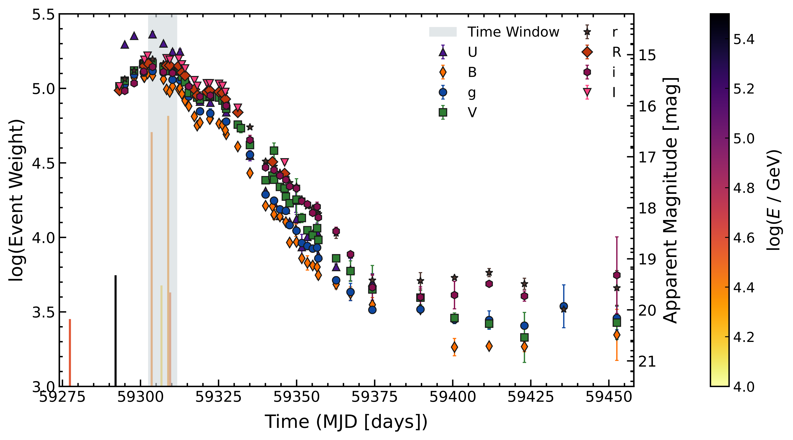
图注：\noindent\textbf{Optical light curves and neutrino flare of SN~2021foa.} Multi-band optical apparent magnitudes of SN~2021foa \(\cite{Gangopadhyay:2024pik}\) (right-hand axis; symbol shapes and colours correspond to photometric filters as indicated in the legend) are shown together with the logarithm of the signal event weights from the time-dependent neutrino analysis (left-hand axis). The vertical bars mark the arrival times of individual neutrino events, with their colours encoding the reconstructed muon energy, $\log(E/\mathrm{GeV})$, according to the colour scale. The grey shaded region denotes the best-fit Gaussian time window of the neutrino flare ($T_0\pm2\sigma$ with $T_0 = \mathrm{MJD}\,59307.1$ and $\sigma \approx 2.3$\,days). The four clustered neutrino events ($\sim$15--30~TeV) arrived within this window, temporally coincident with the optical maximum.
对应解读：建议重点查看的图表 1；关键图表逐图导读 图 1；时间依赖拟合中关于发现后约第16–22天、接近光学峰值的中微子聚集。
入选理由：这张图直接把SN 2021foa多波段光变、中微子事件到达时刻、事件权重、重建能量以及最佳拟合高斯时间窗叠加在一起，是判断中微子耀发是否真的与光学峰值同相的核心证据。它明确显示4个约15–30 TeV事件落入灰色最佳时间窗，最能支撑日报关于时间相关性和窗口后验选择风险的解读。
来源与置信度：\(arxiv_source\)；high；\(arxiv_source\) / ms.tex:figure[1]
Fig03
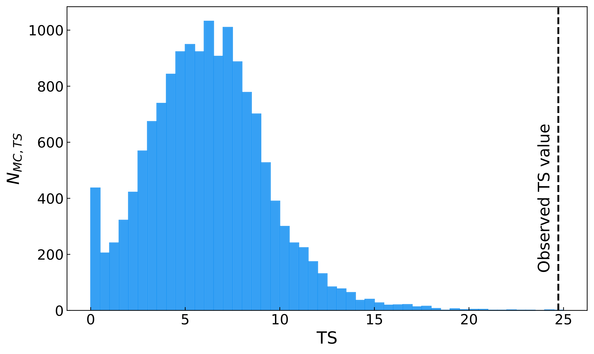
图注：\(\textbf{Distribution of maximum TS values from background Monte Carlo simulations.}\) The histogram shows the distribution of the maximum TS values obtained from 15{,}000 background trials, in which random coordinates in the southern sky ($\delta < -10^\circ$) and random central times were searched using the identical time-dependent analysis pipeline as for SN~2021foa. The vertical dashed line marks the observed TS value for SN~2021foa. Only one out of the 15{,}000 trials exceeds this value, corresponding to a $p$-value of $\sim6.7\times 10^{-5}$.
对应解读：建议重点查看的图表 4；关键图表逐图导读 图 4；模型拟合段落中关于试次因子、蒙特卡洛背景分布和全局偶然概率的讨论。
入选理由：这张图给出15,000次背景蒙特卡洛最大TS分布，并用竖线标出SN 2021foa的观测TS，是检验摘要中p≈6.7×10^-5和约4σ显著性的关键图。它能让读者直接判断观测TS位于背景尾部多远，以及尾部统计是否足够，因此比一般背景介绍图更重要。
来源与置信度：\(arxiv_source\)；high；\(arxiv_source\) / ms.tex:figure[3]
Fig02
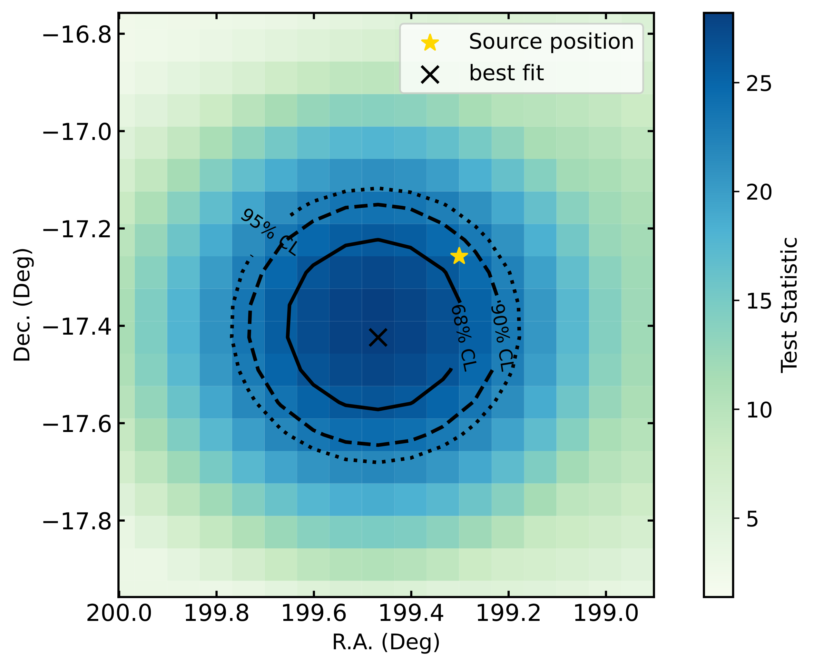
图注：\(\textbf{Test-statistic map from the neutrino analysis around SN~2021foa.}\) The map shows the TS values evaluated on a grid of celestial coordinates around the optical position of SN~2021foa. The colour scale encodes the TS value. The yellow star marks the known optical position of SN~2021foa, and the black cross indicates the best-fit neutrino source position from the maximum likelihood analysis. The solid, dashed, and dotted contours denote the 68\%, 90\%, and 95\% confidence-level error regions, respectively. The best-fit position is consistent with the optical location of the supernova within the 90\% confidence level, supporting a physical association between the neutrino excess and SN~2021foa.
对应解读：建议重点查看的图表 2；关键图表逐图导读 图 2；模型拟合中关于源方向、角距离、角误差和空间似然的部分。
入选理由：这张TS天图展示SN 2021foa光学位置、最佳拟合中微子源位置以及68%、90%、95%置信区域，直接对应空间关联是否可信的问题。它可用于检查最佳拟合位置是否与超新星在误差范围内相容，是仅凭总TS无法替代的空间诊断图。
来源与置信度：\(arxiv_source\)；high；\(arxiv_source\) / ms.tex:figure[2]
Fig05
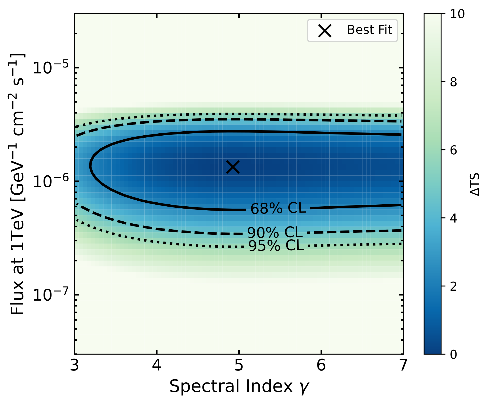
图注：\noindent\textbf{Confidence regions for the neutrino spectral index and flux normalization.} The colour scale shows the difference in TS ($\Delta \mathrm{TS}$) relative to the best-fit point (black cross) as a function of the neutrino spectral index $\gamma$ and the muon-neutrino flux normalization at 1~TeV. The solid, dashed, and dotted contours enclose the 68\%, 90\%, and 95\% confidence-level regions, respectively. The broad elongation of the contours reflects that the spectral index $\gamma$ is poorly determined by the fit due to the small number of detected events.
对应解读：建议重点查看的图表 5；关键图表逐图导读 图 5；模型拟合中关于谱指数γ、通量归一化Φ0退化以及能量预算敏感性的讨论。
入选理由：这张图展示谱指数γ与1 TeV处μ中微子通量归一化的ΔTS置信区域，能直接说明少数事件导致谱形和通量约束很宽。它对理解中微子总能量估计为何依赖谱指数和积分能段非常关键，也能支撑日报中对能量预算外推不确定性的提醒。
来源与置信度：\(arxiv_source\)；high；\(arxiv_source\) / ms.tex:figure[5]
Fig04
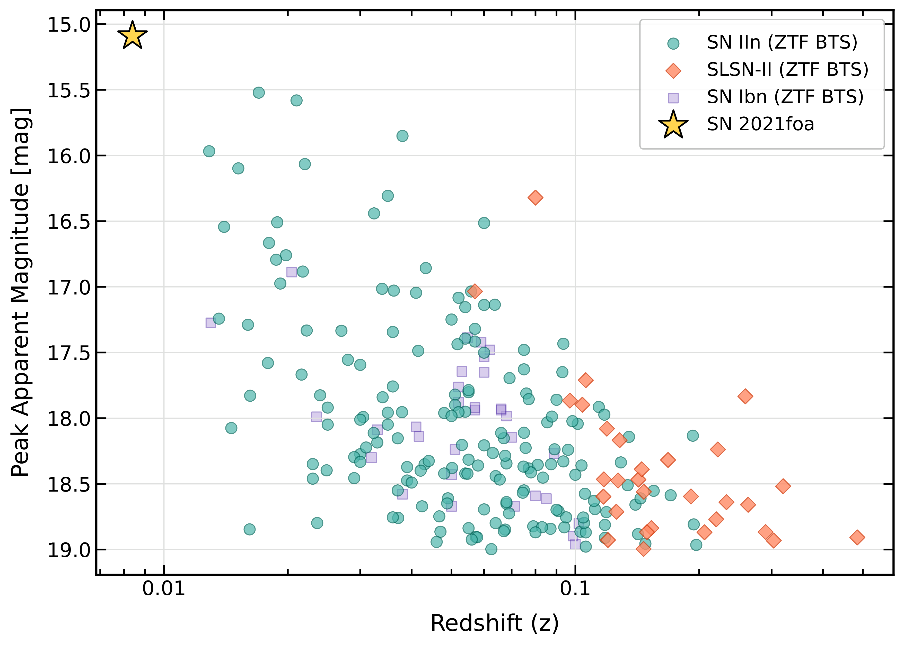
图注：\noindent\textbf{Peak apparent magnitude versus redshift for SN~2021foa and other supernovae.} SN~2021foa (yellow star) is compared to samples of Type~IIn supernovae (green circles), superluminous supernovae Type~II (SLSN-II; orange diamonds), and Type~Ibn supernovae (purple squares) from the Zwicky Transient Facility Bright Transient Survey (ZTF BTS). SN~2021foa, at $z=0.0084$, is the nearest and optically brightest Type~IIn supernovae compared to the ZTF BTS supernovae, reaching a peak apparent magnitude significantly brighter than the bulk of the comparison population.
对应解读：详细解读中关于SN 2021foa是近邻且光学很亮的相互作用超新星，因此适合作为中微子候选源的背景说明。
入选理由：这张图比较峰值视星等与红移，突出SN 2021foa在ZTF BTS样本中既近又亮，有助于解释为什么该源值得进行单源中微子关联搜索。不过它不直接展示中微子时间聚集、空间似然、TS背景或谱拟合，因此科学诊断价值低于前四张。
来源与置信度：\(arxiv_source\)；high；\(arxiv_source\) / ms.tex:figure[4]
强相关工作
这篇工作应放在 IceCube 暂现源关联的大背景下理解。TXS 0506+056 提供了耀变体方向中微子耀发的经典案例，潮汐瓦解事件候选则展示了被埋藏喷流或核区暂现活动可能产生中微子的思路。SN 2021foa 若成立，会把类似方法推进到核心塌缩超新星，尤其是相互作用型 IIn/Ibn 超新星。建议检索关键词包括 “IceCube time-dependent point source likelihood”, “interacting supernova high-energy neutrinos”, “Type IIn supernova neutrino emission”, “choked jet supernova neutrinos”, “SN 2021foa flip-flop supernova”。
也要注意相反观点和张力。过去不少理论工作认为相互作用超新星可贡献弥散中微子背景，但单个源可探测性通常要求非常近、非常致密的星周介质和较高宇宙线加速效率；若 SN 2021foa 的各向同性等效中微子能量真的远超光学与动能预算，普通模型会很吃紧。另一类张力来自统计学：多信使关联搜索容易受到后验选择和大试次因子的影响，因此需要独立数据集、预注册样本或堆叠检验来验证。检索时可同时关注 “trial factor transient neutrino association”, “IceCube supernova stacking”, “choked gamma-ray burst neutrinos” 和 “circumstellar interaction cosmic rays”。
相似工作：
- https://arxiv.org/abs/1807.08794
- https://arxiv.org/abs/1807.08816
- https://arxiv.org/abs/1910.08488
基础理论 / 方法工作：
- https://arxiv.org/abs/1304.5356
- https://arxiv.org/abs/1101.4256
- https://arxiv.org/abs/1104.3335
相反观点 / 张力线索：
- https://arxiv.org/abs/1507.05990
- https://arxiv.org/abs/1901.09551
2. Joint Multi-Period Fermi-LAT and LHAASO Constraints on Axion-Like Particles from Mrk 421 Using Profile Likelihood with Gaussian Copula Correlation
- 来源：arXiv / astro-ph.HE
- 链接：https://arxiv.org/abs/2606.05738v1
- 作者：Longhua Qin, Jiancheng Wang, Chuyuan Yang, Huaizhen Li, Ao Wang, Weiwei Na, Hushan Xu, Xiaogu Zhong
- 评分：novelty 7/10，importance 8/10，relevance 10/10，final 9.40/10
- 推荐理由：使用Fermi-LAT与LHAASO多时期Mrk 421数据联合约束ALP，涉及GeV-TeV伽马射线、LHAASO和耀变体，且给出可复用的联合似然框架；高度相关。
中文题目：用高斯 Copula 相关性的多时期联合似然，从 Mrk 421 的 Fermi-LAT 与 LHAASO 数据限制轴子样粒子
做了什么：这篇文章把 Mrk 421 在五个观测时期的同步 Fermi-LAT 与 LHAASO 伽马射线谱联合起来，用轮廓似然搜索轴子样粒子引起的光子—轴子振荡信号。作者的重点不是声称发现新粒子，而是改进多时期联合约束的统计框架：先在无轴子样粒子假设下全局优化喷流模型等 nuisance 参数，再对轴子样粒子质量 \(m_a\) 和光子耦合 \(g_{a\gamma}\) 做 profiling，并用高斯 copula 引入不同时期之间的弱相关。结果给出低质量区 \(m_a\lesssim1\,\mathrm{neV}\) 的 \(95\%\) 置信上限 \(g_{a\gamma}=8.33\times10^{-14}\,\mathrm{GeV}^{-1}\)，以及在 \(0.1\)--\(500\,\mathrm{neV}\) 范围内两类喷流模型下约 \(6.5\)--\(7.3\times10^{-12}\,\mathrm{GeV}^{-1}\) 的保守上限。
为什么重要：活动星系核伽马射线谱是限制极轻弱耦合新粒子的少数天体物理窗口之一，但这类约束长期受源内本征谱、河外背景光吸收、磁场模型和多时期系统误差影响。Mrk 421 亮、近、变源强，是检验 \(\mathrm{GeV}\)--\(\mathrm{TeV}\) 宽能段谱形异常的经典目标；LHAASO 的高能覆盖使得传统 Fermi-LAT 或 IACT 单独数据无法触及的能区连续性更好。文章重要之处在于把粒子物理参数约束、喷流辐射模型和多时期统计相关性放进同一个 likelihood 框架，而不是简单拼接各时期的独立约束。
理论 / 观测 / 仪器方法价值：对理论而言，它把轴子样粒子导致的能谱不规则性与两种较具体的喷流辐射图景——双区混合模型和单区强子模型——一起检验，有助于判断约束是否严重依赖本征谱假设。对观测而言，它展示了 LHAASO 与 Fermi-LAT 的宽能段联合数据如何提高对 \(\gamma\)-ray opacity 与光子振荡特征的敏感性。对方法而言，高斯 copula 处理弱相关、多时期全局 nuisance 优化、轮廓似然扫描 \((m_a,g_{a\gamma})\) 的流程，可迁移到 CTA、SWGO、IceCube 或多信使样本的未来分析。
为什么应该关注：如果你关心暗物质候选、极轻粒子、伽马射线传播或喷流物理，这篇文章值得看，因为它直接触及一个常见痛点：天体物理约束很容易被源模型和统计拼接方式支配。即使你不做轴子样粒子，它也提供了一个如何把多时期、多仪器、弱相关数据合并进可检验统计框架的案例。读者应特别关注其约束曲线相对 CAST、H.E.S.S.、MAGIC、Fermi 等结果的位置，以及不同喷流模型下上限变化有多大。
展开详细解读：文章讲解、背景、理论、重点章节、图表与相关工作
文章详细讲解
科学问题：轴子样粒子是一类极轻赝标量场，可通过 \(g_{a\gamma}a\mathbf{E}\cdot\mathbf{B}\) 与光子耦合。在源区、星系际空间或银河系磁场中，高能光子可能与轴子样粒子相互转换，使原本平滑的 blazar 伽马射线谱出现能量依赖的不规则结构，或改变高能端受河外背景光吸收后的衰减形状。Mrk 421 是近邻 BL Lac 天体，红移小、亮度高、变率强，长期被用作检验 \(\mathrm{GeV}\)--\(\mathrm{TeV}\) 能谱异常的目标。这篇文章要回答的是：在考虑多时期观测、源内辐射模型和时期之间弱相关的情况下，Fermi-LAT 与 LHAASO 是否能给出稳健的 \((m_a,g_{a\gamma})\) 排除区间。
作者怎么做：他们构造了一个多时期联合 profile-likelihood 框架。五组同步的 Fermi-LAT 与 LHAASO 数据分别覆盖不同亮度或谱态时期，每个时期都有对应的源模型 nuisance 参数。与简单把各时期 likelihood 相乘或把 \(\chi^2\) 相加不同，作者先在无轴子样粒子假设下对所有 nuisance 参数做全局优化，然后在给定 \((m_a,g_{a\gamma})\) 时重新 profiling。这能减少高维参数空间中数值不稳定、局部极值和过度拟合带来的假信号。为处理不同时期残差或系统误差可能存在的弱相关，他们引入高斯 copula，并采用相关系数 \(\rho=0.03\) 作为弱相关建模。
关键结果：在低质量区域 \(m_a\lesssim1\,\mathrm{neV}\)，文章给出 \(95\%\) 置信水平的耦合上限 \(g_{a\gamma}=8.33\times10^{-14}\,\mathrm{GeV}^{-1}\)，接近或进入传统太阳轴子实验敏感讨论区域。更宽的 \(0.1\)--\(500\,\mathrm{neV}\) 范围内，双区混合喷流模型给出保守界 \(g_{a\gamma}<6.50\times10^{-12}\,\mathrm{GeV}^{-1}\)，单区强子模型给出 \(g_{a\gamma}<7.30\times10^{-12}\,\mathrm{GeV}^{-1}\)。两种源模型下界限接近，说明主要结论并非完全由某一个本征谱参数化驱动，但不同质量区的局部灵敏度仍会受谱形、磁场和能量响应影响。
局限和下一步：这类约束无法脱离磁场假设，包括源区磁场、星系际磁场、银河系磁场结构以及湍流 coherence length。高斯 copula 的 \(\rho=0.03\) 是一种弱相关近似，是否充分描述仪器交叉定标、共同背景模型或同一源长期物理状态的相关性，需要更多稳健性检验。喷流模型虽然比经验曲线更物理，但仍可能遗漏多区电子分布、外部吸收、时间依赖加速和 hadronic cascade 的复杂性。下一步值得做的是加入更多 LHAASO 时期、联合 IACT 谱点、对磁场模型做层级贝叶斯边缘化，并用模拟注入检验该 pipeline 对真实轴子样粒子信号和本征谱弯曲的可区分性。
背景知识
轴子样粒子是由 Peccei-Quinn 轴子思想推广而来的一类轻粒子。与 QCD 轴子不同，一般轴子样粒子的质量 \(m_a\) 与耦合 \(g_{a\gamma}\) 不必满足严格的 QCD 关系，因此天体物理和实验搜索通常在 \((m_a,g_{a\gamma})\) 平面上给出排除区或敏感区。伽马射线天体物理尤其关注 \(\mathrm{neV}\) 到 \(\mu\mathrm{eV}\) 量级，因为这一区间与 \(\mathrm{GeV}\)--\(\mathrm{TeV}\) 光子在 \(\mu\mathrm{G}\) 到 \(\mathrm{nG}\) 磁场中的混合临界能量相匹配。
Mrk 421 是最近、最亮的 TeV blazar 之一，红移约为 \(z\simeq0.031\)。它的喷流指向接近视线方向，因此观测到强烈的 Doppler boosting 和快速变率。历史上，Mrk 421 被 Whipple、HEGRA、MAGIC、VERITAS、H.E.S.S.、Fermi-LAT 以及现在的 LHAASO 多次观测，是研究 BL Lac 谱能量分布、粒子加速和河外背景光吸收的基准源。对于轴子样粒子研究，它的优势是亮、近、可重复观测；不足是本征变率强，必须严肃处理多时期谱形差异。
传统的轴子样粒子伽马射线约束有两类思路。一类寻找能谱中的 quasi-oscillatory irregularities，即光子—轴子样粒子混合造成的能量依赖振荡；另一类寻找高能宇宙透明度异常，即轴子样粒子在传播途中避开部分 \(\gamma\gamma\) 吸收后再转回光子。前者需要高能量分辨率和良好谱模型，后者对河外背景光模型和磁场模型更敏感。本文更接近第一类与传播修正结合的做法：用宽能段谱形和 likelihood 扫描排除会造成过强谱畸变的参数。
为什么现在值得重新看：LHAASO 对 \(\mathrm{TeV}\) 以上能段有大视场、长时间监测和很高统计量，弥补了单次 IACT 观测视场小、天气和 duty cycle 受限的问题。Fermi-LAT 则在 \(\mathrm{GeV}\) 能段提供连续长期基线。二者同步多时期数据使得同一源在不同活动态下的本征谱和传播效应可以交叉比较。只看单时期数据容易把源内弯曲误认为新物理，或把统计波动误认为振荡；多时期联合分析正是为减轻这个问题。
该领域常见误区包括：第一，把更强的数值上限自动等同于更可靠的约束，而忽略磁场与本征谱系统误差；第二，把各时期 likelihood 简单相乘却不检查相关误差；第三，用过于灵活的经验谱吸收掉潜在轴子样粒子信号，或用过于僵硬的谱模型制造假排除；第四，低质量区域的强约束往往依赖临界能量是否落入观测窗口之外的近似，必须结合完整 photon survival probability 曲线判断。
基础理论 / 方法脉络
基础物理图像是：在外磁场中，光子的偏振分量可以与赝标量轴子样粒子混合。只有与横向磁场 \(B_T\) 平行的光子偏振参与混合，垂直偏振基本作为旁观通道。混合强度由 \(g_{a\gamma}B_T\) 控制，而轴子样粒子质量项、等离子体频率和 QED 真空双折射项决定相位失配。若相位失配小，光子可在一段 coherence length 内有效转化为轴子样粒子。
对 blazar 伽马射线而言，传播链通常包括源区或宿主星系磁场、星系际空间、银河系磁场，并叠加河外背景光导致的 \(\gamma\gamma\to e^+e^-\) 吸收。轴子样粒子不与河外背景光强相互作用，因此在某些参数区会提高远端高能光子的表观存活率；但对 Mrk 421 这种近源，谱形不规则性和宽能段一致性往往比单纯透明度增强更关键。能量越高，仪器能量分辨率、有效面积和背景估计也越重要。
本文的源模型层面采用两类情景：双区混合模型和单区强子模型。双区混合模型可理解为用不同区域或不同粒子辐射成分解释宽带谱，例如 leptonic 成分主导某些能段，而 hadronic 或 cascade 成分影响高能端。单区强子模型则更强调质子同步辐射、光介子过程或次级粒子 cascade 对 TeV 谱的贡献。轴子样粒子效应叠加在这些本征谱模型之上，因此拟合时必须区分“源本来弯了”和“传播过程中被振荡调制了”。
统计方法的关键量是每个时期、每个能量 bin 的观测通量或计数，以及在给定源模型和轴子样粒子参数时的预测值。轮廓似然把喷流模型参数、归一化、背景或系统项当作 nuisance 参数，在每个 \((m_a,g_{a\gamma})\) 点上最大化似然，从而得到对粒子参数的检验统计量。多时期联合的难点是：时期之间不是完全独立，因为仪器定标、共同模型选择和同一物理源可能引入相关误差；但又不能假设强相关，否则会丢失多时期带来的统计增益。高斯 copula 就是用一个相关结构把边缘 likelihood 连接起来。
常见退化包括 \(g_{a\gamma}\) 与磁场强度 \(B_T\) 的乘积退化、\(m_a\) 与临界能量位置退化、本征谱 cutoff 与河外背景光吸收退化、仪器能量尺度偏差与谱中振荡相位退化。选择效应也不可忽视：只挑选高信噪比或耀发期可能增强对细结构的敏感性，但也更容易受到时间依赖本征谱的影响。系统误差上，LHAASO 高能端背景、Fermi-LAT 源混淆、跨仪器通量归一化和能量尺度都应进入稳健性讨论。
公式与推导
从光子—轴子样粒子相互作用出发，低能有效拉氏量可写为
其中 \(a\) 是轴子样粒子场，\(m_a\) 是质量，\(g_{a\gamma}\) 是光子耦合，\(F_{\mu\nu}\) 与 \(\tilde{F}^{\mu\nu}\) 分别是电磁场张量及其对偶。最后一项说明只有存在外磁场时，传播光子的电场才能与 \(a\) 混合。
在单个均匀磁场区、沿 \(z\) 方向传播的近似下，光子平行偏振 \(A_\parallel\) 与轴子样粒子振幅 \(a\) 满足类薛定谔方程
这里 \(\Delta_{a\gamma}=g_{a\gamma}B_T/2\)，\(B_T\) 是垂直于传播方向的磁场分量；\(\Delta_a=-m_a^2/(2E)\)，\(E\) 是光子能量；\(\Delta_\parallel\) 包含等离子体、QED 和吸收修正。
若暂时忽略吸收并把 \(\Delta_\parallel\simeq-\omega_{\rm pl}^2/(2E)\)，相位失配为
其中 \(\omega_{\rm pl}\) 是等离子体频率。这个量决定振荡长度 \(l_{\rm osc}=2\pi/\Delta_{\rm osc}\)，也决定能谱不规则性的能量尺度。
单区转换概率为
其中 \(s\) 是磁场相干区长度。若 \(\Delta_{a\gamma}\) 大且相位失配小，概率可接近强混合极限；若相位失配大，概率被 \((2\Delta_{a\gamma}/\Delta_{\rm osc})^2\) 抑制。
临界能量可用来判断某个 \(m_a\) 是否落在观测窗口内：
当 \(E\gg E_{\rm crit}\) 时更接近强混合，谱上可能出现较宽的调制；当 \(E\ll E_{\rm crit}\) 时混合弱。这个式子也显示 \(m_a\)、\(g_{a\gamma}\) 与 \(B_T\) 的基本退化。
传播中的普通光子还会被河外背景光吸收。无轴子样粒子时，观测通量常写为
其中 \(\Phi_{\rm int}(E)\) 是源本征通量，\(\tau_{\gamma\gamma}(E,z)\) 是光子与河外背景光产生 \(e^+e^-\) 的光深。
有轴子样粒子混合时，可以把传播效应压缩为光子存活概率 \(P_{\gamma\gamma}(E;m_a,g_{a\gamma},\boldsymbol{\eta}_B)\)，于是预测通量为
其中 \(\boldsymbol{\theta}_{\rm src}\) 是喷流模型参数，\(\boldsymbol{\eta}_B\) 是磁场模型参数。论文的物理检验实质上就是看某组 \((m_a,g_{a\gamma})\) 是否使 \(P_{\gamma\gamma}\) 造成与 Fermi-LAT 和 LHAASO 谱不兼容的结构。
对第 \(k\) 个时期、第 \(i\) 个能量 bin，若用近似高斯通量误差，边缘似然可写为
这里 \(F_{ki}\) 是观测通量或展开后的谱点，\(M_{ki}\) 是模型预测，\(\sigma_{ki}\) 是统计与系统误差合成后的不确定度，\(C_k\) 是与参数无关的常数。实际分析也可用 Poisson 或 instrument response folded likelihood，但这个式子说明残差如何进入检验。
高斯 copula 用边缘分布 \(F_k\) 与相关矩阵 \(R\) 构造联合分布：
其中 \(u_k=F_k(x_k)\)，\(\Phi^{-1}\) 是一维标准正态分布函数的反函数，\(\Phi_R\) 是相关矩阵为 \(R\) 的多元正态分布函数。本文用弱相关 \(\rho=0.03\) 表示不同时期之间存在小但非零的共同误差。
轮廓似然检验统计量可写为
其中 \(\hat{\hat{\boldsymbol{\theta}}}\) 是固定 \((m_a,g_{a\gamma})\) 时最大化得到的 nuisance 参数，\((\widehat{m}_a,\widehat{g}_{a\gamma},\hat{\boldsymbol{\theta}})\) 是全局最佳拟合。排除曲线通常由 \(q\) 与相应置信水平阈值比较得到，例如在近似 Wilks 条件下二维 \(95\%\) 区域常与 \(\Delta q\) 阈值相连，但边界、非线性和 look-elsewhere 效应会使实际阈值需要模拟校准。
模型拟合 / 应用方法
这篇文章的拟合对象是五个时期的 Fermi-LAT 与 LHAASO 同步伽马射线谱。每个时期需要描述源本征谱或喷流辐射参数，同时全局共享轴子样粒子参数 \((m_a,g_{a\gamma})\) 以及部分传播模型假设。拟合量可以理解为每个能量 bin 的通量、能量通量或计数空间中的 likelihood；如果作者在谱点空间工作，残差的形状尤其重要，因为轴子样粒子信号通常不是简单整体归一化偏移，而是能量相关的振荡或局部硬化。
nuisance 参数包括喷流 Doppler 因子、磁场、粒子谱指数、最大能量、辐射区大小、归一化、可能的 cutoff 或 break，以及仪器交叉定标项。双区混合模型与单区强子模型的参数物理意义不同，但在统计角色上都承担“给出无新物理本征谱”的基线。作者强调先在无轴子样粒子假设下全局优化 nuisance 参数，这一步可避免每个 \((m_a,g_{a\gamma})\) 网格点因初值不同或局部极小而出现不连续 likelihood 地形。
似然处理上，传统做法常把各时期独立 likelihood 相乘，即 \(L_{\rm joint}=\prod_k L_k\)。本文认为这种处理忽略了弱相关，于是通过高斯 copula 对边缘 likelihood 进行连接。\(\rho=0.03\) 的选择意味着相关性很弱，但对高统计量数据和多时期联合约束仍可能影响置信区间的覆盖率。读者应检查作者是否测试了 \(\rho=0\)、更大 \(\rho\) 或不同相关矩阵结构，因为相关性假设可能改变排除曲线的光滑程度和局部凹凸。
参数退化方面，最核心的是 \(g_{a\gamma}B_T\) 退化：若磁场强度或 coherence length 改变，相同的谱调制可由不同 \(g_{a\gamma}\) 产生。其次是 \(m_a\) 控制临界能量位置，可能与本征谱 break、电子最大能量、hadronic cascade 转折或 EBL 吸收弯曲混淆。仪器能量尺度误差会移动谱结构位置，通量归一化误差会改变谱端相对权重。若模型没有显式边缘化这些系统误差，约束应理解为给定系统假设下的条件上限。
残差诊断应看两个层次。第一是每个时期无轴子样粒子最佳拟合的残差是否已经随机分布；若无轴子样粒子模型本身在某些能段系统偏离，轴子样粒子排除可能只是惩罚了错误的基线模型。第二是在被排除的 \((m_a,g_{a\gamma})\) 点，残差是否出现跨时期一致的振荡相位或只由某个时期、某几个 LHAASO 高能点驱动。后一种情况对系统误差非常敏感，应谨慎解读。
实际应用上，这个框架适合扩展到更多 blazar 或多信使联合样本，但扩展时需要层级结构：不同源共享 \((m_a,g_{a\gamma})\)，但各自有红移、磁场、喷流和 EBL 路径；不同仪器有各自响应和系统误差。若未来 CTA 或 SWGO 提供更精细 TeV 谱，该方法可用于真实 discovery test，但必须用大量 mock spectra 检验 false exclusion rate 和 false discovery rate。
重点章节 / 结果段落怎么读
-
数据与样本部分应先看五个 Mrk 421 同步时期是如何定义的。关键问题是 Fermi-LAT 与 LHAASO 是否严格时间重叠、每个时期的曝光和能量覆盖如何、是否包含耀发期、谱点误差是否含系统项。这个部分决定多时期联合分析的可信度。
-
喷流模型部分要比较双区混合模型和单区强子模型。读者应关注本征谱灵活度：模型是否足以拟合无轴子样粒子情况下的宽带谱，又是否过于灵活以至于吸收任何轴子样粒子调制。若论文给出参数表，应检查参数是否在物理合理范围内，例如磁场、Doppler 因子、辐射区大小和粒子能量预算。
-
轴子样粒子传播与光子存活概率部分是物理核心。建议重点看磁场结构、EBL 模型、能量范围和 \((m_a,g_{a\gamma})\) 扫描网格。不同磁场假设会显著影响排除区，因此读者应判断文章的约束是“保守代表值”还是“特定磁场模型下的强约束”。
-
统计方法部分是本文的方法贡献。需要仔细读无轴子样粒子全局 nuisance 优化、profile likelihood 的定义、高斯 copula 的引入方式以及 \(\rho=0.03\) 的来源或动机。若有附录，优先看数值稳定性、覆盖率或 mock test，因为这直接关系到 \(95\%\) 置信上限是否可靠。
-
结果与讨论部分应把低质量 \(m_a\lesssim1\,\mathrm{neV}\) 的强界限和 \(0.1\)--\(500\,\mathrm{neV}\) 的保守界限分开读。前者可能依赖特定混合极限和观测窗口关系，后者更能反映宽质量范围内的实际稳健灵敏度。最后要看作者如何与 CAST、Fermi、H.E.S.S.、MAGIC 和其他 blazar 约束比较。
建议重点查看的图表
-
多时期 SED 或能谱图：检查五个时期的 Fermi-LAT 与 LHAASO 谱点是否连续，误差条在交叠能区是否一致，高能端是否由少数点主导。
-
无轴子样粒子最佳拟合残差图：看残差是否随机分布，是否在 LHAASO 高能端或 Fermi-LAT 高能端有系统偏离。若无新物理模型残差已有结构，排除结论要谨慎。
-
光子存活概率 \(P_{\gamma\gamma}(E)\) 示例曲线：检查不同 \((m_a,g_{a\gamma})\) 下振荡结构落在哪个能区，是否会被仪器能量分辨率平滑掉。
-
\((m_a,g_{a\gamma})\) 排除曲线：看双区混合模型与单区强子模型的曲线差异、局部尖峰或凹陷、低质量平台以及高质量端灵敏度下降。
-
copula 相关性或联合 likelihood 诊断：若论文给出 \(\rho=0\) 与 \(\rho=0.03\) 比较，应看排除曲线和 \(q\) 值变化，判断弱相关是否只是形式修正还是实质影响。
-
参数表或 corner plot：检查喷流参数和 nuisance 参数是否有强退化，尤其是本征谱 cutoff、归一化、磁场与 \(g_{a\gamma}\) 的相关性。
-
与外部实验和观测比较图：看本文约束相对 CAST、HB stars、SN 1987A、Fermi 或 TeV blazar 结果的位置，注意不同结果使用的置信水平和磁场假设未必相同。
关键图表逐图导读
图 1：建议把它作为数据完整性图来读。横轴通常是能量 \(E\)，纵轴可能是 \(E^2dN/dE\) 或通量 \(F_E\)。不同颜色代表五个观测时期，Fermi-LAT 点覆盖 \(\mathrm{GeV}\) 区，LHAASO 点覆盖 \(\mathrm{TeV}\) 及以上。读图时不要只看模型线是否穿过误差条，还要看跨仪器交叠区是否存在归一化跳变；这种跳变可能伪装成传播效应。
图 2：若论文给出双区混合模型和单区强子模型的 SED 拟合，应关注各辐射成分的分解。横轴为频率或能量，纵轴为能量通量；数据点是多时期谱点，实线或虚线是不同成分。主要结论应是两类模型都能提供可接受的无轴子样粒子基线。读图陷阱是：成分分解并非唯一，尤其在高能端数据稀疏时，不同物理模型可能给出相似总谱。
图 3：光子存活概率或轴子样粒子调制曲线通常是本文的物理直觉图。横轴是 \(E\)，纵轴是 \(P_{\gamma\gamma}\) 或相对无轴子样粒子通量比。不同线对应不同 \(m_a\) 与 \(g_{a\gamma}\)。应看振荡是否落在 Fermi-LAT 与 LHAASO 的高信噪比能区，以及振荡宽度是否大于仪器能量分辨率。若曲线有很窄振荡，实际观测会被能量响应卷积平滑，不能按理论细线直接判断。
图 4：排除曲线图的横轴一般是 \(m_a\)，纵轴是 \(g_{a\gamma}\)，常用双对数坐标。本文曲线应与 CAST 或其他天体物理界限同图比较。关键读法是看低质量端是否形成近似水平平台，以及 \(0.1\)--\(500\,\mathrm{neV}\) 内是否存在由临界能量扫过观测窗口造成的凹谷。陷阱是不同文献的磁场模型、统计定义和置信水平不一致，线条上下不能简单排名。
图 5：如果有 \(q(m_a,g_{a\gamma})\) 热图或 likelihood map，横纵轴同为粒子参数，颜色代表检验统计量或 \(\Delta\ln L\)。应检查高 \(q\) 区域是否平滑，是否出现孤立数值斑点；孤立斑点常提示优化失败、网格过粗或某个时期谱点异常。轮廓线的闭合形态也能显示参数退化。
图 6：若有残差或 pull 分布图，横轴是能量或 bin 序号，纵轴是 \((F-M)/\sigma\)。应分别看无轴子样粒子模型、允许轴子样粒子模型以及被排除参数点的残差。真正稳健的排除应表现为被排除模型在多个时期和多个能段产生系统偏离，而不是只在一两个高杠杆点上恶化。
论文原图 / 可嵌入图片
Fig01
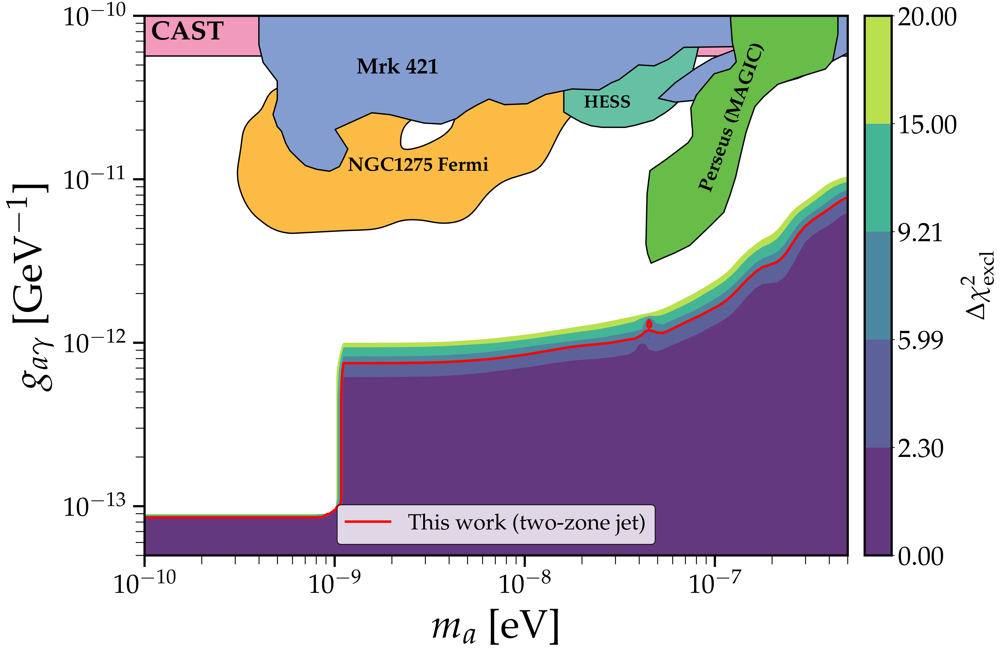
图注：Exclusion limits on the ALP-photon coupling $g_{a\gamma}$ versus the ALP mass $m_a$ obtained in this work using the two-zone hybrid model for Mrk 421 (red line, 95\% CL). The color scale shows the excluded $\Delta\chi^2$ values. For comparison, we also display the constraints established by the CAST experiment \(\citep{cas2017},\) the H.E.S.S. observations of PKS 2155-304 \(\citep{abr2013},\) the Fermi-LAT observation of NGC 1275 \(\citep{aje2016},\) the ARGO-Fermi observation of Mrk 421\citep{li2021} and the MAGIC observation of Perseus cluster of galaxies \(\citep{ale2010}.\)
对应解读：对应“建议重点查看的图表”第4项和第7项，以及“关键图表逐图导读”中的图4：双区混合模型下的\\((m_a,g_{a\\gamma})\\)排除曲线、\\(\\Delta\\chi^2\\)强度和外部实验/观测比较。
入选理由：这是本文最核心的结果图之一，直接展示双区混合模型给出的95% CL轴子样粒子耦合上限，并用颜色标出被排除的\\(\\Delta\\chi^2\\)区域；同时包含CAST、H.E.S.S.、Fermi-LAT、ARGO-Fermi、MAGIC等外部约束，最能支撑日报中关于低质量平台、局部灵敏度结构、与既有实验比较以及统计显著性解读的讨论。
来源与置信度：\(arxiv_source\)；high；\(arxiv_source\) / main.tex:figure[1]
Fig02
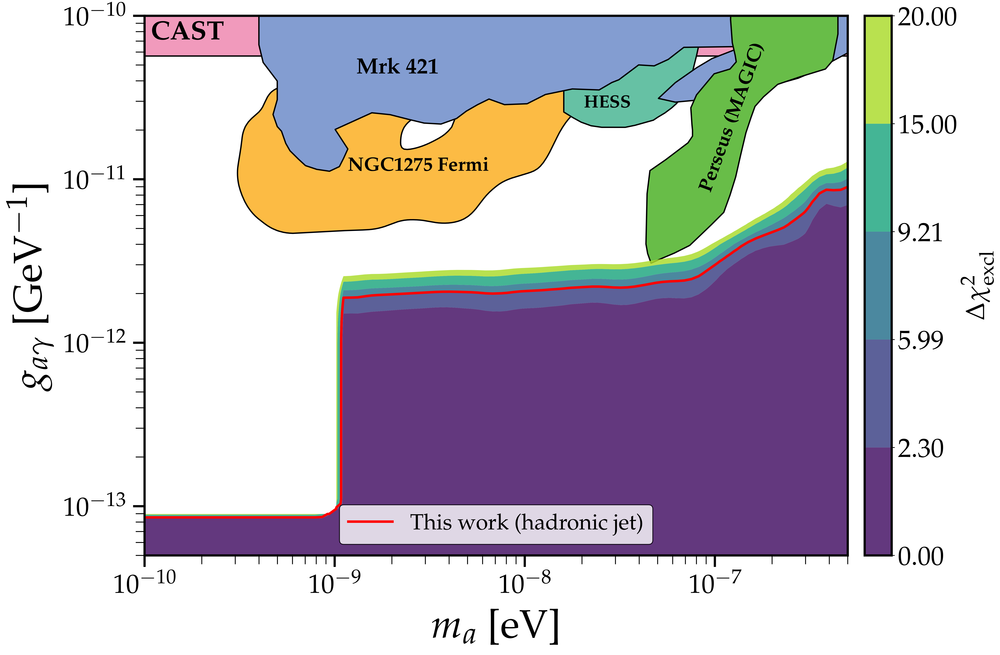
图注：Exclusion limits on the ALP-photon coupling $g_{a\gamma}$ versus the ALP mass $m_a$ obtained in this work using the single-zone hadronic model for Mrk 421.
对应解读：对应“建议重点查看的图表”第4项，以及“关键图表逐图导读”中的图4和模型拟合段落：单区强子模型下的\\((m_a,g_{a\\gamma})\\)排除曲线，用于与双区混合模型结果比较。
入选理由：该图给出另一套源本征谱假设——单区强子模型——下的ALP排除界限，是判断结论是否依赖喷流辐射模型的关键对照图。虽然信息量少于包含外部比较和\\(\\Delta\\chi^2\\)色标的Fig01，但它直接支撑日报中关于双区混合模型与单区强子模型上限差异、模型系统误差和稳健性的讨论。
来源与置信度：\(arxiv_source\)；high；\(arxiv_source\) / main.tex:figure[2]
强相关工作
这篇工作与既有 blazar 轴子样粒子搜索属于同一脉络，例如利用 H.E.S.S. 的 PKS 2155-304、利用 Fermi-LAT 的 NGC 1275 或 blazar 样本、以及 MAGIC 对高能谱形的约束。相似工作的核心差别通常在三个方面：目标源红移和亮度、磁场模型、以及统计上如何处理本征谱不确定性。检索时可用关键词 “ALP gamma-ray blazar spectral irregularities”, “photon ALP mixing Fermi-LAT”, “LHAASO Mrk 421 axion-like particles”, “profile likelihood ALP constraints”。
它也与实验室和恒星物理约束形成互补关系。CAST、太阳轴子、水平分支星、白矮星冷却和超新星约束覆盖相邻或重叠的 \((m_a,g_{a\gamma})\) 区域，但系统误差来源完全不同。天体伽马射线约束的优势是可触及很小耦合和特定低质量窗口，弱点是磁场与源模型依赖强；实验室约束更干净，但灵敏度和质量窗口受磁体长度、磁场和探测技术限制。
相反观点或张力主要来自对谱形异常解释的保守态度。一些研究认为所谓宇宙透明度异常或谱不规则性可由 EBL 模型、仪器能量尺度、源内多区辐射、选择偏差或后验挑选解释，不需要新粒子。因此阅读本文时应把它看作“在一组物理和统计假设下排除某些轴子样粒子参数”，而不是对所有轴子样粒子模型的模型无关排除。建议检索 “EBL uncertainty ALP constraints”, “look elsewhere effect ALP gamma rays”, “intrinsic blazar curvature axion-like particle limits”。
相似工作：
- https://arxiv.org/abs/2606.05738
- https://ui.adsabs.harvard.edu/
基础理论 / 方法工作：
- https://arxiv.org/abs/0707.4312
- https://arxiv.org/abs/0912.0015
- https://arxiv.org/abs/1208.6283
相反观点 / 张力线索：
- https://arxiv.org/abs/1101.4645
- https://arxiv.org/abs/1302.1208
3. Probing a new subclass of llGRB-SN transients: Insights from EP250304a and its associated supernova
- 来源：arXiv / astro-ph.HE
- 链接：https://arxiv.org/abs/2606.06213v1
- 作者：L. Cotter, A. Martin-Carrillo, R. A. J. Eyles-Ferris, L. Izzo, D. B. Malesani, Y. Julakanti, G. Corcoran, A. Saccardi
- 评分：novelty 8/10，importance 8/10，relevance 9/10，final 9.35/10
- 推荐理由：Einstein Probe发现的EP250304a/SN 2025fhm可能代表低光度GRB-SN、激波茧主导的发动机驱动爆炸新子类；GRB相关且多波段证据较清楚。
中文题目：探测低光度伽马暴—超新星的新亚类：来自 EP250304a 及其伴随超新星的线索
做了什么：这篇文章研究了爱因斯坦探针发现的瞬变 EP250304a 及其关联的宽线 Ic 型超新星 SN 2025fhm，红移为 \(z=0.2\)。事件触发时没有探测到常规伽马射线暴信号，但作者结合 X 射线、光学和多波段光变曲线，认为它仍显示出相对论外流的证据。通过光谱、测光和 Redback 拟合，论文将它与 GRB 060218/SN 2006aj、GRB 100316D/SN 2010bh、GRB 171205A/SN 2017iuk 等低光度 GRB-SN 系统比较，指出早期辐射可由热化的激波茧层解释。核心结论是：EP250304a/SN 2025fhm 可能属于一个以 shocked cocoon 辐射主导的低光度 GRB-SN 亚类，连接普通宽线 Ic 超新星与典型发动机驱动 GRB-SN 的低光度端。
为什么重要：它重要在于，EP 这类软 X 射线宽视场巡天开始打开过去漏掉的参数空间：低光度、软谱、伽马射线不显著但可能有相对论外流的爆发现象。如果这些事件确实形成一个连续族，那么 GRB-SN 不再只由明亮伽马触发定义，而应从喷流、茧层、包层结构和发动机能量注入的角度重新分类。
理论 / 观测 / 仪器方法价值：对观测而言，这项工作给出了一套识别“无明显伽马射线但有 GRB-like 外流”的多波段判据；对理论而言，它支持激波茧层在低光度 GRB-SN 中可能不是附属成分，而是主导早期辐射的核心物理；对方法而言，论文展示了如何用 Redback 等框架把超新星放射性加热、早期热成分和多波段数据放在同一拟合流程中比较。
为什么应该关注：如果你关心核心坍缩超新星、相对论喷流、低光度伽马暴或 X 射线瞬变巡天，这篇文章值得看，因为它展示了 EP 将怎样改变样本选择函数。它提醒我们：没有伽马射线探测并不等于没有喷流，低光度 GRB-SN 的真实发生率、能量分布和喷流突破条件可能都被过去的触发方式系统性低估了。
展开详细解读：文章讲解、背景、理论、重点章节、图表与相关工作
文章详细讲解
科学问题：这篇论文关心的是一个边界对象——EP250304a/SN 2025fhm 到底是普通宽线 Ic 型超新星、一次低光度伽马射线暴相关超新星，还是某种由激波茧层主导的新型发动机驱动爆发。传统 GRB-SN 通常由伽马射线触发，再在光学中找到宽线 Ic 型超新星；但 EP250304a 的特殊之处是 EP 在软 X 射线中发现了事件，触发时却没有对应的伽马射线探测。这个事实把问题从“是否有 GRB”转成“是否存在未被伽马仪器识别的相对论外流”。
作者怎么做：论文围绕 EP250304a 与 SN 2025fhm 的多波段数据展开，包括 EP 发现信息、后续 X 射线与光学测光、光谱演化以及与已知低光度 GRB-SN 的比较。作者使用 Redback Python package 对多波段光变曲线建模，试图区分普通超新星放射性衰变供能、早期额外热成分、以及与 shocked cocoon 相关的快速蓝色辐射。红移 \(z=0.2\) 使得这个事件既不算极近邻，也不算典型高红移 GRB 样本，因此对 EP 的灵敏度和低光度事件选择函数很有代表性。
关键结果：作者认为，EP250304a/SN 2025fhm 与 GRB 060218/SN 2006aj、GRB 100316D/SN 2010bh、GRB 171205A/SN 2017iuk 在若干方面相似：它们都属于低光度 GRB-SN 或相近系统，都有宽线 Ic 型超新星特征，都显示早期热成分或软高能辐射，并且可由相对论或半相对论外流与星周/包层物质相互作用产生的 shocked cocoon 解释。论文的解释倾向于认为 EP250304a 不是一次“失败触发”的普通超新星，而是一个低光度、软谱、茧层辐射占主导的发动机驱动爆发。
局限和下一步：摘要层面能看到的限制是，事件没有同时被伽马射线仪器探测到，因此相对论外流的证据必然是间接的：来自 X 射线、早期光学热成分、光谱宽线和与已知样本的相似性。模型上，放射性加热、激波冷却、茧层辐射和星周相互作用之间存在退化，单个事件难以唯一确定物理图像。下一步需要 EP 积累更多类似样本，统一处理伽马射线上限、X 射线光变、早期紫外光学颜色和射电约束，才能判断 shocked cocoon-dominated llGRB-SNe 是否真是一个独立亚类，还是低光度端连续分布中的观测标签。
背景知识
研究对象是低光度伽马射线暴相关超新星，即通常所说的 llGRB-SNe。这类事件的各向同性等效能量和峰值光度显著低于典型长伽马射线暴，但常与宽线 Ic 型核心坍缩超新星相伴。宽线 Ic 型意味着外层氢、氦包层已基本剥离，谱线速度高，通常被视为强爆炸和中心发动机活动的线索之一。
历史上，GRB 980425/SN 1998bw 打开了 GRB-SN 关联研究，但它本身就比经典 cosmological GRB 低光度得多。之后 GRB 060218/SN 2006aj、GRB 100316D/SN 2010bh、GRB 171205A/SN 2017iuk 等事件显示，一些低光度 GRB 有长持续时间、软谱、高能辐射较弱、早期热成分明显等特征。这促使人们怀疑：低光度 GRB-SN 不是典型 GRB 的简单缩放版，而可能涉及喷流未完全突破、茧层辐射增强或星体外层结构不同。
观测背景正在变化。过去 GRB 样本主要由伽马射线触发器定义，因此对硬谱、亮峰值、短时间尺度的事件更敏感。爱因斯坦探针这样的软 X 射线宽视场仪器能捕捉更软、更暗、更长时标的高能瞬变，这正是低光度 GRB、喷流茧层爆发、激波突破和潮汐瓦解等现象可能重叠的区域。EP250304a 因为没有伽马射线探测而被软 X 射线发现，正好体现了新仪器对样本边界的改写。
现在值得重新看这个问题，是因为“GRB-SN 的发生率”长期受选择效应影响。若只统计伽马触发事件，许多低能喷流或茧层主导爆发会被漏掉，导致我们低估中心发动机在剥离包层超新星中的普遍性。EP 发现的这类事件可以把问题从“亮 GRB 中有多少伴随超新星”转为“宽线 Ic 超新星中有多少隐藏发动机”。
常见误区有两个。第一，把“没有伽马射线探测”直接等同于“没有相对论喷流”，这是不成立的，因为喷流可能低光度、离轴、软谱、被包层重处理，或低于当时伽马仪器阈值。第二，把早期蓝色/热辐射一律归因于简单的超新星激波冷却也过于粗糙；在发动机驱动爆发中，喷流穿越恒星时形成的高压茧层可以携带可观能量并在早期释放，产生与普通冷却包层相似但物理来源不同的信号。
基础理论 / 方法脉络
从物理图像看，长 GRB-SN 通常来自大质量恒星核心坍缩后形成的紧致中心发动机，可能是吸积黑洞或快速自转强磁场中子星。发动机发射相对论喷流，喷流若穿透剥离包层恒星并指向观测者，就会产生典型伽马射线暴；同时恒星整体爆炸形成 Ic-BL 超新星。若喷流能量较低、传播受阻、视角偏离或辐射被重处理，观测上就可能不是明亮 GRB，而是软 X 射线瞬变加早期蓝色超新星光。
喷流在恒星内部传播时会把能量沉积到周围物质中，形成热的 shocked cocoon。这个茧层可以以半相对论速度膨胀，并在光学深度降低时释放近似热辐射。对低光度 GRB-SN 来说，茧层辐射可能比喷流本身的 prompt 辐射更容易被观测到，特别是在软 X 射线和早期紫外/光学波段。因此，EP250304a 这类事件的关键不是寻找经典 \(\gamma\)-ray prompt light curve，而是寻找“相对论外流被重处理后的多波段足迹”。
本文涉及的关键量包括红移 \(z\)、光度距离 \(D_L\)、各向同性等效能量 \(E_{\rm iso}\)、峰值光度 \(L_{\rm pk}\)、喷流或茧层能量 \(E_c\)、特征速度 \(v\)、有效温度 \(T_{\rm eff}\)、光球半径 \(R_{\rm ph}\)、喷出物质量 \(M_{\rm ej}\)、镍质量 \(M_{\rm Ni}\) 和光学不透明度 \(\kappa\)。其中 \(M_{\rm Ni}\)、\(M_{\rm ej}\) 与 \(\kappa\) 主要控制放射性供能超新星主峰，而 \(E_c\)、\(R_{\rm ph}\)、\(T_{\rm eff}\) 和早期颜色演化更能诊断茧层或激波冷却成分。
观测和数据分析逻辑是把不同波段的通量转换到共同的静止系时间和光度尺度，再用包含超新星主峰和早期额外成分的模型拟合。光谱用于确认 Ic-BL 分类、估计速度并检查是否类似已知 llGRB-SNe；测光用于约束光变上升、颜色温度和峰值光度；高能数据及非探测上限用于限制 prompt emission 或早期 X 射线尾迹。
主要退化来自多个早期辐射机制可产生相似颜色和时间尺度。较大的外层半径、较低质量高速外层、星周物质相互作用、茧层冷却和磁星早期注入都可能带来蓝色早期 excess。另一个系统误差是 extinction 与温度的退化：宿主星系消光若估计偏低，会让本征光谱看起来不够蓝，进而影响热成分半径和能量。还有一个选择效应是，EP 对软 X 射线事件敏感，会自然偏向寻找“软、长、低光度”的对象，因此样本统计必须显式包含仪器响应和触发效率。
公式与推导
第一步是把观测通量和本征光度联系起来。若在观测频率 \(\nu_{\rm obs}\) 测得通量密度 \(F_{\nu_{\rm obs}}\)，对应静止系频率为 \(\nu_{\rm rest}=(1+z)\nu_{\rm obs}\)，则
这里 \(D_L\) 是光度距离，\(z\) 是红移。这个关系是所有多波段光变建模的入口，用来把 EP250304a/SN 2025fhm 的观测测光放到与其他 llGRB-SNe 可比的本征尺度。
第二步是定义各向同性等效辐射能量。若高能波段的能量通量为 \(F_\gamma(t)\)，则在观测时间区间内的 fluence 为 \(S_\gamma=\int F_\gamma(t)dt\)，对应
其中 \(k\) 是把仪器能段修正到指定静止系能段的 \(k\)-correction。EP250304a 没有伽马射线探测时，这个式子主要用于把上限转化为 \(E_{\rm iso}\) 上限，从而说明它处于低光度端。
第三步是早期热辐射的黑体近似。若早期 excess 可近似为光球黑体，则
其中 \(R_{\rm ph}\) 是光球半径，\(T_{\rm eff}\) 是有效温度，\(\sigma_{\rm SB}\) 是 Stefan-Boltzmann 常数。多色测光给出颜色温度和 bolometric luminosity 后，可反推出 \(R_{\rm ph}\)，检验其是否以接近 \(R_{\rm ph}\simeq vt\) 的方式膨胀。
第四步是扩散时间尺度。对均匀近似的超新星喷出物，主峰宽度通常与有效扩散时间有关：
这里 \(\kappa\) 是平均不透明度，\(M_{\rm ej}\) 是喷出物质量，\(v_{\rm sc}\) 是尺度速度，\(c\) 是光速，\(\beta\) 是与密度结构有关的常数。该式说明光变主峰宽度主要约束 \(\kappa M_{\rm ej}/v_{\rm sc}\)，因此 \(M_{\rm ej}\) 与 \(\kappa\) 存在强退化。
第五步是放射性供能。若主峰由 \(^{56}{\rm Ni}\) 衰变链供能，瞬时加热率可写成
其中 \(M_{\rm Ni}\) 是镍质量，\(\epsilon_{\rm Ni}\) 和 \(\epsilon_{\rm Co}\) 是单位质量加热率，\(\tau_{\rm Ni}\) 和 \(\tau_{\rm Co}\) 是衰变时间。这个公式控制超新星主峰能量预算，帮助判断早期 excess 是否超出放射性模型。
第六步是 Arnett 型光变近似，把加热通过扩散核卷积为光度：
这个表达假设球对称、灰不透明度和中心加热，是 Redback 类光变拟合常用模型族的物理基础。若观测早期点系统性高于该模型，就需要加入激波冷却、茧层或其他额外成分。
第七步是茧层冷却的能量尺度估计。若 shocked cocoon 具有能量 \(E_c\)、质量 \(M_c\) 和膨胀速度 \(v_c\)，其动能量级满足
这个简单关系不能替代辐射流体模拟，但能帮助读者检查拟合出的 \(M_c\) 和 \(v_c\) 是否对应合理能量，是否接近低光度 GRB 的能量预算。
第八步是观测模型和似然。对第 \(i\) 个测光点，模型通量为 \(F_{{\rm mod},i}(\theta)\)，观测为 \(F_i\)，误差为 \(\sigma_i\)，高斯近似下
这里 \(\theta\) 包含 \(M_{\rm Ni}\)、\(M_{\rm ej}\)、\(\kappa\)、\(E_c\)、\(T_{\rm eff}\) 等参数。这个式子说明拟合不仅看模型线是否穿过数据点，还要看残差是否在所有波段和时间上无系统结构。
第九步是模型比较。若比较纯放射性模型 \(\mathcal{M}_0\) 与加入茧层模型 \(\mathcal{M}_1\)，贝叶斯因子可写为
其中 \(Z_j\) 是证据，\(\pi(\theta_j|\mathcal{M}_j)\) 是先验，\(D\) 是数据。若论文采用 Redback 的后验采样或证据估计，读者应关注加入额外成分的改进是否超过参数自由度惩罚。
模型拟合 / 应用方法
这类工作的拟合对象通常是多波段光变曲线，而不是单一 bolometric light curve。作者需要把每个滤光片的观测时间转换到静止系，校正银河系和宿主消光，并用模型谱能量分布生成对应滤光片通量。拟合参数至少包括爆炸时刻、\(M_{\rm Ni}\)、\(M_{\rm ej}\)、速度尺度、不透明度、消光，以及早期热成分或茧层成分的能量、半径、温度或质量参数。
Redback 这类框架的优势是可以在统一接口下比较不同瞬变模型，例如 Arnett 放射性模型、shock cooling 模型、cocoon cooling 模型、magnetar 模型或它们的组合。对 EP250304a/SN 2025fhm，关键并不是找到一个能“画得过去”的模型，而是看纯超新星模型是否在早期 X 射线/光学点上留下系统残差，以及加入 shocked cocoon 后是否同时改善颜色、时间尺度和光度幅度。
参数估计通常依赖贝叶斯后验或等价的似然采样。先验很重要：例如 \(\kappa\) 的先验范围会直接影响 \(M_{\rm ej}\)，宿主消光先验会影响温度和半径，爆炸时刻先验会影响早期成分的持续时间。若早期数据稀疏，\(R_{\rm ph}\)、\(T_{\rm eff}\) 和 \(E_c\) 之间可能出现强相关，导致物理解释看似明确但参数本身并不唯一。
残差诊断应分波段看。若模型在蓝光和紫外早期低估而在红光主峰拟合良好，说明需要额外热成分；若所有波段早期都偏高，可能是爆炸时刻或消光处理有问题；若 X 射线衰减与光学热成分时间尺度一致，则支持共同的茧层或激波来源。反过来，若射电或晚期 X 射线上限非常严格，也可能限制持久相对论喷流的能量。
模型可能失败的地方包括非球对称性、视角效应、真实不透明度随时间和波长变化、谱线 blanketing 对蓝色波段的影响、以及星周物质相互作用未被显式建模。对发动机驱动超新星，球对称 Arnett 模型只是主峰的一阶近似；喷流和茧层天然是轴对称或三维结构，因此用一维参数解释能量和质量时应保持谨慎。
实际应用上，这篇文章的拟合思路可以推广到 EP 未来发现的软 X 射线瞬变：先用高能上限确定它不是典型明亮 GRB，再用早期多色光变搜索热成分，随后用 Ic-BL 光谱和射电/X 射线后续观测判断是否有相对论外流。这样的流程能把“伽马射线未触发”的事件纳入 GRB-SN 物理图像，而不是简单归入普通超新星。
重点章节 / 结果段落怎么读
-
发现与样本背景：读者应先看 EP250304a 的触发信息、定位、红移 \(z=0.2\)、与 SN 2025fhm 的关联概率，以及为什么没有伽马射线探测。这里决定了事件分类的基本张力：它是 X 射线瞬变关联超新星，而不是传统伽马触发 GRB-SN。
-
多波段观测数据：重点看 X 射线光变、光学/近红外测光覆盖、早期颜色和后续光谱。数据覆盖是否足够早，是区分 shocked cocoon 与普通超新星主峰的关键。若最早测光点已经接近主峰，早期成分会很难约束；若有触发后数小时到数天的数据，模型判别力会强得多。
-
光谱分类与比较：论文把 SN 2025fhm 归为宽线 Ic 型，并与 SN 2006aj、SN 2010bh、SN 2017iuk 等比较。读者应关注谱线速度、谱形演化和蓝端连续谱，而不只是分类标签。Ic-BL 本身支持高速度爆炸，但不能单独证明存在成功 GRB 喷流。
-
Redback 光变建模：这是论文最关键的方法部分。应看作者采用哪些模型成分、哪些参数自由、哪些先验固定，以及早期热 shocked cocoon 成分相对于纯 \(^{56}{\rm Ni}\) 模型的改善有多显著。还要注意模型是否同时拟合所有滤光片，还是先构造 bolometric light curve 再拟合。
-
与低光度 GRB-SN 的物理解释：讨论部分应重点读作者如何把 EP250304a 放入 llGRB-SN 连续谱，尤其是与 GRB 060218、GRB 100316D、GRB 171205A 的相似性和差异。这里的结论关系到“新亚类”是否成立：是 shocked cocoon-dominated，还是只是低信噪比下的类比。
-
稳健性与选择效应：如果论文有附录或补充检验，应看消光、爆炸时刻、高能上限、模型先验和宿主星系贡献如何影响结论。对 EP 新发现样本来说，仪器选择函数不是细节，而是决定低光度端发生率估计的核心。
建议重点查看的图表
-
EP/X 射线发现光变或定位图：看 X 射线信号的持续时间、误差、背景处理和与超新星位置的一致性，判断关联是否可靠。
-
多波段光变曲线：看早期蓝色/紫外/光学点是否高于普通放射性超新星模型，主峰宽度是否类似已知 llGRB-SNe，以及不同滤光片峰值时间是否合理。
-
光谱序列或光谱比较图：看是否存在 Ic-BL 的宽吸收特征、速度是否接近 GRB-SN 样本、蓝端连续谱是否提示早期热成分。
-
Redback 模型拟合图：检查模型总光变、放射性成分和 shocked cocoon 成分是否分开显示；看残差是否在早期或某些波段有系统偏差。
-
后验分布或 corner plot：看 \(M_{\rm Ni}\)、\(M_{\rm ej}\)、\(\kappa\)、爆炸时刻、茧层能量与温度之间的相关性，判断参数是否真的被数据约束。
-
与 GRB 060218、GRB 100316D、GRB 171205A 的对比图：看比较是在同一静止系波段和同一宇宙学尺度下完成，还是混合了不同能段和不同校正方式。
-
高能能量或光度分布图：如果有，应看 EP250304a 在 \(E_{\rm iso}\)、\(L_X\)、持续时间或软硬度上的位置，确认它是否确实落在低光度、软谱事件族内。
关键图表逐图导读
图 1：通常应是发现、定位或早期高能光变图。横轴可能为触发后时间，纵轴为 EP 软 X 射线计数率或通量，也可能包含定位误差圆和宿主/超新星位置。读图时要看信号相对背景是否显著、定位是否能排除无关核活动或其他瞬变，以及伽马射线上限是否同时标出。陷阱是把“无伽马探测”看成强物理结论；它首先是仪器阈值和能段问题。
图 2：多波段光变曲线应是最核心图之一。横轴为静止系或观测系时间，纵轴为星等、通量或光度，不同颜色代表不同滤光片。读者应关注最早几天的蓝色 excess、主峰宽度、各波段峰值先后顺序，以及与普通 Ic-BL 或 llGRB-SN 模板的差别。陷阱是星等坐标反向，视觉上“高”和“低”容易误判；还要确认是否已做消光和 \(K\)-correction。
图 3：光谱序列或模板比较图通常横轴为静止系波长，纵轴为相对通量，谱线会按观测历元上下平移。关键是看 Si、Ca、O、Fe 等宽吸收特征是否支持 Ic-BL，速度是否随时间下降，以及蓝端是否有额外连续谱。陷阱是光谱平移和归一化会掩盖真实颜色差异，因此不要只凭谱形相似就认定物理完全相同。
图 4：Redback 模型拟合图应同时展示数据点、总模型线和各物理成分。横轴为时间，纵轴为通量或 luminosity；模型线可能包括 \(^{56}{\rm Ni}\) 放射性主峰和 shocked cocoon 早期成分。读图重点是早期点是否需要额外成分、模型是否能跨波段一致解释颜色、以及主峰是否仍由合理 \(M_{\rm Ni}\) 支撑。陷阱是多参数模型容易过拟合，必须结合残差或模型证据判断。
图 5：corner plot 或参数后验图若存在，横轴和纵轴为模型参数，等高线代表置信区间或后验密度。应重点看 \(M_{\rm ej}\)-\(\kappa\)、\(T_{\rm eff}\)-\(R_{\rm ph}\)、爆炸时刻-早期能量等退化。若后验贴边或高度依赖先验，说明物理参数还不能被强约束。陷阱是把中位数当作精确测量，而忽略长尾和多峰结构。
图 6：与其他 llGRB-SNe 的比较图可能以绝对星等、bolometric luminosity、X 射线 luminosity 或 \(E_{\rm iso}\) 为纵轴，以静止系时间为横轴。读者应看 EP250304a 是否在形状、峰值、持续时间和早期热成分上都接近 GRB 060218/SN 2006aj、GRB 100316D/SN 2010bh、GRB 171205A/SN 2017iuk，而不只是某一项相似。陷阱是不同事件的数据质量和波段覆盖差异很大，模板比较可能受选择效应影响。
论文原图 / 可嵌入图片
Fig05
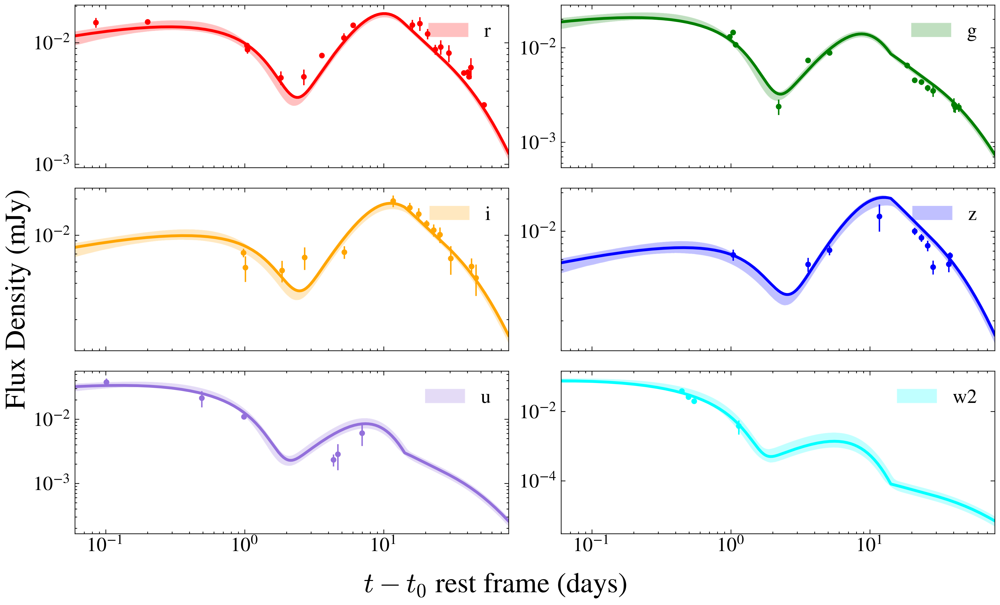
图注：Multi-band optical modelling of EP250304A/SN\,2025fhm using a combined shocked-cocoon and Arnett model implemented in \(\texttt{Redback}.\) Solid lines show the maximum-likelihood model, while shaded regions indicate the 90\% credible intervals from the posterior distribution. Light curves are corrected for Galactic extinction and shown in the rest frame.
对应解读：“建议重点查看的图表”第4项 Redback 模型拟合图，以及“模型拟合”段落关于 shocked cocoon + Arnett 多波段拟合的讨论。
入选理由：这是检验论文核心物理结论的最关键图：直接展示多波段光学数据、shocked-cocoon 与 Arnett 组合模型、最大似然曲线以及90%可信区间，可判断早期蓝色/热成分是否确实需要额外茧层辐射，而不仅是普通放射性超新星模型。
来源与置信度：\(arxiv_source\)；high；\(arxiv_source\) / aanda.tex:figure[5]
Fig02
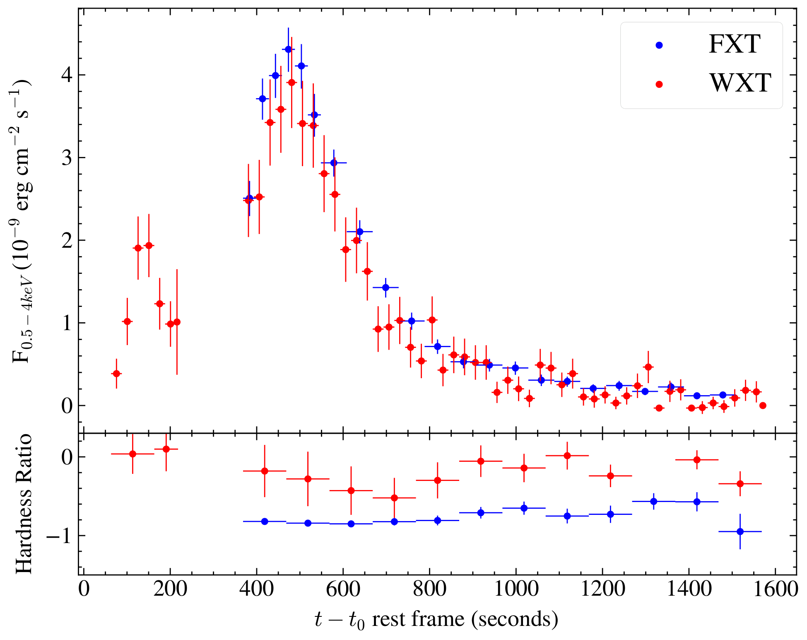
图注：\(\textit{EP}-WXT\) and \(\textit{EP}-FXT\) prompt emission light curve (0.5--4~keV) and hardness ratio evolution plot. We performed time binning with a 60-second interval.
对应解读：“建议重点查看的图表”第1项 EP/X 射线发现光变，以及“关键图表逐图导读”图1关于软 X 射线信号、持续时间和硬度演化的讨论。
入选理由：该图给出 EP-WXT/FXT 在0.5–4 keV的prompt光变和硬度比演化，是判断 EP250304a 是否为软 X 射线低光度瞬变、以及无伽马触发背景下是否仍可能对应 llGRB-like 外流的基础证据。
来源与置信度：\(arxiv_source\)；high；\(arxiv_source\) / aanda.tex:figure[2]
Fig01
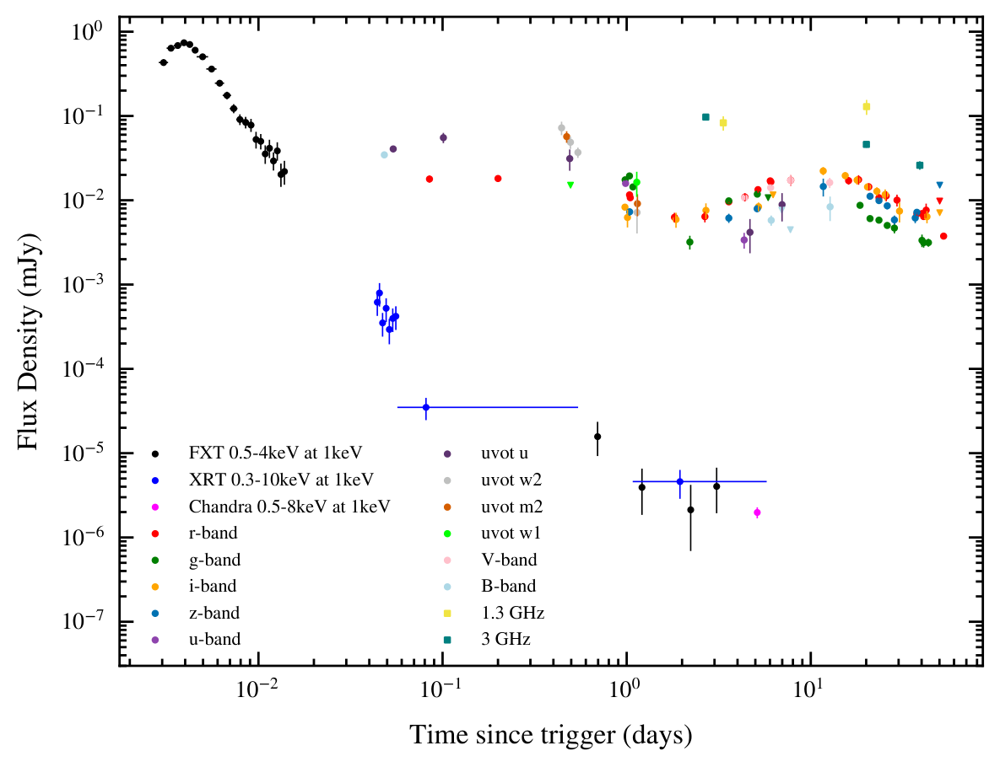
图注：Multi-band light curve of EP250304a/SN\,2025fhm produced from all data obtained throughout this observational campaign. All data are corrected for Galactic extinction and are in the rest frame.
对应解读：“建议重点查看的图表”第2项多波段光变曲线，以及“关键图表逐图导读”图2关于早期蓝色 excess、主峰宽度和滤光片峰值时序的讨论。
入选理由：这是未建模的观测光变总览，所有数据已做银河系消光校正并置于静止系。它能让读者先独立检查早期光学/紫外行为和主峰形态，再与 Fig05 的物理模型拟合进行对照。
来源与置信度：\(arxiv_source\)；high；\(arxiv_source\) / aanda.tex:figure[1]
Fig06
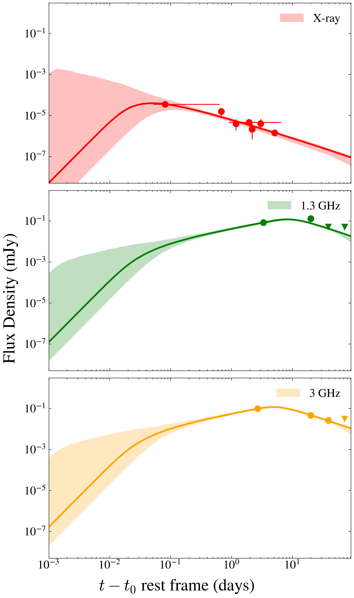
图注：Multi-band modelling of the 1 keV X-ray and radio emission of EP250304a/SN\,2025fhm using \(\texttt{Redback}.\) The solid lines represent the maximum-likelihood fits, and the shaded regions represent the posterior regions for all model fits. Time is in the rest frame.
对应解读：“模型拟合”段落中关于 X 射线、射电后续观测和相对论外流约束的讨论。
入选理由：该图展示1 keV X射线和射电发射的 Redback 多波段建模，包含最大似然拟合和后验区域；它比单纯光学图更直接支撑论文关于多波段相对论外流证据的论点，并可检查晚期 X 射线/射电是否限制喷流能量。
来源与置信度：\(arxiv_source\)；high；\(arxiv_source\) / aanda.tex:figure[6]
Fig08
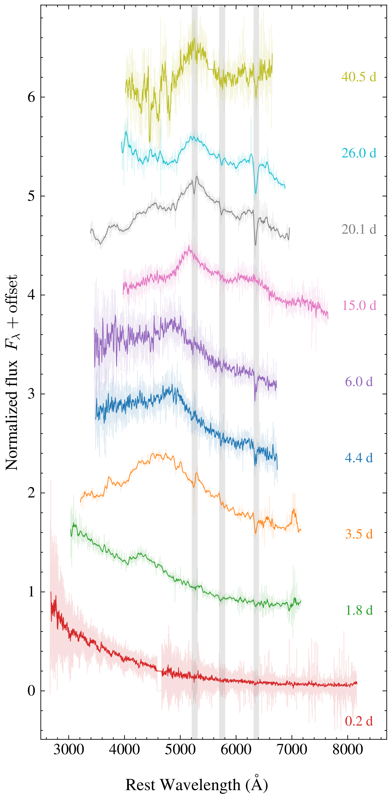
图注：Spectroscopic observations of EP250304a/SN\,2025fhm from various telescopes. All coloured shaded regions are the original spectra, and all grey shaded regions are known telluric regions. All spectra are in the rest frame, corrected for Milky Way extinction, normalised over a common wavelength region, and are vertically offset for clarity. In some cases, host emission lines have been clipped and spectra have been smoothed for display purposes. The spectrum at 40.5 days is a combination of two Gemini spectra taken at 40 and 41 days rest frame.
对应解读：“建议重点查看的图表”第3项光谱序列，以及“关键图表逐图导读”图3关于 Ic-BL 宽吸收特征和光谱随时间演化的讨论。
入选理由：该图给出 EP250304a/SN 2025fhm 的多历元静止系光谱序列，是确认宽线 Ic 型超新星分类、观察宽吸收特征演化和早期蓝端连续谱的主要依据。
来源与置信度：\(arxiv_source\)；high；\(arxiv_source\) / aanda.tex:figure[8]
Fig12
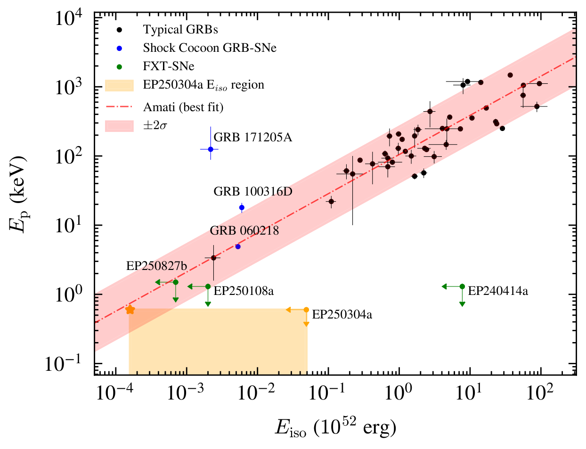
图注：Comparison of "typical" GRB events with FXT-SN and shocked cocoon SN events in the context of the Amati relation. The star represents the $E_{\text{iso}}$ and $E_{\text{p}}$ values for EP250304a/SN\,2025fhm calculated from the \(\textit{EP}\) data.
对应解读：“建议重点查看的图表”第7项高能能量或光度分布图，以及“关键图表逐图导读”图6关于与典型 GRB、FXT-SN 和 shocked cocoon SN 对比的讨论。
入选理由：该图把 EP250304a/SN 2025fhm 放在 Amati 关系的 \(E_iso\)–\(E_p\) 平面上，与典型 GRB、FXT-SN 和 shocked-cocoon SN 事件比较，直接检验其是否处于低光度、软谱、非典型 GRB-SN 区域。
来源与置信度：\(arxiv_source\)；high；\(arxiv_source\) / aanda.tex:figure[12]
强相关工作
这篇工作直接连接低光度 GRB-SN 研究传统。GRB 060218/SN 2006aj 和 GRB 100316D/SN 2010bh 是长持续、软谱、低光度 GRB-SN 的代表；GRB 171205A/SN 2017iuk 则常被用于讨论早期蓝色成分、喷流茧层和发动机驱动超新星的关系。EP250304a/SN 2025fhm 的新意在于，它由 EP 软 X 射线发现且没有伽马射线触发，因此更接近未来巡天可能大量发现的“GRB-like 但非 classical GRB trigger”样本。
理论上，它与喷流穿越恒星、茧层形成、激波突破和低光度 GRB 起源的工作相关。相反或有张力的解释包括：早期 excess 可能来自普通剥离包层超新星的 shock cooling，或来自星周物质相互作用，而不一定要求成功相对论喷流。因此检索时建议使用关键词 “low-luminosity GRB supernova”, “shock breakout”, “cocoon emission GRB-SN”, “engine-driven supernova”, “Einstein Probe X-ray transient”, “SN 2006aj”, “SN 2010bh”, “SN 2017iuk”。
如果要追溯基础文献，应查找 GRB-SN 关联、Arnett 放射性扩散模型、喷流茧层模拟、以及 llGRB 的发生率和选择效应研究。对持相反观点或替代解释的文献，可检索 “shock cooling stripped-envelope supernova”, “circumstellar interaction Ic-BL supernova”, “failed jet low luminosity GRB” 等关键词，重点比较它们对早期温度、半径演化和射电/X 射线后续辐射的预言。
相似工作：
- https://arxiv.org/abs/astro-ph/0603279
- https://arxiv.org/abs/1004.3335
- https://arxiv.org/abs/1710.05851
基础理论 / 方法工作：
- https://ui.adsabs.harvard.edu/abs/1982ApJ...253..785A/abstract
- https://arxiv.org/abs/astro-ph/9806175
- https://arxiv.org/abs/astro-ph/0603537
相反观点 / 张力线索：
- https://arxiv.org/abs/1109.0997
- https://arxiv.org/abs/1206.2353
4. Simulation of proton-induced activation for low-Earth orbit high energy astrophysics missions
- 来源：arXiv / astro-ph.HE
- 链接：https://arxiv.org/abs/2606.05807v1
- 作者：Riccardo Campana
- 评分：novelty 8/10，importance 8/10，relevance 9/10，final 9.35/10
- 推荐理由：提出并验证低轨高能天文任务质子诱发活化背景的高效三步模拟框架，应用到HERMES和eXTP；对未来X/伽马空间仪器背景预算和设计优化很有用。
中文题目：面向低地球轨道高能天体物理任务的质子诱发活化背景快速模拟
做了什么：这篇论文解决的是低地球轨道高能探测器中一个很实际、也很难靠蛮力模拟的问题：航天器穿越南大西洋异常区时被俘获质子照射，材料中产生放射性核素，随后衰变形成延迟的仪器本底。作者实现并验证了一套三步算法，把“质子产生核素”“核素随时间衰变演化”“衰变辐射在探测器中的响应”拆开计算，而不是直接用蒙特卡罗从入射质子一路模拟到大量衰变事件。该方法以 Geant4 产生不同质子能量下的放射性核素产额，用 Bateman 方程处理任意照射历史下的活度，再预先模拟每种核素衰变对探测器的能谱贡献。论文用直接模拟作交叉验证，并应用到 HERMES 与 eXTP 的 LAD/WFM 等代表性构型，展示了它在轨道、材料、占空比和本底预算快速扫描中的价值。
为什么重要：活化本底是低轨硬 X 射线、软伽马和宽能段高能天文任务的关键限制之一，尤其影响弱源探测、瞬变源触发阈值、谱线搜索和长期监测稳定性。直接蒙特卡罗的低产额问题会让设计阶段很难系统比较轨道、屏蔽、材料和观测策略；这篇工作重要在于把本底问题从“昂贵的一次性全模拟”变成可复用、可快速重建的工程—科学工具。
理论 / 观测 / 仪器方法价值：对仪器和方法的价值在于：它提供了一个模块化框架，既可用粒子输运模拟得到材料中同位素产额，又可把实际轨道辐照历史代入线性衰变链，再把每种核素的响应模板叠加成最终本底。对观测的价值在于：它能预测不同时间尺度的延迟本底、SAA 后恢复时间、能谱结构和任务占空比损失。对理论建模的价值则是把核反应产额、轨道粒子环境和探测器响应这三个通常分散处理的环节统一到一个可检验的统计框架中。
为什么应该关注：如果你关心高能空间望远镜的灵敏度曲线、触发效率、系统误差预算或未来任务设计，这篇文章值得看。很多高能天文结果最后受限的不是光子统计，而是仪器本底的时间变化和不可完全建模；活化本底尤其容易在穿越 SAA 后伪装成缓慢变化的源通量或谱形变化。该方法让研究者可以更早、更快地判断某种轨道、材料或屏蔽方案是否会把科学目标推到系统误差主导的区域。
展开详细解读：文章讲解、背景、理论、重点章节、图表与相关工作
文章详细讲解
科学问题：低地球轨道高能天体物理任务会反复穿越南大西洋异常区，那里俘获质子通量高，能在探测器、屏蔽体、结构件和电子学材料中通过核反应产生不稳定同位素。这些同位素在任务离开高辐射区后继续衰变，释放伽马线、电子、正电子或 X 射线，形成延迟仪器本底。难点在于活化是小概率事件，而衰变本底又需要很高统计精度；如果直接从大量质子入射开始做全链条蒙特卡罗，计算量会随材料复杂度、轨道历史和要求的能谱精度快速失控。
作者怎么做：论文实现了一种三步解耦算法。第一步用 Geant4 对单能质子照射进行模拟，识别不同材料与几何位置中产生的所有放射性核素，并记录相应产额或产生概率。第二步不再逐个模拟每个质子和每次衰变，而是把这些产额作为源项，数值求解线性化衰变链的 Bateman 方程，从而得到任意辐照历史下每种核素的数目和活度。第三步为每种核素的衰变发射预先模拟探测器响应，得到能量沉积模板；对实际轨道时间序列，只需按各时刻活度加权叠加模板，就能重建活化本底谱和计数率。
关键结果：作者将该快速算法与直接蒙特卡罗模拟作比较，显示在跨越许多数量级的活度和时间尺度上可以保持很好一致性。这一点很关键，因为活化背景既有短寿命核素主导的快速衰减分量，也有长寿命核素累积形成的准稳态分量。论文还把框架应用到 HERMES 与 eXTP 的 LAD/WFM 等案例，覆盖不同探测器技术、质量分布和轨道条件，说明该方法不是只针对某个单一仪器调参，而是适合设计阶段的参数扫描。
局限和下一步：这类方法的精度最终受限于三类输入：低能到中能质子环境模型、Geant4 中核反应截面与同位素产生模型、以及真实仪器材料和几何模型的完整性。若某些材料杂质、电子学部件或屏蔽层未建模，活化谱线和连续谱都可能偏差。下一步最有价值的是把在轨本底数据、地面束流实验和不同核数据库交叉校准纳入同一框架，并给出活化本底预测的不确定度传播，而不仅是中心值预测。
背景知识
研究对象是低地球轨道高能天文卫星的仪器本底。对 X 射线和伽马射线探测器来说，计数中相当一部分并非来自天体光子，而是宇宙线、地球反照辐射、俘获带粒子以及它们与航天器材料相互作用后的次级粒子。活化本底属于延迟本底：质子照射结束后，放射性核素仍会继续衰变，因此本底与当前粒子通量不只存在瞬时对应关系，还带有轨道历史记忆。
南大西洋异常区是这个问题的核心场景。由于地磁场偏心和非偶极结构，内辐射带在南大西洋区域下探到较低高度，低轨卫星会周期性遇到高俘获质子通量。许多高能任务在穿越该区域时会关闭科学观测或降低高压，但这并不能消除活化，因为材料已经被照射，离开该区域后仍有延迟衰变。本底恢复时间取决于产生核素的半衰期分布，从分钟到天甚至更长都有可能。
历史上，活化本底一直是硬 X 射线和伽马任务的难题。早期任务依赖经验本底模型和在轨筛选；后来随着 Geant4 等粒子输运工具成熟，研究者可以模拟更复杂的材料和几何。不过直接模拟仍然昂贵：稀有核素产生概率低，若要获得平滑衰变谱，需要生成巨大数量的初级质子和衰变事件。设计阶段往往需要比较许多轨道、屏蔽厚度、材料组合和运行策略，单次全模拟太慢。
现在值得重新看的原因有三点。第一，新一代宽视场和大面积高能探测器对系统本底要求更严格，统计误差下降后，活化模型误差更突出。第二，任务轨道和小卫星星座方案更多样，不能简单套用旧任务经验。第三，计算框架和核数据库已有进步，使得把同位素产额、衰变链和探测器响应解耦成为现实。
该领域常见误区包括：把 SAA 当作只影响穿越期间的数据问题，而忽略穿越后的延迟本底；把屏蔽简单理解为越厚越好，却忽略屏蔽材料自身也会活化并产生次级辐射；把本底视为平稳常数，而不考虑轨道相位、太阳活动和累积剂量历史；以及只关心总计数率，而忽略活化核素可能产生窄谱线或能段相关结构，从而影响谱学分析。
基础理论 / 方法脉络
基本物理图像是：入射质子与航天器材料中的原子核发生非弹性核反应，产生碎裂核、俘获产物或其他放射性核素。这些核素以各自衰变常数衰变，发射光子、电子、正电子、中子或级联辐射。探测器记录的不是核素本身，而是这些衰变产物经过几何传播、吸收、散射和能量沉积后的计数谱。因此活化本底天然分成三个层次：核素产生、放射性演化、探测器响应。
论文的核心假设是线性叠加成立。也就是说，每个入射质子能量、材料体元和核素种类的产生率可以预先计算；每种核素的衰变演化服从线性常微分方程；每次衰变在探测器中形成的响应模板与其他核素无关。只要探测器响应不被高计数率非线性效应显著改变，最终本底能谱就可以写成不同核素响应模板按活度加权的和。
关键量包括入射质子微分通量、材料中的同位素产生产额、核素数目、活度、半衰期、分支比、探测器响应矩阵和能道计数率。对轨道任务来说，质子通量本身是时间函数，尤其在 SAA 进出边界附近快速变化；而核素数目的演化则对过去照射历史作指数记忆积分。短寿命核素主要反映最近几次穿越，长寿命核素则反映多圈乃至长期平均照射。
观测和仪器分析逻辑是将预测本底与实际在轨本底诊断量比较，例如 SAA 后计数率衰减曲线、不同能段的恢复时间、谱线强度、地磁坐标相关性和长时间趋势。若模型能同时复现时间结构和能谱结构，就说明核素产额与响应模板较可信；若只能拟合总计数率而不能拟合谱线或能段比值，通常意味着材料模型、核反应库或粒子环境存在问题。
常见退化和系统误差包括：质子环境模型与材料质量分布之间的退化，因为二者都会改变总活化强度；屏蔽厚度与二次粒子产生之间的退化，因为屏蔽既降低部分入射通量，也可能增加某些次级活化；核数据库截面误差与探测器能量响应误差之间的退化，因为二者都可改变谱线强度和连续谱形状。实际应用中不能只给单一最佳本底曲线，还应评估不同辐射模型、核物理模型和几何细节对结果的影响。
公式与推导
第一步从入射质子通量到核素产生率。设质子动能为 \(E_p\)，时间为 \(t\)，某材料体元中靶核种类为 \(m\)，产生放射性核素 \(i\) 的有效截面为 \(\sigma_{m\rightarrow i}(E_p)\)，靶核数为 \(N_m\)，各向与几何效应用因子 \(G(E_p,t)\) 表示，则产生率可写成
这里 \(\Phi_p(E_p,t)\) 是质子微分通量。实际 Geant4 单能照射给出的常是每个初级质子产生核素 \(i\) 的产额 \(Y_i(E_p)\)，它把几何、输运和局部相互作用都吸收到模板中。
用离散单能质子网格表示时，任意轨道照射历史下的源项可近似为
其中 \(R_p(E_k,t)\) 是第 \(k\) 个能量 bin 的入射质子率，\(Y_i(E_k)\) 是该能量下每个质子产生核素 \(i\) 的平均数。这就是“生产模板”和“轨道历史”解耦的基础。
核素数目 \(N_i(t)\) 的演化由产生、衰变和母核喂给共同决定。对线性衰变链，可写为
其中 \(\lambda_i=\ln 2/T_{1/2,i}\) 是衰变常数，\(T_{1/2,i}\) 是半衰期，\(b_{j\rightarrow i}\) 是母核 \(j\) 衰变到子核 \(i\) 的分支比。该式说明当前活度不仅取决于当前照射，还取决于整条衰变链。
若忽略母子链耦合并考虑时间间隔 \([t_0,t]\) 内源项 \(Q_i(t')\)，解为
这个卷积形式直观表明：半衰期短的核素只记住最近照射，半衰期长的核素对长期平均照射敏感。
活度是单位时间衰变数，定义为
在稳恒照射 \(Q_i(t)=Q_i\) 且忽略母核时，有
因此长时间照射后的饱和活度趋近 \(Q_i\)，而离开 SAA 后活度按 \(e^{-\lambda_i\Delta t}\) 衰减。
探测器记录的能道 \(c\) 计数率来自所有核素活度乘以响应模板。若 \(R_{ic}\) 表示核素 \(i\) 每次衰变在能道 \(c\) 产生的期望计数数，则
这里 \(R_{ic}\) 由衰变发射谱、分支比、几何传播和探测器能量沉积共同决定，通常通过蒙特卡罗预先估计。
若需要得到某时间段 \([t_a,t_b]\) 的预测计数，可积分为
其中 \(S_c(t)\) 是天体源或其他非活化本底贡献，\(B_c(t)\) 是活化分量。对纯本底验证，常令 \(S_c(t)=0\) 或用独立源模型固定。
计数数据通常服从泊松统计。给定观测计数 \(n_c\) 与预测 \(\mu_c\)，对数似然可写为
该式可用于比较不同轨道辐射模型、材料模型或核反应模型，也可在高计数近似下转化为残差诊断。
常用的标准化残差为
其中 \(\sigma_{\mathrm{sys},c}\) 表示能道相关系统误差。若 \(r_c\) 在某些谱线能量附近系统偏离，通常指向特定核素产额或探测器响应问题；若宽能段整体偏离，则更可能是质子通量归一化、材料质量或屏蔽建模误差。
最后，灵敏度影响可用源显著性近似理解。若源在某能段给出计数 \(S\)，本底为 \(B\)，观测时间为 \(T\)，则背景主导时
活化模型降低的是 \(B\) 的不确定性和 \(\sigma_{\mathrm{sys}}\)，因此不仅提高名义灵敏度，也减少长时间积分时系统误差不再随 \(T^{-1/2}\) 下降的问题。
模型拟合 / 应用方法
这篇文章的“拟合”更接近仪器本底模型的构建与验证，而不是天体物理参数拟合。核心可调或可比较的量包括质子环境模型、轨道辐照历史、材料组成与质量分布、Geant4 物理列表、同位素产生产额、衰变数据库和探测器响应模板。实际应用中，模型输出是随时间和能道变化的活化本底计数率，验证对象可以是直接蒙特卡罗结果，也可以是在轨关源或暗场数据。
统计上，若与直接模拟比较，通常可看每个核素的活度随时间曲线、总计数率、分能段计数率和能谱残差。由于直接模拟本身也有蒙特卡罗噪声，残差不应简单理解为真实误差；需要同时考虑模板统计误差、核素产额统计误差以及衰变响应模板中的有限事件数。论文展示的重点是快速方法在许多数量级范围内与直接模拟一致，说明解耦算法没有引入显著偏差。
若用于真实数据拟合，似然通常应采用泊松形式或 Cash 统计，而不是只做高斯 \(\chi^2\)。可把活化模板归一化、某些核素组的强度、质子通量归一化或系统误差项作为 nuisance parameters，并对它们设置来自辐射模型、束流实验或材料称重的先验。这样既能避免把天体源变光误认为本底变化，也能量化活化模型对源谱参数的传播误差。
主要退化关系包括：质子通量归一化与总材料质量的退化；短寿命核素强度与 SAA 边界定义、关机时间和数据筛选窗口的退化；长寿命核素强度与长期轨道平均通量及太阳活动周期的退化；以及相近能量谱线核素之间的退化。解决这些退化需要联合使用时间信息和谱信息，例如用 SAA 后不同等待时间的能谱切片来区分半衰期不同的核素。
模型可能失败的场景也很明确。若真实仪器存在未建模材料、电子学局部热点、复杂死时间效应或粒子触发阈值变化，响应模板会偏离。若质子环境模型在具体轨道高度、倾角或太阳活动阶段误差很大，源项 \(Q_i(t)\) 会整体偏差。若核反应截面对某些材料缺少实验约束，特定谱线可能无法复现。因此实际任务中应把该框架作为可校准的预测系统，而不是一次性确定的绝对本底真值。
重点章节 / 结果段落怎么读
数据/物理输入部分应重点看作者如何定义低轨质子环境、单能质子照射网格、材料几何和 Geant4 物理过程。这里决定了同位素产额模板的可信度。读者应特别关注能量范围是否覆盖 SAA 俘获质子的主要贡献，以及材料模型是否包含探测器、屏蔽、支撑结构和邻近电子学。
方法部分是全文核心，应按三步算法来读：第一，同位素产生的识别和产额存储；第二，Bateman 方程的线性衰变链求解；第三，每种核素衰变的探测器响应模拟。关键是理解作者如何避免直接模拟中“少数核素产生事件”和“大量衰变事件”之间的统计效率矛盾。
验证部分应看快速算法与直接模拟的逐项比较。不要只看最终总本底是否接近，还要看活度随时间的多数量级衰减、不同核素或不同半衰期分量是否一致，以及能谱形状是否复现。若只有总计数率一致而谱线残差明显，说明方法在科学分析中的可用性会受限。
案例研究部分展示 HERMES 与 eXTP/LAD、WFM 等不同探测器和轨道构型下的应用。读者应把它看作方法泛化能力的测试：不同材料、不同探测介质、不同视场和不同本底要求下，活化贡献如何变化，以及该框架如何支持设计优化。
讨论和结论部分应关注作者对计算成本、准确性和适用范围的表述。尤其要看他们是否讨论核反应模型、轨道辐射模型和真实材料不确定度，因为这些往往比数值求解误差更支配最终本底预测。
建议重点查看的图表
-
三步算法流程图：应检查质子产额库、Bateman 演化和衰变响应模板之间的数据流，确认哪些部分可预计算、哪些部分随轨道历史变化。
-
单能质子产生的核素产额图或表：应看不同质子能量下主要核素的产额峰值、阈值行为和材料依赖，这决定哪些能段的俘获质子最危险。
-
与直接蒙特卡罗比较的活度时间曲线：应看纵轴是否跨多数量级，短寿命和长寿命核素是否都吻合，SAA 后衰减尾部是否有系统偏差。
-
预测与直接模拟的能谱比较：应看谱线位置、连续谱形状和低能/高能端残差，而不只看积分计数率。
-
HERMES 案例的本底时间演化或能谱：应检查小型探测器和具体轨道下活化本底相对其他本底的占比，以及穿越高辐射区后的恢复时间。
-
eXTP/LAD 与 WFM 案例比较：应看不同探测器技术、面积和几何对活化本底的影响，特别是大面积硅探测器或宽视场构型中活化是否成为主导误差。
-
计算效率或加速比诊断：应检查快速方法相对直接模拟节省多少计算量，以及这种节省是否以模板预计算成本为代价。
-
稳健性或残差图：若有，应看残差是否随机分布，还是集中在特定时间段、能段或核素谱线附近，这能指示模型误差来源。
关键图表逐图导读
图 1：若论文给出算法示意图，横向通常对应三个模块：质子输运与同位素产生、衰变链时间演化、探测器响应合成。读图时要看箭头代表的是事件级模拟还是模板级数据传递。关键结论应是：昂贵的 Geant4 模拟只需对单能照射和单核素衰变分别完成，任意轨道历史则通过数值叠加快速生成。陷阱是不要把该流程误解为忽略几何；几何信息已经进入产额和响应模板。
图 2：若展示同位素产额随质子能量变化，横轴一般是质子能量，纵轴是每个入射质子产生某核素的产额或概率，不同曲线代表不同核素或材料。应重点看反应阈值、产额峰和高能尾部。主要结论是哪些质子能段对活化贡献最大。读图陷阱是产额高不等于最终本底一定高，还要乘以轨道质子通量、半衰期和探测器响应。
图 3：若展示 Bateman 解与直接模拟的活度比较，横轴通常是照射后时间或轨道时间，纵轴是活度，常用对数坐标。数据点可能是直接蒙特卡罗，曲线是三步算法。应看短时间快速衰减段和长时间尾部是否都吻合。陷阱是对数坐标下小的垂直偏移可能意味着可观的相对误差，尤其在谱线搜索中不能忽略。
图 4：若展示最终能谱比较，横轴是沉积能量或能道，纵轴是计数率或计数谱，不同线对应快速算法、直接模拟或不同本底分量。应检查谱线峰位、峰宽、康普顿连续谱和低能阈值附近残差。主要结论是响应模板叠加能否复现完整谱形。读图陷阱是积分计数率吻合可能掩盖局部能段系统偏差。
图 5：HERMES 案例图可能显示轨道相位或时间序列上的活化本底。横轴可能是时间、轨道圈数或 SAA 后时间，纵轴是计数率。应看每次 SAA 后是否出现可预测的衰减，以及是否存在多圈累积的基线抬升。陷阱是把所有时间变化都归因于短寿命核素；长寿命核素会改变长期底座。
图 6：eXTP/LAD 与 WFM 案例图若比较不同子仪器，横轴可能是能量或时间，纵轴是本底率，不同曲线代表 LAD、WFM 或不同轨道方案。应看大面积、宽视场、不同屏蔽和探测材料如何改变活化贡献。主要结论是该方法可用于任务级 trade-off。陷阱是不同仪器的本底率归一化方式可能不同，例如按总探测器、单位面积或单位能宽给出，比较前要确认单位。
论文原图 / 可嵌入图片
Fig05
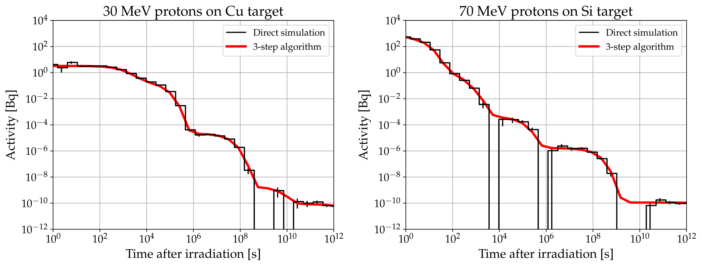
图注：Activity after an instantaneous irradiation with a flux of 10$^6$ protons cm$^{-2}$ on a 1~cm thick target of natural copper (left panel, with 30~MeV protons) and silicon (right panel, 70~MeV protons). The black histogram is a direct simulation, while the red curve is the numerical prediction from the 3-step algorithm. Missing data at long times/low activity levels is due to the low statistics of the direct simulation.
对应解读：“建议重点查看的图表”第3项；“关键图表逐图导读”图3；模型验证段落中关于 Bateman 解与直接蒙特卡罗活度时间曲线的比较。
入选理由：这张图直接检验三步算法相对直接模拟的核心准确性：黑色直方图为直接模拟、红色曲线为数值预测，横跨短寿命快速衰减和长时间低活度尾部，是支撑“跨许多数量级保持一致”的最关键证据。
来源与置信度：\(arxiv_source\)；high；\(arxiv_source\) / main.tex:figure[5]
Fig10
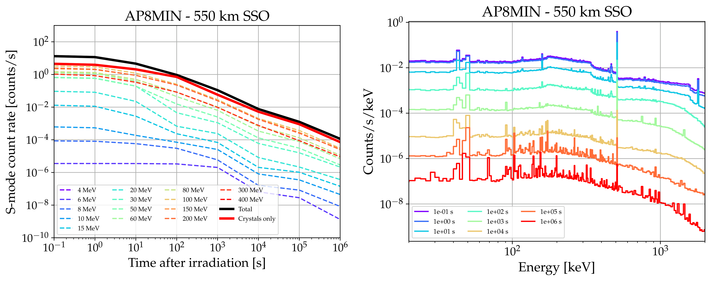
图注：\(\emph{Left panel}\): Expected count rate in HERMES (S-mode, 20--2000~keV band) as a function of time, after an instantaneous irradiation with the orbit-averaged trapped proton spectrum predicted by the AP8MIN model for a 550~km altitude SSO. Besides the contribution of each input energy bin to the count rate, the plot shows the total count rate and the individual contribution of the GAGG:Ce scintillator crystals. \(\emph{Right panel}\): S-mode activation induced spectra spanning 0.1~s to 1~Ms after irradiation. Note the different lines present at different times. Spectra are not convoluted with the intrinsic detector spectral resolution (which is $\sim$5\% at 662 keV, see \cite{dilillo24}).
对应解读：“建议重点查看的图表”第4、5项；“关键图表逐图导读”图4和图5；HERMES 案例的本底时间演化与能谱诊断。
入选理由：同时给出 HERMES 在瞬时辐照后的计数率随时间演化和不同延迟时间的活化能谱，可检查不同质子能段贡献、GAGG:Ce 晶体贡献、谱线随时间变化等，最能支撑日报中关于时间信息与谱信息联合诊断的解读。
来源与置信度：\(arxiv_source\)；high；\(arxiv_source\) / main.tex:figure[10]
Fig11
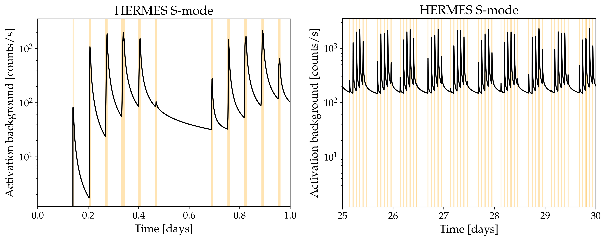
图注：\(\emph{Left panel}\): HERMES S-mode (20--2000~keV) activation-induced background rate as a function of the time, for the first day in orbit. \(\emph{Right panel}\): Activation-induced background rate after 25 to 30 days in orbit. The vertical shaded bands mark the SAA crossing periods. The curves shown are computed using a 550~km altitude SSO and the AP8MIN model.
对应解读：“建议重点查看的图表”第5项；“关键图表逐图导读”图5；关于 SAA 穿越后活化本底恢复和长期累积的讨论。
入选理由：这张图把活化本底放到真实轨道时间序列中展示，并标出 SAA 穿越时段，能够直接查看每次高辐射区通过后的衰减、首日行为以及 25–30 天后的长期底座抬升，是 HERMES 任务级影响最直观的图。
来源与置信度：\(arxiv_source\)；high；\(arxiv_source\) / main.tex:figure[11]
Fig03
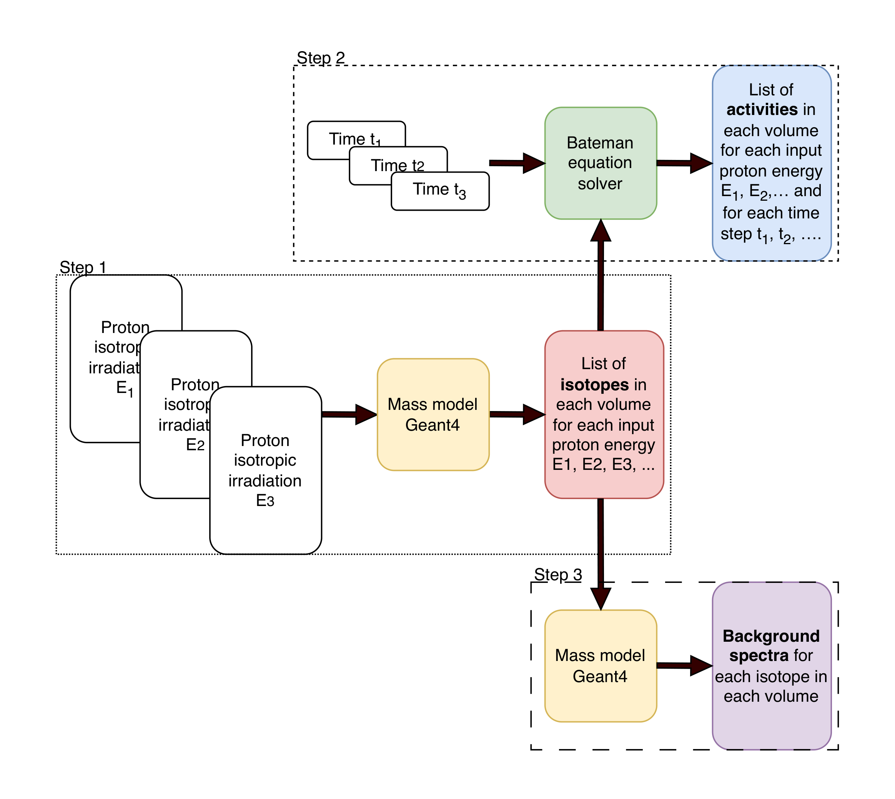
图注：Flow chart of the three-steps algorithm for activation simulations.
对应解读：“建议重点查看的图表”第1项；“关键图表逐图导读”图1；三步算法流程和数据流说明。
入选理由：它是论文方法论的总览图，明确质子输运与同位素产生、Bateman 演化、衰变响应模板三部分如何解耦，适合支撑日报对哪些步骤可预计算、哪些步骤随轨道历史变化的解释。
来源与置信度：\(arxiv_source\)；high；\(arxiv_source\) / main.tex:figure[3]
Fig09
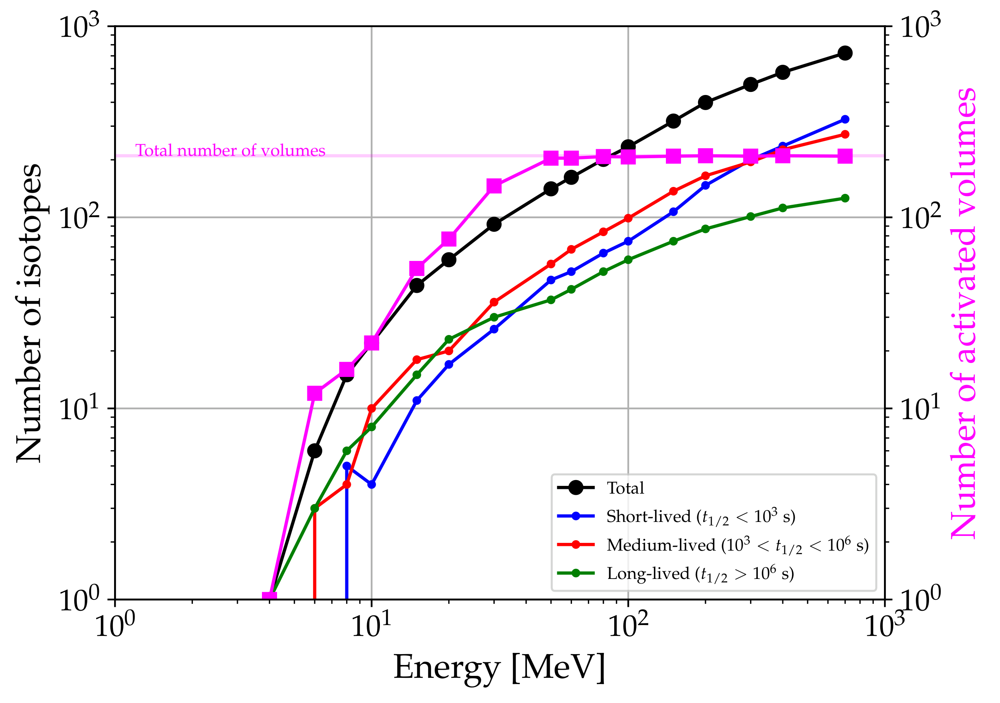
图注：Number of unstable isotopes created upon an irradiation of the HERMES mass model with different proton energies (left vertical axis) and number of volumes in the mass model which have at least one generated radioisotope (right vertical axis). The total number of different volumes in the GDML HERMES mass model employed is also shown.
对应解读：“建议重点查看的图表”第2项；关于单能质子产生核素、能量依赖和 HERMES 质量模型复杂度的讨论。
入选理由：虽然不是逐个核素产额曲线，但它展示了不同质子能量照射 HERMES 质量模型时产生的不稳定同位素数量以及涉及的几何体数量，能说明哪些能段会激活更多材料和核素，是理解活化源项复杂度的重要证据。
来源与置信度：\(arxiv_source\)；high；\(arxiv_source\) / main.tex:figure[9]
Fig08
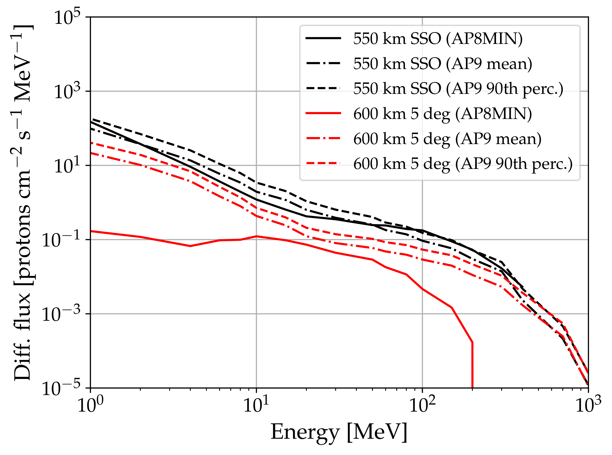
图注：Orbit-averaged proton differential spectrum for the two orbital scenarios (LEO at 600 km altitude, 5$^\circ$ inclination or 550 km altitude Sun-synchronous orbit) for the AP8MIN and AP9 mean and 90th percentile models.
对应解读：“建议重点查看的图表”第5项；模型构建段落中关于轨道辐照历史、质子环境模型 AP8/AP9 及轨道方案差异的讨论。
入选理由：这张图展示不同轨道和辐射模型下的轨道平均俘获质子微分谱，是后续活化源项的输入基础，有助于解释为什么轨道高度、倾角和质子环境模型会显著改变 HERMES 活化本底预测。
来源与置信度：\(arxiv_source\)；high；\(arxiv_source\) / main.tex:figure[8]
强相关工作
这项工作与高能空间任务的 Geant4 本底模拟传统直接相连，包括 INTEGRAL、Swift/BAT、Fermi/GBM、NuSTAR、HXMT、SVOM、eXTP 等任务中对粒子本底、地球反照和活化本底的建模。相似工作的关键词可以检索 “activation background Geant4 low Earth orbit high energy astrophysics”, “South Atlantic Anomaly activation background”, “Bateman equations spacecraft activation”, “eXTP background simulation”, “HERMES background simulation”。
基础理论方面，它依赖两个成熟框架：一是核反应和粒子输运蒙特卡罗，二是放射性衰变链的 Bateman 方程。与直接蒙特卡罗相比，这篇工作的特点不是提出新的核物理，而是把稀有核素产生和大量衰变响应从计算流程上解耦，从而把工程可用性大幅提高。可检索 “Geant4 radioactive decay module”, “cosmogenic activation detector background”, “Bateman equation activation analysis”。
潜在张力主要来自输入物理的不确定度，而不是算法本身。例如不同辐射带模型对 SAA 质子通量的预测可能不一致，Geant4 不同 hadronic physics list 对碎裂产物产额也可能差异明显；在轨实测本底有时会显示比预期更强的谱线或更慢恢复尾部。这些并不是对三步算法的否定，而是提醒读者：快速框架应配合不确定度传播和在轨校准使用。检索关键词包括 “AP8 AP9 trapped proton model uncertainty”, “Geant4 isotope production cross section validation”, “in-orbit activation background discrepancy”。
相似工作：
- https://arxiv.org/abs/2606.05807
- https://www.cosmos.esa.int/web/geant4
基础理论 / 方法工作：
- https://geant4.web.cern.ch/
- https://www.nndc.bnl.gov/nudat3/
- https://www.spenvis.oma.be/
相反观点 / 张力线索：
（未提供）
5. Modeling Gamma-Ray Burst Spectra with Convolutional Neural Networks: Fast-Cooling Synchrotron Emission in a Decaying Magnetic Field
- 来源：arXiv / astro-ph.HE
- 链接：https://arxiv.org/abs/2606.05910v1
- 作者：Jia-Ming Chen, Ke-Rui Zhu, Shan Chang, Zhao-Yang Peng, Yong-Gang Zheng, Li Zhang
- 评分：novelty 8/10，importance 7/10，relevance 9/10，final 9.00/10
- 推荐理由：为GRB prompt快冷同步辐射衰减磁场模型构建CNN谱模拟器并用于Fermi/GBM时分谱贝叶斯拟合，方法可扩展到大样本GRB物理模型比较。
中文题目：用卷积神经网络快速拟合伽马暴谱：衰减磁场中的快冷同步辐射
做了什么：这篇文章针对伽马暴提示辐射谱的一个老问题：标准快冷同步辐射常给出过软的低能谱，而在喷流向外传播时让磁场随半径衰减，可以硬化电子冷却后的谱形，但直接数值计算太慢，难以做大样本贝叶斯拟合。作者训练了一个卷积神经网络谱模拟器，用合成谱学习“衰减磁场快冷同步辐射”模型的参数到光子谱的映射，把单次谱计算压到毫秒量级，并把它嵌入贝叶斯谱分析。对 Fermi/GBM 观测到的 GRB 231020A 做时间分辨拟合后，多数时间段中该模型相对于标准快冷同步辐射给出更好的拟合和更小的贝叶斯信息准则，说明衰减磁场版本至少对这个暴是一个更有竞争力的物理解释。
为什么重要：伽马暴提示辐射的物理机制长期在经验 Band 谱、同步辐射、准热成分和耗散光球模型之间拉扯。真正有物理含义的模型往往要解电子冷却和辐射积分，计算成本高，导致观测上仍大量依赖经验函数。这篇工作的重点不是只给一个暴换个模型，而是把一个较慢的物理谱模型压缩成可在贝叶斯推断中反复调用的快速代理模型，使“物理模型的大样本统计比较”变得现实。
理论 / 观测 / 仪器方法价值：理论上，它检验了衰减磁场能否缓解标准快冷同步辐射的低能谱过软问题；观测上，它展示了如何把 Fermi/GBM 的时间分辨谱直接放进物理模型框架，而不只报告经验谱指数；方法上，它给出一种神经网络谱模拟器加贝叶斯拟合的路线，可迁移到其他非解析辐射模型、喷流模型或多信使瞬变源模型中。
为什么应该关注：如果你关心伽马暴喷流中的磁场结构、粒子加速和辐射区半径，这篇文章把一个常被认为“物理上更合理但太慢”的模型推到实际数据拟合层面。如果你做高能瞬变源数据分析，它也是一个有用案例：机器学习不是替代物理模型，而是把昂贵的物理模型变成可采样、可比较、可做模型选择的谱核。
展开详细解读：文章讲解、背景、理论、重点章节、图表与相关工作
文章详细讲解
科学问题：伽马暴提示辐射的非热谱通常用 Band 函数或 cutoff power law 描述，但经验函数本身不告诉我们辐射区的磁场、电子注入和冷却历史。最简单的快冷同步辐射模型有一个著名困难：在均匀磁场、连续注入和快速辐射冷却条件下，低能光子谱指数趋向较软的理论值，常难以覆盖许多观测到的较硬谱。让共动磁场随半径或时间衰减，可以减少电子在低洛伦兹因子处的过度冷却，从而改变瞬时和时间积分谱形。这篇文章要回答的是：这种衰减磁场快冷同步辐射模型能否以可承受的代价用于真实 Fermi/GBM 时间分辨谱，并且是否相对标准快冷模型有统计优势。
作者怎么做：文章先用物理数值程序在一组有天体物理动机的参数空间中生成大量合成谱，参数包括与电子注入、磁场强度、磁场衰减、辐射区动力学和归一化相关的量。然后作者训练卷积神经网络作为谱模拟器，使网络输入模型参数、输出离散能量网格上的模型谱。卷积网络在这里不是做图像分类，而是学习谱形的局部相关结构：谱峰附近的弯折、低能斜率、高能尾部和不同参数导致的连续变形。训练完成后，模拟器被接入贝叶斯谱拟合流程，对 GRB 231020A 的 Fermi/GBM 时间分辨谱进行拟合，并与标准快冷同步辐射模型比较。
关键结果：根据摘要，训练后的网络可以高保真再现原数值谱，同时把谱计算降到毫秒级。这一点很关键，因为贝叶斯采样需要成千上万甚至更多次模型评估；若每次都跑完整电子演化和辐射积分，系统分析几乎不可行。对 GRB 231020A 的多数时间段，衰减磁场快冷同步辐射模型给出更好的拟合，并且贝叶斯信息准则更小。由于贝叶斯信息准则会惩罚额外参数，这说明改善不只是来自“多加参数总能拟合得更好”，而是在部分时间段中额外物理自由度确实被数据支持。
局限和下一步：这项结果首先是一个样本内案例，不能直接推出所有伽马暴都偏好衰减磁场快冷同步辐射。神经网络代理模型的可靠性取决于训练参数范围、谱网格、损失函数对不同能段的权重，以及在参数空间边界附近的外推行为。Fermi/GBM 的有限能段、响应矩阵、背景建模和时间分箱也会影响对低能谱指数、谱峰和高能尾部的判断。下一步应包括在更大伽马暴样本上进行同一套模型比较，加入与 Band 函数、耗散光球、慢冷或混合模型的系统竞争，公开代理模型误差诊断，并测试模型参数是否能与喷流磁化、辐射半径和变时标形成一致物理图像。
背景知识
伽马暴提示辐射是高能天体物理中最亮、变化最快的电磁辐射之一，通常在几十 keV 到数 MeV 能段出现非热谱峰。观测上，Fermi/GBM 提供了大量时间分辨谱，使人们可以追踪谱峰能量、低能谱指数、高能谱指数和流量随时间的演化。但这些谱参数最常由经验模型给出，例如 Band 函数，它们能压缩数据，却不能唯一指向粒子分布或喷流磁场结构。
同步辐射是解释提示辐射最自然的候选机制之一，因为相对论喷流中很容易存在强磁场和非热电子。经典快冷同步辐射图像中，电子在动力学时间内迅速损失能量，形成特定的冷却分布，并导出相对固定的谱斜率。然而早期观测发现许多伽马暴的低能谱比简单快冷预言更硬，这就是所谓“同步辐射线 of death”相关讨论的一部分。需要强调的是，这个说法常被过度简化；真正被排除的不是所有同步辐射，而是若干过于理想化的同步辐射极限。
衰减磁场模型正是对理想化假设的一种放松。在内部激波、磁重联或湍流耗散环境中，辐射区的磁场不一定在电子冷却过程中保持常数。若共动磁场随半径下降，高能电子早期在强磁场中辐射，而冷却到低能后的电子处于更弱磁场中，低能部分的发射效率和谱形都会改变。这种效应可以硬化有效低能谱，并可能更接近实际喷流中局域耗散、膨胀和磁场衰减的耦合过程。
为什么现在值得重新看？一方面，Fermi 积累了足够多的高质量时间分辨数据，统计比较物理模型的需求越来越强；另一方面，深度学习代理模型和可微或近似可微的模拟器使昂贵物理模型有机会进入常规推断流程。过去许多物理谱模型停留在少数例子或参数扫描层面，不是因为科学问题不重要，而是计算成本太高。本文把这个瓶颈显式作为研究对象。
该领域的常见误区有三点。第一，把 Band 函数拟合好误认为物理机制已确定；事实上不同机制可以产生相似的弯曲谱。第二，把标准快冷同步辐射的失败误认为所有同步辐射都失败；磁场演化、持续加速、角向时间效应和时间积分都能改变谱形。第三，把神经网络谱模型误认为黑箱替代理论；在本文语境下，网络只是数值辐射模型的快速插值器，它的物理含义来自训练数据背后的辐射计算，而不是网络结构本身。
基础理论 / 方法脉络
从基础图像看，相对论电子在磁场中做螺旋运动并发出同步辐射。单个电子的特征频率由电子洛伦兹因子和磁场强度决定；电子越高能、磁场越强，辐射峰越靠高频。伽马暴喷流整体以大洛伦兹因子指向观测者，因此共动系中的辐射还要经过多普勒提升和宇宙学红移变换，最终进入 GBM 的观测能段。
快冷条件指电子的辐射冷却时间短于喷流动力学时间或注入持续时间。在均匀磁场下，连续注入的高能电子迅速堆积成冷却分布，低能同步谱斜率趋向相对固定的理论形式。但这个结论依赖几个强假设：磁场不变、注入函数简单、电子不再被持续加热、辐射区几何和时间积分效应可忽略。伽马暴提示辐射的真实环境很可能不满足这些理想条件。
本文关注的模型把磁场写成随半径或演化时间下降的形式。物理上，这可以代表喷流膨胀导致的磁通稀释，也可以近似描述湍流磁场在耗散区后的衰减。这样一来，电子能量损失率不再只由当前电子能量决定，还取决于它在什么时间、什么半径处辐射。最终观测到的谱是电子注入、冷却、磁场演化和时间积分的共同结果，因此通常没有简单解析式，需要数值计算。
观测方面，Fermi/GBM 并不直接给出光子谱，而是给出不同探测器和能道中的计数。模型光子谱必须与仪器响应矩阵卷积，再与背景模型相加，才能和计数数据比较。对每个时间分辨谱，拟合参数需要同时解释谱峰位置、谱宽、低能斜率、高能尾部和归一化；这些量之间有显著退化，例如磁场强度、电子特征能量和多普勒因子都能移动谱峰。
神经网络代理模型的作用是学习从物理参数到光子谱数组的映射，而不是学习从计数到参数的反演。这样做保留了正向建模框架：每次采样给出一组物理参数，网络快速产生模型谱，再通过响应矩阵与数据比较。主要系统误差包括训练集覆盖不足、代理模型误差在谱峰附近被放大、响应矩阵和背景不确定性、以及时间分箱把快速谱演化混合成表观宽谱或表观硬谱。
公式与推导
第一步从同步辐射的特征频率开始。共动系中洛伦兹因子为 \(\gamma\) 的电子在磁场 \(B'\) 中的特征频率可写作
这里 \(e\) 是元电荷，\(m_e\) 是电子质量，\(c\) 是光速，撇号表示喷流共动系。这个式子说明谱峰位置同时受电子能量和磁场控制，因此只凭观测到的峰值频率很难单独确定 \(B'\) 或 \(\gamma\)。
第二步加入相对论多普勒变换。若辐射区多普勒因子为 \(\mathcal{D}\)，红移为 \(z\)，观测频率近似为
在窄喷流、视线接近喷流轴的近似下，\(\mathcal{D}\) 与体洛伦兹因子同量级。这个关系解释了为什么伽马暴谱峰落在 keV 到 MeV 能段并不一定要求共动系中极端高的频率。
第三步写电子冷却方程。忽略绝热损失和逆康普顿时，同步辐射导致
其中 \(\sigma_T\) 是 Thomson 截面，\(t'\) 是共动时间。标准快冷模型常把 \(B'\) 当常数；本文模型的核心是让 \(B'\) 随演化改变，使冷却历史不再等价于常磁场解。
第四步引入衰减磁场的常用参数化，例如
其中 \(R\) 是辐射区半径，\(R_0\) 是参考半径，\(B'_0\) 是参考磁场，\(b\) 是衰减指数。若近似 \(R\simeq R_0+\Gamma c t'\)，则电子冷却率随时间下降。较大的 \(b\) 通常意味着后期低能电子在更弱磁场中辐射，从而改变低能谱。
第五步考虑电子连续性方程。电子分布 \(N_e(\gamma,t')\) 满足
其中 \(Q(\gamma,t')\) 是注入率，\(\dot{\gamma}=d\gamma/dt'\)。这个方程把注入和冷却连接起来，是从物理参数得到瞬时电子分布的核心。衰减磁场通过 \(\dot{\gamma}\) 进入方程。
第六步从电子分布积分得到共动谱功率：
其中 \(P_{\nu'}\) 是单电子同步辐射谱功率。数值模型需要在每个时间步计算这个积分，并进一步做时间积分或角向积分；这正是计算昂贵的来源。
第七步把源谱变成观测光子通量。若光度距离为 \(d_L\)，观测能量为 \(E=h\nu_\mathrm{obs}\)，可用近似关系表示
这里 \(F_E\) 是能量通量谱，\(L'_{E'}\) 是共动系能量光度谱。不同论文实现中几何因子可能更复杂，但这个式子展示了模型谱如何进入观测量。
第八步连接到 GBM 计数空间。第 \(i\) 个能道的期望计数可写作
其中 \(\boldsymbol{\theta}\) 是物理模型参数，\(R_i(E)\) 是能量响应到能道 \(i\) 的概率或矩阵元素，\(A_\mathrm{eff}(E)\) 是有效面积，\(t_\mathrm{exp}\) 是曝光时间，\(b_i\) 是背景计数。拟合应在计数空间判断，而不是只看去卷积后的光子谱。
第九步给出 Poisson 似然或等价统计量。若观测计数为 \(n_i\)，则
贝叶斯拟合把这个似然与先验相乘得到后验。神经网络代理模型的作用是快速给出 \(F_E(E\mid\boldsymbol{\theta})\)，从而让 \(\mu_i(\boldsymbol{\theta})\) 可以在采样中反复计算。
第十步说明模型比较。文章使用贝叶斯信息准则一类指标时，可写为
其中 \(k\) 是自由参数数目，\(n\) 是数据点数或有效能道数，\(\widehat{\mathcal{L}}\) 是最大似然。若衰减磁场模型的 \(\mathrm{BIC}\) 更小，说明它在惩罚额外复杂度后仍获得更好解释力。读者应同时检查残差结构，因为单一标量指标可能掩盖某些能段的系统偏差。
模型拟合 / 应用方法
这类拟合的核心是正向折叠。给定一组物理参数 \(\boldsymbol{\theta}\)，包括电子注入参数、磁场归一化、磁场衰减指数、辐射区尺度和谱归一化等，模型首先生成源光子谱，然后经 GBM 响应矩阵折叠成预期计数。贝叶斯采样在参数空间中寻找既能解释计数谱又不违反先验范围的区域。本文的 CNN 模拟器把最慢的源谱生成步骤替换为毫秒级预测，使时间分辨贝叶斯拟合可行。
似然通常应采用适合计数数据的 Poisson 或 PG-stat 类统计量，并同时处理背景不确定性。对 GBM 数据，背景来自触发前后时间段的拟合外推，若背景多项式阶数、时间窗选择或探测器选择改变，弱信号能道和高能尾部会受到影响。一个好的拟合不只是总统计量小，还应在不同探测器、不同能段和不同时间段中没有相干残差。
参数退化是这类物理谱模型的重点。谱峰位置可由 \(B'\)、电子特征洛伦兹因子和多普勒因子共同决定；谱宽可由电子注入宽度、磁场演化、时间积分和多个辐射区叠加共同改变；低能斜率可受磁场衰减、冷却不完全、持续加速、光球成分混入和时间分箱影响。因此若只报告最佳拟合值，很容易过度解释。应查看后验协方差、边缘分布、先验边界附近是否堆积，以及网络插值误差是否小于数据统计误差。
模型比较方面，文章使用 \(\mathrm{BIC}\) 判断衰减磁场模型和标准快冷同步辐射模型的相对优劣。这个做法实用，但读者应记住 \(\mathrm{BIC}\) 是大样本近似，并不能完全替代证据积分。若两个模型自由参数数目相近，\(\Delta\mathrm{BIC}\) 的解释较直接；若参数先验体积、边界和非高斯后验很重要，则最好补充计算贝叶斯证据、后验预测检验或交叉验证。
CNN 代理模型本身也需要拟合诊断。训练集与测试集的谱残差应按能量、参数位置和谱峰附近分开报告，而不只给平均误差。若网络在高能尾部误差相对较大，可能影响对电子注入指数的判断；若在低能端误差系统偏硬或偏软，可能直接影响本文最关心的快冷同步辐射问题。理想情况下，代理模型误差应作为额外模型误差传播到似然或后验中，而不是假设网络输出完全等于数值模型。
实际应用场景上，这种框架适合大样本时间分辨谱库：先用快速经验模型筛选高信噪比时间段，再用 CNN 物理模型做精细推断，最后统计磁场衰减指数与光变相位、谱峰演化、各向同性能量和变时标的关系。模型可能失败的情况包括存在显著热光球成分、多个脉冲重叠、逆康普顿贡献不可忽略、或辐射区几何远比一维衰减磁场假设复杂。
重点章节 / 结果段落怎么读
数据和样本部分应先看 GRB 231020A 的时间分箱、选用的 GBM 探测器、能量范围和背景处理。这里决定了后面所有模型比较的可信度。读者要检查时间分箱是否足够细，是否避免把快速谱演化混成宽谱；同时要看信噪比较低的时间段是否仍被纳入强模型结论。
模型构建部分是本文的物理核心。应重点看标准快冷同步辐射与衰减磁场快冷同步辐射的差别：磁场如何随半径或时间参数化，电子注入函数如何设定，哪些参数固定，哪些参数参与拟合。尤其要关注训练参数范围是否覆盖后验区域，因为代理模型只能在训练域内可靠插值。
CNN 谱模拟器部分是方法核心。读者应看网络输入输出定义、谱是否在对数能量网格上训练、损失函数如何定义、训练集和验证集大小、相对误差在不同能段的分布。若论文给出预测谱与数值谱的残差图，应优先检查谱峰和低能斜率附近，因为这些区域最影响物理解释。
贝叶斯拟合和模型比较部分要看似然函数、先验、采样器设置、收敛诊断和 \(\mathrm{BIC}\) 的计算方式。重点不是某一个时间段的最佳拟合曲线，而是多个时间段中 \(\Delta\mathrm{BIC}\) 是否一致偏向衰减磁场模型，以及这种偏好是否来自全谱改善还是少数能道驱动。
讨论和稳健性部分应看作者如何解释磁场衰减参数的物理意义，以及是否承认替代解释。若文章把结果扩展到大样本应用，应检查它是否提出可复现的流程，例如公开训练集、模型权重、参数边界和测试误差。
建议重点查看的图表
-
合成谱训练集覆盖图：应检查参数空间是否覆盖常见 GRB 谱峰、低能斜率和高能尾部；若训练样本集中在某些区域，后验落在边界时结论会变弱。
-
CNN 预测谱与数值谱对比图：应看纵轴是绝对误差还是相对误差，误差是否在谱峰、低能端和高能端均匀；平均误差小不代表关键能段误差小。
-
代理模型残差分布或测试集统计表：重点看最大误差、百分位误差和是否存在系统偏差，而不只是均方误差。对谱拟合而言，系统偏差比随机小误差更危险。
-
GRB 231020A 的光变曲线和时间分箱图：应确认每个谱段对应的脉冲相位。谱参数随上升段、峰值和衰减段变化可能反映物理演化，也可能反映多个脉冲叠加。
-
各时间段的计数谱拟合和残差图：应看模型在 GBM 不同探测器和能段中的残差是否随机。若衰减磁场模型只改善低能端或只改善谱峰附近，应分别解释。
-
\(\mathrm{BIC}\) 或 \(\Delta\mathrm{BIC}\) 随时间变化图：应检查偏好是否普遍、是否集中在高信噪比时间段、是否与谱峰演化或流量相关。
-
后验角图或参数相关图：应重点看磁场衰减指数与磁场强度、电子注入参数、归一化之间的退化。若后验贴近先验边界，物理解释需要谨慎。
关键图表逐图导读
图 1：若论文给出 GRB 231020A 的 GBM 光变曲线，横轴通常是相对触发时间，纵轴是计数率或能量分辨计数率，阴影或竖线表示时间分箱。读图时要看拟合时间段是否覆盖主要脉冲、是否把上升段和衰减段分开。陷阱是把时间积分谱的改善解释为单一区域物理，而实际上分箱过宽会混合不同瞬时谱。
图 2：若为衰减磁场快冷同步辐射的样例谱，横轴应为能量或频率，纵轴可能是光子通量、能量通量或 \(\nu F_\nu\)。不同颜色线通常代表不同磁场衰减指数或其他物理参数。应看低能斜率如何随衰减变硬、谱峰是否移动、谱宽是否改变。陷阱是只盯低能斜率而忽略谱峰和高能尾部也会随参数联动。
图 3：若为 CNN 预测与数值计算的对比，横轴为能量，纵轴为模型谱，下面可能有相对残差。数据点或实线代表数值模型，虚线代表网络输出。关键是残差是否在观测能段内低于数据误差，尤其是谱峰附近。陷阱是对数坐标下视觉上两条线重合，但相对残差仍可能系统影响参数后验。
图 4：若为测试集误差直方图或二维误差热图，横轴可能是相对误差、能量或某个物理参数，纵轴为样本数或误差大小。应看误差分布是否有长尾，以及长尾是否出现在训练参数边缘。若高误差样本对应极端磁场衰减或极端谱峰，真实拟合落入这些区域时需要提高警惕。
图 5：若为 GRB 231020A 某些时间段的谱拟合，横轴是能量通道，纵轴是计数或去卷积光子谱，模型线包括标准快冷同步辐射和衰减磁场快冷同步辐射。下方面板通常为残差。应比较两个模型在哪些能段有差别：低能端、谱峰附近还是高能尾部。陷阱是去卷积谱点依赖模型假设，真正判断应以折叠计数残差为准。
图 6：若为 \(\Delta\mathrm{BIC}\) 随时间段的柱状图或折线图，横轴是时间 bin，纵轴是两个模型的 \(\mathrm{BIC}\) 差。负值或正值的含义要按作者定义确认。应看统计偏好是否在多数时间段稳定存在，并检查低信噪比时间段是否给出异常强偏好。陷阱是把微小 \(\Delta\mathrm{BIC}\) 当作物理发现；通常需要结合残差和后验一起判断。
图 7：若为参数后验角图，坐标轴是磁场衰减指数、磁场强度、电子注入参数、归一化等。等高线表示可信区间。应看衰减指数是否被数据真正约束，还是只受到先验上限或下限限制。陷阱是最佳拟合点看似合理，但边缘后验很宽，说明数据并不能唯一识别磁场演化。
论文原图 / 可嵌入图片
Fig07

图注：GRB~231020A: representative fitting result for one time bin. Left: corner plot of the posterior distributions for the \(\texttt{ME\_FCSYN\_CNN}\) model parameters from the Bayesian fit. Right: best-fit forward-folded GBM count spectra and residuals for the same interval.
对应解读：对应“各时间段的计数谱拟合和残差图”以及“后验角图或参数相关图”的重点导读，也直接支撑模型拟合段落中关于正向折叠、残差随机性和参数退化的讨论。
入选理由：这是候选图中最直接连接真实 GRB 231020A 贝叶斯谱拟合结果的图：同时包含 \(ME_FCSYN_CNN\) 参数后验角图和前向折叠 GBM 计数谱及残差。它能检验衰减磁场模型是否真的在计数空间拟合良好、残差是否有系统结构，并能观察关键物理参数之间的相关和退化，比单纯流程图或训练损失图更能支撑日报的科学解读。
来源与置信度：\(arxiv_source\)；high；\(arxiv_source\) / Manuscript.tex:figure[7]
Fig08
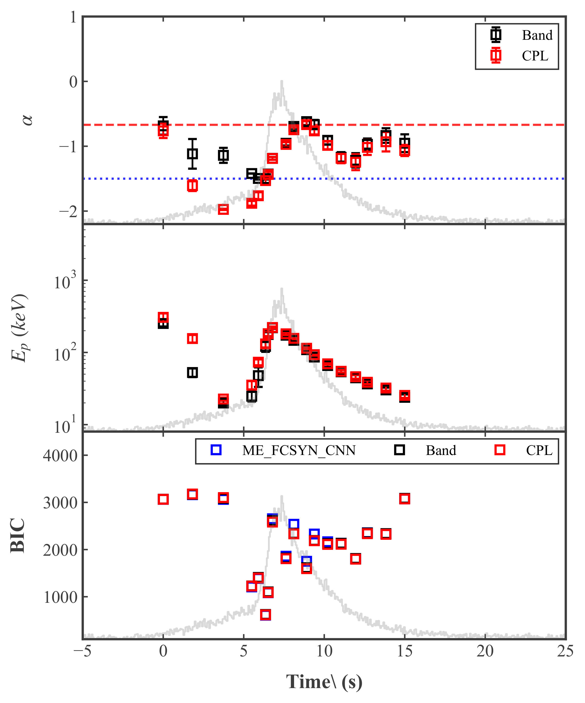
图注：Comparison between the empirical Band/CPL functions and the \(\texttt{ME\_FCSYN\_CNN}\) model. The top panel shows the temporal evolution of the low-energy photon index $\alpha$ obtained from the Band and CPL fits. The red dashed and blue dotted lines denote $\alpha=-2/3$ and $\alpha=-3/2$, respectively. The middle panel shows the evolution of the spectral peak energy $E_{\rm p}$. The bottom panel shows the BIC values of the \(\texttt{ME\_FCSYN\_CNN},\) Band, and CPL models. The gray curve in each panel shows the prompt-emission light curve for reference.
对应解读：对应“BIC 或 ΔBIC 随时间变化图”的重点查看建议，并补充“低能光子指数、谱峰能量与光变相位”的逐图导读。
入选理由：该图给出 Band/CPL 与 \(ME_FCSYN_CNN\) 的时间演化比较，包括低能光子指数 alpha、谱峰能量 Ep、BIC 以及光变曲线参考，是判断衰减磁场快冷同步辐射模型是否在多数时间段优于经验模型的核心证据。它还能把模型偏好与脉冲相位、谱峰演化联系起来，科学价值很高。
来源与置信度：\(arxiv_source\)；high；\(arxiv_source\) / Manuscript.tex:figure[8]
Fig06
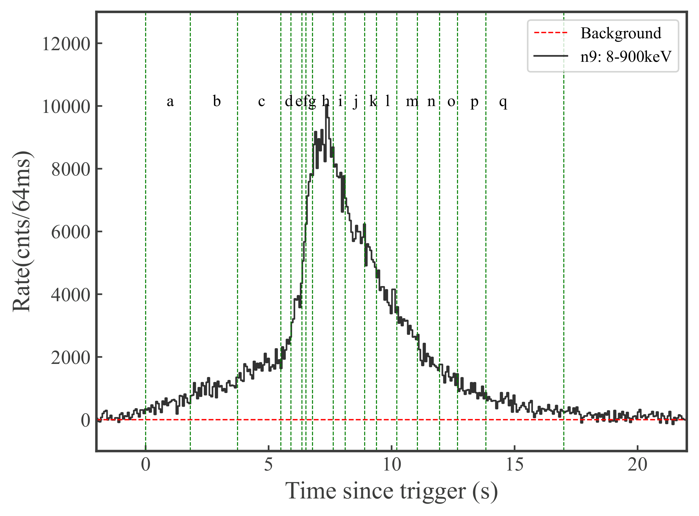
图注：Light curve of GRB~231020A. The green dashed vertical lines mark the Bayesian Blocks change points, defining the time intervals used for the time-resolved spectral analysis.
对应解读：对应“GRB 231020A 的光变曲线和时间分箱图”以及关键图表导读中的图 1 类内容。
入选理由：该图显示 GRB 231020A 光变曲线和 Bayesian Blocks 时间分箱，是理解所有时间分辨谱拟合的基础。它能帮助判断拟合时间段是否覆盖主要脉冲、是否区分上升段和衰减段，以及后续 BIC 和参数演化是否可能受分箱或多脉冲叠加影响。
来源与置信度：\(arxiv_source\)；high；\(arxiv_source\) / Manuscript.tex:figure[6]
Fig05
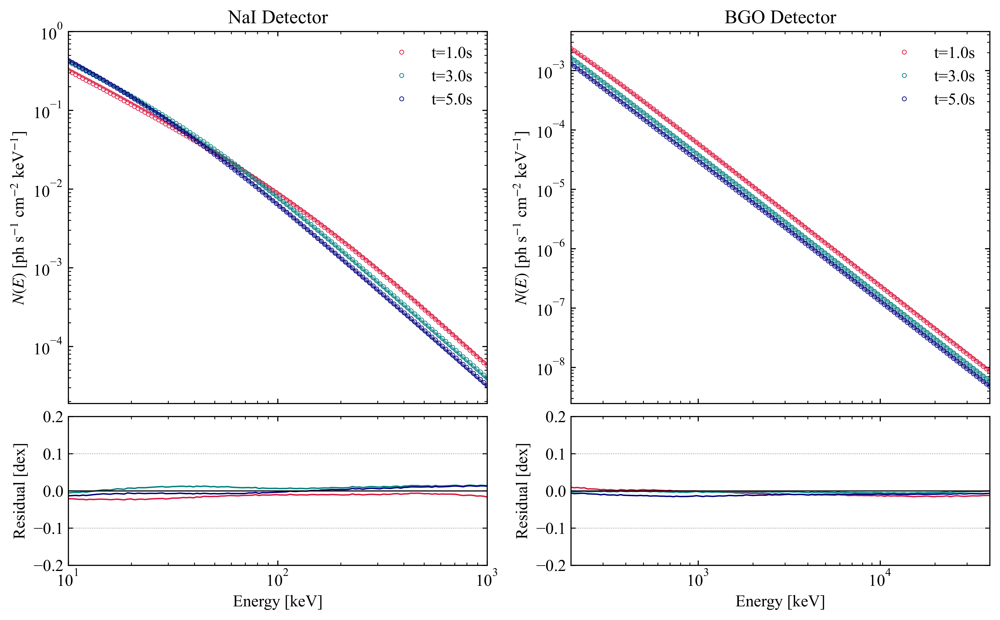
图注：Comparison between the CNN-emulated photon spectra and the corresponding numerical-model spectra on the fixed \(\textit{Fermi}/GBM\) energy grids. The left and right columns show the NaI and BGO bands, respectively, for three representative epochs ($t=1.0,\,3.0,$ and $5.0$~s; colors). The upper panels present $N(E)$ as a function of energy, while the lower panels show the logarithmic residuals (in dex) between the emulator prediction and the numerical reference. Solid curves and open circles denote the numerical-model spectra and the CNN-emulated photon spectra, respectively.
对应解读：对应“CNN 预测谱与数值谱对比图”的重点查看建议，以及关键图表导读中关于能量轴、谱形和相对残差的图 3 类内容。
入选理由：该图在 Fermi/GBM 的 NaI 和 BGO 能量网格上直接比较 CNN 模拟器与原数值谱，并给出不同代表时刻的对数残差。它能检验代理模型在真实观测能段、低能端、谱峰附近和高能端是否保持足够精度，是评估 CNN 替代数值模型是否可靠的关键图。
来源与置信度：\(arxiv_source\)；high；\(arxiv_source\) / Manuscript.tex:figure[5]
Fig04
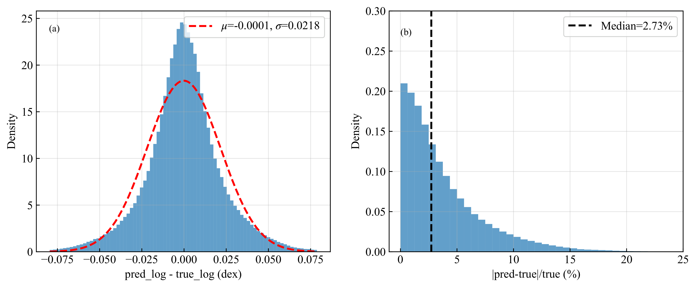
图注：Validation statistics of the CNN spectral emulator on the independent test set. Left: distribution of logarithmic residuals, defined as $\log_{10}(F_{\rm CNN}/F_{\rm num})$, showing negligible systematic bias and a narrow scatter around zero. Right: distribution of relative errors, with a median of $\sim 2.73\%$ and a 95th-percentile value of $\sim 11.22\%$.
对应解读：对应“代理模型残差分布或测试集统计表”的重点查看建议，以及模型拟合段落中关于网络误差是否存在系统偏差的讨论。
入选理由：该图给出独立测试集上的对数残差分布和相对误差分布，包含中位误差与 95 百分位误差，可用于判断 CNN 模拟器整体是否无明显系统偏差、误差是否有长尾。它比训练损失曲线更贴近谱拟合中真正关心的代理模型误差传播问题。
来源与置信度：\(arxiv_source\)；high；\(arxiv_source\) / Manuscript.tex:figure[4]
Fig09
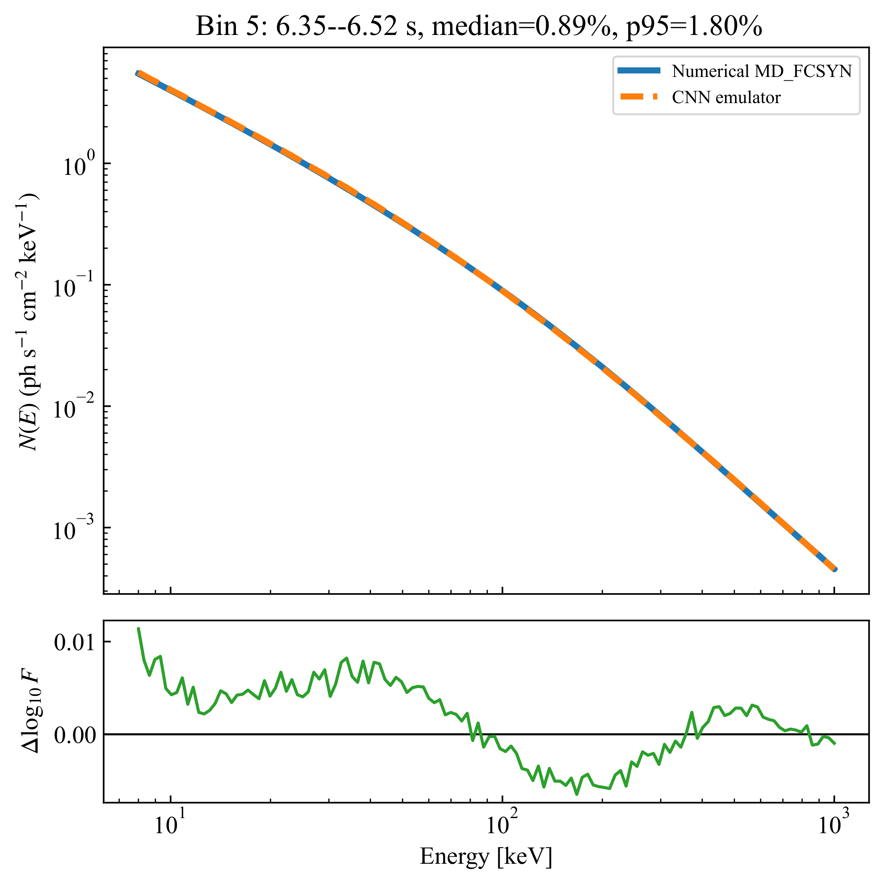
图注：Comparison between the CNN-emulated spectrum and the original numerical spectrum at the fitted parameters of the high-flux peak interval 6.35--6.52 s. The upper panel shows the two spectra, and the lower panel shows the logarithmic residual $\Delta\log_{10}F=\log_{10}F_{\rm CNN}-\log_{10}F_{\rm num}$. The median and 95th-percentile relative differences are $0.89\%$ and $1.80\%$, respectively.
对应解读：对应“CNN 预测谱与数值谱对比图”和“代理模型误差在真实拟合参数处是否足够小”的模型诊断段落。
入选理由：该图不是泛化测试，而是在高流量峰值时间段 6.35--6.52 s 的最佳拟合参数处比较 CNN 谱与原数值谱，并给出非常小的相对差异。这能直接验证关键观测区间的后验结论没有明显受代理模型误差主导，是对 Fig04 和 Fig05 的重要补充。
来源与置信度：\(arxiv_source\)；high；\(arxiv_source\) / Manuscript.tex:figure[9]
强相关工作
这篇工作直接处在“同步辐射能否解释伽马暴提示辐射”的长期讨论中。相关基础文献包括快冷同步辐射的标准谱形、Band 经验谱、Fermi/GBM 伽马暴谱目录，以及对低能谱指数过硬问题的统计研究。建议检索关键词包括 “gamma-ray burst prompt emission synchrotron fast cooling”， “GRB line of death”， “decaying magnetic field synchrotron GRB”， “Fermi GBM time-resolved spectroscopy”。
相近方向还有 Uhm 和 Zhang 等关于衰减磁场中快冷同步辐射的工作，以及后续把磁场演化、持续加速、角向时间效应纳入提示辐射谱的研究。这些工作与本文的关系是：前者给出物理动机和数值谱形，本文强调用 CNN 代理模型把这类模型带入系统贝叶斯拟合。相反或竞争观点主要来自耗散光球模型、多色黑体加非热尾、亚光球康普顿化，以及认为许多谱硬化可由时间积分或多脉冲叠加造成的解释。建议检索 “dissipative photosphere GRB prompt spectrum”， “subphotospheric Comptonization GRB”， “time integration effects GRB spectra”。
方法学上，本文也可放在 simulation-based inference、neural emulator 和 surrogate modeling 在天体物理中的应用背景下阅读。相似方法已用于宇宙学功率谱、超新星光变曲线、引力波波形和高能谱模型加速。读者若关心可复现性，应特别检索 “neural network spectral emulator astrophysics”， “Bayesian inference surrogate model spectra”， “machine learning emulator radiative transfer”。
相似工作：
- https://arxiv.org/abs/1303.1952
- https://arxiv.org/abs/1402.4852
- https://arxiv.org/abs/2606.05910
基础理论 / 方法工作：
- https://ui.adsabs.harvard.edu/abs/1993ApJ...413..281B/abstract
- https://ui.adsabs.harvard.edu/abs/1998ApJ...502L..13P/abstract
- https://ui.adsabs.harvard.edu/abs/2009ApJ...702..791A/abstract
相反观点 / 张力线索：
- https://ui.adsabs.harvard.edu/abs/2000ApJ...534..248P/abstract
- https://ui.adsabs.harvard.edu/abs/2011ApJ...732...49G/abstract
- https://ui.adsabs.harvard.edu/abs/2013ApJ...764..125V/abstract
6. On the Possibility of a Strong First-Order Phase Transition in Neutron Stars
- 来源：arXiv / astro-ph.HE
- 链接：https://arxiv.org/abs/2606.06378v1
- 作者：Zheng Cao, Lie-Wen Chen
- 评分：novelty 7/10，importance 8/10，relevance 8/10，final 8.70/10
- 推荐理由：结合GW170817、NICER、多种核物理约束的非参数EOS贝叶斯推断，偏向强一阶相变且起始密度高于最重中子星中心密度；对致密星高能天体物理有较高价值。
中文题目：中子星中强一阶相变是否可能存在
做了什么：这篇文章用非参数高斯过程构造冷的、处于 \(\beta\) 平衡的中子星物质状态方程，并分别在允许和不允许强一阶相变的假设下做贝叶斯推断。数据包括 GW170817 潮汐形变、多个 NICER 脉冲星质量—半径约束、低密度手征有效场论和极高密度微扰量子色动力学。主要结论不是简单地说“中子星核心已经发生相变”，而是：当前数据更偏好存在强一阶相变，但相变起始密度最可能高于目前最重稳定中子星的中心密度。这个结果把“中子星要足够硬以支撑约 \(2\,M_\odot\) 大质量”和“微扰量子色动力学在渐近高密度要求状态方程最终变软或趋向相对论气体行为”这两个要求放进了同一个统计框架。
为什么重要：冷高密量子色动力学无法直接由实验室重离子碰撞覆盖，中子星是少数能探测低温、数倍核饱和密度物质的天然实验室。强一阶相变如果存在，会深刻影响质量—半径关系、潮汐形变、最大质量、双生星分支以及并合后信号。本文的重要性在于它把天文观测和两端理论约束同时纳入非参数状态方程推断，并指出相变信号可能主要来自“与高密度微扰量子色动力学相容所需的整体形状”，而非已观测中子星内部已经直接跨过相变。
理论 / 观测 / 仪器方法价值：对理论而言，它提供了一个连接低密度手征有效场论、中子星可观测量和高密度微扰量子色动力学的统计检验，尤其强调相变起始密度的位置比“是否发生相变”本身更有物理含义。对观测而言，它说明半径、潮汐形变和大质量脉冲星的联合约束已经能影响高密度状态方程形状，但还不足以唯一定位相变。对方法而言，非参数高斯过程比固定分段多项式或声速参数化更少依赖人为函数形式，适合检验状态方程中的急剧软化。
为什么应该关注：如果你关心中子星是否含有夸克物质、混合相或更奇异的自由度，这篇文章给出的信号相当微妙：现有数据偏好强一阶相变，但这个相变可能藏在稳定中子星可达到密度之外。也就是说，未来半径测量、第三代引力波探测器和并合后振荡观测真正要追问的不是“有没有夸克芯”，而是状态方程在最大质量附近之后如何连接到渐近高密度理论。
展开详细解读：文章讲解、背景、理论、重点章节、图表与相关工作
文章详细讲解
科学问题：冷而高密的量子色动力学相图仍然缺少第一性原理答案。低温下，核子物质是否会在若干倍核饱和密度处经历强一阶相变，转入夸克物质或其他高密自由度主导的相，是中子星物理的核心问题之一。强一阶相变会表现为压力随能量密度出现平台或极软区，使声速、质量—半径关系和潮汐形变发生非平滑变化。但现有观测又要求状态方程在某些密度范围内足够硬，以支撑约 \(2\,M_\odot\) 的中子星。因此问题并不是“软化是否存在”这么简单，而是软化发生在什么密度、强到什么程度、是否会破坏最大质量约束。
作者怎么做：文章采用非参数高斯过程状态方程推断，构造处于 \(\beta\) 平衡的冷中子星物质状态方程族，并比较两类模型假设：一类允许强一阶相变，另一类不允许或不显式包含强一阶相变。约束来自四个层次：低密度端的手征有效场论，高密度端的微扰量子色动力学，中间密度的天文观测，包括 GW170817 的潮汐形变，以及 NICER 对 PSR J0740\(+\)6620、PSR J0030\(+\)0451、PSR J0437\(-\)4715、PSR J0614\(-\)3329 的质量—半径测量。每条候选状态方程还必须满足因果性、热力学稳定性和静态球对称中子星结构方程给出的稳定分支要求。
关键结果：推断结果偏好存在强一阶相变，但最值得注意的是相变起始密度的后验分布最可能位于当前最重稳定中子星中心密度之上。这意味着天文数据并不一定已经直接看到了“星内相界面”，而是通过要求状态方程在可观测中子星密度区间足够硬、同时又要在更高密度逐渐接上微扰量子色动力学，间接推动模型引入一次强软化。换句话说，相变像是连接两端理论约束的桥，而不一定是目前每颗大质量中子星内部已经出现的结构。
局限和下一步：结论对高密度微扰量子色动力学约束的使用方式、相变强度定义、非参数先验和观测似然的细节会有敏感性。NICER 半径约束仍有系统误差，不同热斑模型和背景模型会影响半径后验；GW170817 潮汐形变也依赖低自旋先验、波形系统误差和电磁对应体解释。下一步最关键的是获得更精确的大质量星半径、更多双中子星并合潮汐形变、并合后频谱以及可能的第三代探测器数据，以判断相变起始密度是否真的在稳定分支之外，还是会被新数据推回可观测中心密度范围内。
背景知识
研究对象是冷的、处于 \(\beta\) 平衡并满足电荷中性的中子星核心物质。它的温度相对于费米能通常很低，热效应在静态质量—半径推断中可忽略，因此核心问题变成给定重子密度或能量密度时压力如何变化，也就是状态方程。核饱和密度附近可以由核实验和手征有效场论约束，但中子星中心可达到数倍核饱和密度，那里核子、超子、介子凝聚、夸克自由度或更复杂的强关联效应都可能参与。
历史上，中子星状态方程研究常在“硬状态方程支持大质量”和“软状态方程给出较小半径、较小潮汐形变”之间拉扯。约 \(2\,M_\odot\) 脉冲星的发现排除了许多过软模型；GW170817 又倾向于典型 \(1.4\,M_\odot\) 中子星的潮汐形变不太大，从而限制半径不能过大。NICER 则通过脉冲轮廓建模给出若干单星的质量—半径后验。这些观测共同压缩了中间密度状态方程空间。
为什么现在值得重新看，是因为两端理论约束变得更有用。低密度手征有效场论给出了接近核饱和密度到约一两倍核饱和密度的压力范围；极高密度微扰量子色动力学虽然不能直接用于稳定中子星中心，但能约束状态方程在渐近密度处必须如何行为。把这两个端点与天文观测合在一起，会对中间未知区间的插值形状产生强约束，尤其能检验是否需要某种急剧软化。
该领域常见误区之一是把“偏好一阶相变”直接理解为“已观测中子星核心一定有夸克物质”。本文恰恰提醒读者：统计偏好可能来自稳定星内部之外的连接要求。另一个误区是认为微扰量子色动力学密度太高，所以对中子星完全无关；实际上它作为边界条件会影响允许的状态方程路径。还有一个误区是把小半径简单等同于相变，或者把大质量简单等同于无相变；真实推断中半径、最大质量、声速峰值、相变潜热和相变位置之间存在强退化。
基础理论 / 方法脉络
从基础物理图像看，中子星结构由引力压缩和简并强相互作用物质的压力支撑之间的平衡决定。给定一个冷物质状态方程 \(P(\varepsilon)\)，其中 \(P\) 是压力、\(\varepsilon\) 是能量密度，就可以用广义相对论静力平衡方程计算质量 \(M\)、半径 \(R\)、中心密度以及潮汐响应。状态方程越硬，通常在相同质量下半径越大、最大质量越高；状态方程越软，半径和潮汐形变通常更小，但可能无法支撑大质量星。
强一阶相变在零温状态方程中的典型表现是，在相变压力附近能量密度发生有限跳变，或者在麦克斯韦构造下出现近似恒压段。物理上，这对应两种相在同一化学势下具有相同压力，系统通过改变相的体积分数来增加密度。若潜热足够大，稳定星序列可能中断，甚至出现所谓双生星：相近质量但半径不同的两类稳定构型。若相变发生在最大质量中心密度以上，它不会直接产生星内混合结构，但仍会影响统计上允许的高密度延拓。
本文的模型假设是用非参数高斯过程描述未知状态方程，而不是预设少数分段多项式参数。高斯过程的作用是给函数空间一个先验，允许压力、声速或相关热力学量在密度上有相关变化，同时保留不确定度。允许强一阶相变的模型会包含能量密度跳变或等效的急剧软化结构；不允许强相变的模型则要求状态方程更连续平滑。所有模型还必须满足热力学稳定性 \(dP/d\varepsilon\ge 0\) 和因果性 \(c_s\le c\)。
观测方法上，GW170817 主要约束二元中子星的潮汐形变组合，潮汐形变对半径非常敏感，近似随 \((R/M)^5\) 放大。NICER 的质量—半径约束来自旋转脉冲星表面热斑的相位分辨 X 射线脉冲轮廓，受光线弯曲、自转、多普勒效应和热斑几何影响。两类观测并不直接测量状态方程，而是通过结构方程和辐射转移模型反推 \(P(\varepsilon)\)。
常见退化包括：较硬的中密度状态方程和较早的高密度软化可以共同维持最大质量；半径约束与低密度压力强相关，但对最高密度不敏感；潮汐形变主要约束 \(1\) 到 \(2\) 倍太阳质量附近的结构；微扰量子色动力学端点会与高密度插值先验共同影响是否需要相变。系统误差则来自手征有效场论截断误差、微扰量子色动力学重整化尺度不确定性、NICER 热斑模型选择和引力波波形系统误差。
公式与推导
第一步是冷物质热力学。对零温、单一重子守恒的物质，重子化学势 \(\mu\) 与能量密度 \(\varepsilon\)、压力 \(P\)、重子数密度 \(n\) 的关系为
这里 \(n\) 是重子数密度。这个式子说明状态方程不只是 \(P\) 与 \(\varepsilon\) 的关系，也可以用 \(P\) 与 \(\mu\) 或 \(n\) 表示；一阶相变常在相同 \(\mu\) 下比较两相压力。
第二步是稳定性和声速。冷状态方程的绝热声速满足
其中 \(c_s\) 是声速、\(c\) 是光速。热力学稳定性要求 \(dP/d\varepsilon\ge 0\)，因果性要求 \(c_s^2\le c^2\)。若出现强一阶相变，等压段上形式上有 \(dP/d\varepsilon\simeq 0\)，对应显著软化。
第三步是一阶相变的麦克斯韦条件。两相在相变点满足
这里 \(\mu_t\) 是相变化学势，\(P_t\) 是相变压力，\(\Delta\varepsilon\) 是潜热对应的能量密度跳变。强一阶相变通常意味着 \(\Delta\varepsilon\) 相对于相变前能量密度或压力足够大，能明显改变星体稳定性。
第四步是由状态方程到星体结构。静态球对称中子星满足 Tolman-Oppenheimer-Volkoff 方程
这里 \(r\) 是半径坐标，\(m(r)\) 是包围质量。给定中心压力并向外积分到 \(P=0\)，即可得到 \(M=m(R)\) 和 \(R\)。
第五步是稳定分支判据。沿中心密度 \(\varepsilon_c\) 参数化的星序列，径向稳定性通常要求
在达到最大质量附近 \(dM/d\varepsilon_c=0\) 后进入不稳定分支。强相变若足够剧烈，可使稳定分支提前终止或在更高中心密度重新出现第三族分支。
第六步是潮汐形变。单星的无量纲潮汐形变可写为
其中 \(k_2\) 是二阶 Love 数。这个式子解释了为什么 GW170817 对半径敏感：即使 \(k_2\) 也随结构变化，\(R^5\) 标度仍使半径差异被强烈放大。
第七步是双星引力波主要约束的质量加权潮汐形变
这里 \(M_1\)、\(M_2\) 是双星质量，\(\Lambda_1\)、\(\Lambda_2\) 是各自潮汐形变。状态方程推断要把候选 \(P(\varepsilon)\) 映射到每个质量的 \(\Lambda\)，再与引力波似然比较。
第八步是高斯过程先验的核心形式。若用函数 \(f(x)\) 表示某个状态方程变量，例如 \(\log P\) 或声速相关变量，常用先验为
其中 \(x\) 可为 \(\log n\) 或 \(\log\varepsilon\)，\(m(x)\) 是均值函数，\(K(x,x')\) 是协方差核。核函数决定不同密度处状态方程起伏的相关长度，是非参数推断中很重要的隐含物理假设。
第九步是贝叶斯模型比较。给定模型 \(\mathcal{M}\) 和数据 \(D\)，证据为
其中 \(\theta\) 包括状态方程自由度、相变参数和可能的天体物理参数。允许相变模型与无强相变模型的相对支持可由 Bayes 因子
衡量。若 \(\mathcal{M}_1\) 是强一阶相变模型，\(B_{12}>1\) 表示数据和先验共同更偏好该模型，但解释时必须同时检查先验体积效应。
模型拟合 / 应用方法
这类工作拟合的不是单一半径或单一压力点，而是一整族状态方程函数。参数 \(\theta\) 通常包括高斯过程的离散采样值或潜变量、核超参数、相变起始密度、相变压力、能量密度跳变、以及用于连接低密度手征有效场论和高密度微扰量子色动力学的边界条件。每个 \(\theta\) 都会生成一条候选 \(P(\varepsilon)\)，再经 TOV 方程产生 \(M\)-\(R\) 曲线、最大质量、中心密度和 \(\Lambda(M)\)。
似然由多部分相乘或相加对数似然构成。GW170817 部分比较候选状态方程给出的 \(\tilde{\Lambda}\)、质量和波形参数与引力波后验；NICER 部分比较模型质量—半径曲线与每颗脉冲星的二维 \(M\)-\(R\) 后验；理论约束部分则将手征有效场论和微扰量子色动力学给出的压力带、化学势范围或归一化条件作为先验或似然。实际读图时要注意，NICER 后验不是独立的高斯误差棒，不能简单把半径中心值硬套到 \(M\)-\(R\) 曲线上。
关键退化在于中密度硬化和高密度软化可以互相补偿。为了支撑大质量星，状态方程在若干倍核饱和密度内需要较高压力或较大声速；为了接上微扰量子色动力学，高密度端又不能无限硬。因此模型可能倾向于先硬后软，并把软化做成强一阶相变。相变起始密度若位于最大质量星中心密度之上，就不会显著改变已观测稳定星半径，但会改善与高密度边界条件的连接。
残差诊断应分三层看。第一层是天文观测残差：候选状态方程是否穿过 NICER 的高概率 \(M\)-\(R\) 区域，是否给出与 GW170817 相容的 \(\tilde{\Lambda}\)。第二层是理论端残差：低密度是否偏离手征有效场论带，高密度是否需要极端声速才能接上微扰量子色动力学。第三层是物理一致性残差：是否出现超光速声速、负压缩率、最大质量不足或不合理的稳定分支。
模型可能失败的地方包括：高斯过程先验的相关长度可能人为抑制或鼓励尖锐结构；微扰量子色动力学在有限但很高密度处的外推仍有尺度不确定性；相变若不是简单麦克斯韦构造，而是有混合相、有限表面张力、库仑效应或多重相变，简单强一阶相变参数化会过度理想化。实际应用中，本文最有价值的不是某个单一最优状态方程，而是后验分布如何告诉我们哪些密度区间由数据控制、哪些区间仍由先验和理论端点主导。
重点章节 / 结果段落怎么读
数据和理论约束部分应首先读清楚。重点看作者如何处理 GW170817 的潮汐形变似然、NICER 四颗脉冲星的 \(M\)-\(R\) 后验，以及手征有效场论和微扰量子色动力学是作为硬边界、软似然还是先验带进入推断。这个选择会直接影响“偏好强一阶相变”的强度。
状态方程参数化和高斯过程方法部分是全文核心。读者应检查高斯过程作用在哪个变量上，例如压力、声速或某种变换后的热力学量；核函数和相关长度如何设定；相变模型如何定义“强”；以及如何保证热力学稳定性和因果性。这里决定了模型是否真的非参数，还是隐含偏向某类形状。
中子星结构计算部分要关注从状态方程到观测量的映射。候选状态方程是否全部解 TOV 方程，是否计算 Love 数和 \(\Lambda(M)\)，是否要求最大质量超过已知大质量脉冲星下限，是否剔除不稳定分支。这部分是把核物理模型变成天文可检验量的桥。
主结果部分应重点看强一阶相变模型与无强相变模型的后验比较、Bayes 因子或等效证据指标，以及相变起始密度相对于最大质量星中心密度的位置。若文章给出声速带、压力带、质量—半径带和中心密度分布，这些图要联合读，而不是只看一张 \(M\)-\(R\) 图。
讨论和稳健性检验部分尤其重要。读者应看作者是否改变微扰量子色动力学约束、NICER 数据组合、手征有效场论密度截止或高斯过程超参数，并检查结论是否仍然成立。如果偏好相变只在某个先验选择下出现，就应更谨慎地解释。
建议重点查看的图表
-
状态方程压力—能量密度或压力—密度后验带：看允许相变与不允许相变两种模型在中高密度处是否明显分叉，尤其是否出现平台或急剧软化。
-
声速 \(c_s^2/c^2\) 随密度变化图：看是否需要先出现超过共形值 \(1/3\) 的硬化，再在更高密度快速下降；这通常是理解“大质量支撑”和“接上微扰量子色动力学”的关键。
-
质量—半径关系图：看后验带是否覆盖 NICER 四颗源的高概率区域，以及最大质量附近的曲线是否因相变出现转折、断裂或第三族迹象。
-
潮汐形变 \(\Lambda(M)\) 或 GW170817 的 \(\tilde{\Lambda}\) 约束图：看 \(1.2\) 到 \(1.6\,M_\odot\) 区间是否与引力波数据一致，以及相变模型是否主要影响高质量端而非典型质量端。
-
相变起始密度与最大质量星中心密度的联合后验：这是本文最关键诊断，应看概率质量是否主要落在相变起始密度高于最大中心密度的区域。
-
模型比较或证据表：看 Bayes 因子、后验赔率或信息准则如何变化，并检查是否报告先验敏感性。
-
理论约束连接图：若有手征有效场论和微扰量子色动力学压力带叠加，应看状态方程后验如何从低密度端过渡到高密度端，避免只盯着天文数据区间。
关键图表逐图导读
图 1：建议把它理解为状态方程后验总览图。横轴通常是重子密度、能量密度或化学势，纵轴是压力或归一化压力。数据带可能包括手征有效场论低密度约束、微扰量子色动力学高密度约束，以及允许相变和不允许相变的后验区间。读图关键是看中间密度如何从低密度核物理带连接到高密度量子色动力学带；陷阱是不要把高密度端点附近的后验当成直接观测结果，它很可能主要由理论边界和先验控制。
图 2：若为声速图，横轴多为密度或化学势，纵轴为 \(c_s^2/c^2\)。模型线或置信带若显示中密度声速升高、高密度声速降低，就支持“先硬后软”的解释。读者应检查声速是否接近因果上限、是否明显超过共形值 \(1/3\)，以及软化是否与相变起始位置对应。陷阱是共形值不是严格上限，超过 \(1/3\) 本身不等于模型错误。
图 3：若为质量—半径图，横轴是半径 \(R\)，纵轴是质量 \(M\)，背景应叠加 NICER 后验云或置信轮廓。重点看 \(2\,M_\odot\) 附近半径是否仍合理、最大质量是否满足观测下限、低质量段是否与 GW170817 倾向的小潮汐形变相容。若相变起始密度在最大质量星中心密度以上，图上未必出现明显断裂；不要因为 \(M\)-\(R\) 曲线平滑就断言没有相变偏好。
图 4：若为潮汐形变图，横轴是质量 \(M\)，纵轴是 \(\Lambda\) 或双星组合 \(\tilde{\Lambda}\)。读者应关注 \(1.4\,M_\odot\) 附近的 \(\Lambda\) 后验范围，以及 GW170817 质量范围内的模型覆盖情况。陷阱是 \(\Lambda\) 对半径的五次方敏感，小的半径差会造成大的纵轴变化，因此视觉上很宽的带不一定意味着状态方程完全无约束。
图 5：若为相变参数后验，横轴可能是相变起始密度，纵轴可能是能量密度跳变、相变压力或相对于最大质量星中心密度的比值。最应看的是概率是否集中在 \(n_t>n_c^{\rm max}\) 或等效区域，其中 \(n_t\) 是相变起始密度，\(n_c^{\rm max}\) 是最大质量稳定星中心密度。陷阱是边缘分布可能掩盖与相变强度的相关性，最好看二维联合后验。
图 6：若为模型证据或稳健性表，行通常对应不同数据组合或先验设置，列给出允许强一阶相变和不允许强一阶相变的证据、Bayes 因子或后验概率。读者应看结论是否由某一项数据单独驱动，尤其是高密度微扰量子色动力学边界。陷阱是 Bayes 因子同时受先验体积影响，不能等同于频率学意义上的显著性。
论文原图 / 可嵌入图片
Fig01
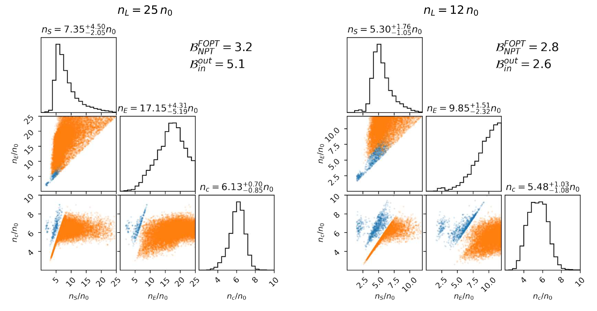
图注：Corner plots of the posterior distributions of the FOPT onset density $n_S$, end density $n_E$, and central density $n_c$ of the most massive neutron star for the two choices of $n_L$: $n_L = 25\,n_0$ (left panel) and $n_L = 12\,n_0$ (right panel). In each panel, the diagonal subpanels show the one-dimensional marginalized posteriors, with the median and $68\%$ credible interval reported in each panel title; the Bayes factors $\mathcal{B}^\mr{FOPT}_\mr{NPT}$ and $\mathcal{B}^\mr{out}_\mr{in}$ are also annotated. The off-diagonal panels display equally-weighted posterior samples, with blue ($n_S < n_c$) and orange ($n_S \ge n_c$) marking FOPT onsets below and above $n_c$, respectively.
对应解读：对应“建议重点查看的图表”第5项和“关键图表逐图导读”图5：相变起始密度与最大质量星中心密度的联合后验；也对应模型比较中 Bayes 因子和相变在星内/星外的后验赔率。
入选理由：这是本文核心结论的最直接证据：图中同时给出 FOPT 起始密度 \(n_S\)、结束密度 \(n_E\)、最重中子星中心密度 \(n_c\) 的角图后验，并用颜色区分 \(n_S
Fig03
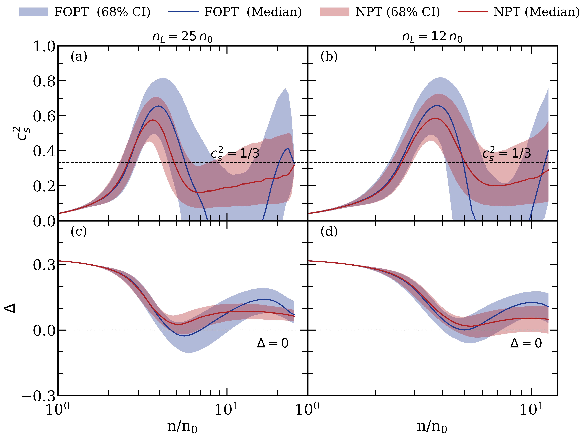
图注：Squared sound speed $c_s^2$ (top) and trace anomaly $\Delta = 1/3 - p/\varepsilon$ (bottom) as functions of baryon density, with $n_L = 25\,n_0$ in the left column and $n_L = 12\,n_0$ in the right column. Filled bands give the $68\%$ credible intervals and solid lines mark the median values, with FOPT shown in blue and NPT in red. Black dashed lines indicate the conformal references $c_s^2 = c^2/3$ and $\Delta = 0$.
对应解读：对应“建议重点查看的图表”第2项和“关键图表逐图导读”图2：声速 \(c_s^2/c^2\) 随密度变化，以及是否出现中密度硬化、高密度软化；同时涉及 trace anomaly 与共形参考线。
入选理由：该图直接展示 FOPT 与 NPT 两种假设下声速平方和迹反常随重子密度的后验带、中央値和共形参考线 \(c_s^2=c^2/3\)、Δ=0，是理解“大质量支撑需要先硬化、接上 pQCD 需要后软化”的关键诊断。它比单纯的天文观测覆盖图更能揭示状态方程内部物理机制。
来源与置信度：\(arxiv_source\)；high；\(arxiv_source\) / FOPT260604.tex:figure[3]
Fig02
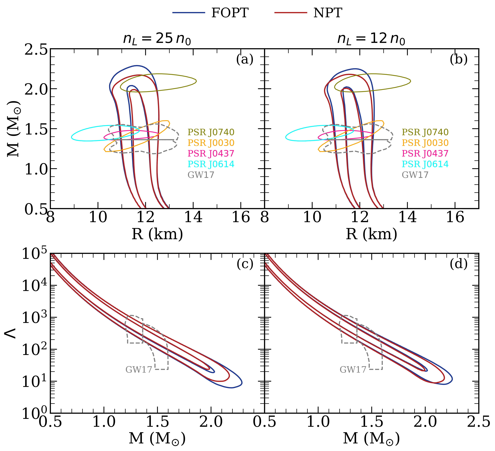
图注：Joint posterior distributions of mass--radius (top) and tidal deformability--mass (bottom) for neutron stars under the FOPT (blue) and NPT (red) hypotheses, shown as $68\%$ and $95\%$ credible regions. The left (right) column is for $n_L = 25\,n_0$ ($12\,n_0$). Astrophysical constraints---NICER joint posteriors for PSR~J0740$+$6620~\(\citep{Salmi:2024aum},\) PSR~J0030$+$0451~\(\citep{Vinciguerra:2023qxq},\) PSR~J0437$-$4715~\(\citep{Choudhury:2024xbk},\) and PSR~J0614$-$3329~\(\citep{Mauviard:2025dmd},\) together with the GW170817 posterior~\(\citep{LIGOScientific:2018cki}---are\) overlaid for reference.
对应解读：对应“建议重点查看的图表”第3项和第4项，以及“关键图表逐图导读”图3、图4：质量—半径关系、潮汐形变—质量关系，并叠加 NICER 与 GW170817 约束。
入选理由：该图把 FOPT 与 NPT 的 M-R 后验区和 Λ-M 后验区放在一起，并叠加四颗 NICER 源和 GW170817 后验，可直接检查候选状态方程是否覆盖天文观测高概率区域、是否满足大质量星与潮汐形变约束。虽然它不如 Fig01 直接证明相变位置，但它是连接模型推断与观测似然的主要图。
来源与置信度：\(arxiv_source\)；high；\(arxiv_source\) / FOPT260604.tex:figure[2]
强相关工作
这篇工作与近年来“多信使中子星状态方程推断”一脉相承：GW170817 提供潮汐形变，NICER 提供质量—半径后验，大质量射电脉冲星提供最大质量下限，核理论提供低密度边界。相似工作常用分段多方、谱表示、声速参数化或高斯过程来重建 \(P(\varepsilon)\)，并讨论声速是否必须超过共形值、是否存在夸克物质或双生星。可检索关键词包括“neutron star equation of state Gaussian process”, “strong first-order phase transition neutron stars”, “pQCD constraint neutron star EoS”, “NICER GW170817 Bayesian inference”。
它也处在一个有张力的讨论中：一部分研究认为现有数据尚不足以要求强一阶相变，连续的强相互作用核子状态方程也能解释质量、半径和潮汐形变；另一部分研究则认为若同时加入高密度微扰量子色动力学约束，中间密度必须经历明显声速结构或相变。本文的相对新意在于强调相变起始点可能在稳定星中心密度之上，因此“偏好相变”与“星内已存在相变核心”不应混为一谈。建议同时检索“twin stars”, “constant speed of sound parameterization”, “conformal bound neutron stars”, “Bayes factor phase transition EoS”。
相似工作：
- https://arxiv.org/abs/2606.06378
- https://arxiv.org/abs/1805.11581
- https://arxiv.org/abs/1903.09121
- https://arxiv.org/abs/2002.11355
基础理论 / 方法工作：
- https://arxiv.org/abs/1710.05832
- https://arxiv.org/abs/1602.01020
- https://arxiv.org/abs/1307.3995
- https://arxiv.org/abs/0912.1856
相反观点 / 张力线索：
- https://arxiv.org/abs/1810.07696
- https://arxiv.org/abs/2105.06981
- https://arxiv.org/abs/2209.14349
7. Complex Analysis of Askaryan Radiation: UHECR Reconstruction with Askaryan Radio Array
- 来源：arXiv / astro-ph.HE
- 链接：https://arxiv.org/abs/2606.05514v1
- 作者：J. C. Hanson, D. Ibanez-Rodriguez
- 评分：novelty 7/10，importance 7/10，relevance 9/10，final 8.70/10
- 推荐理由：针对ARA观测到的13个UHECR候选事件建立Askaryan辐射解析模型并与波形匹配，直接关联超高能宇宙线射电探测与重建方法。
中文题目：Askaryan 辐射的复数域解析：用南极 Askaryan Radio Array 重建超高能宇宙线
做了什么：这篇文章针对 ARA 在南极冰中看到的 13 个超高能宇宙线候选事例，建立了一个解析的 Askaryan 射电脉冲模型，并把天线、滤波、放大、触发通道等射频响应纳入同一框架。作者用相干叠加波形与模型波形比较，得到相关系数约为 \(0.69\) 到 \(0.86\)，同时功率差较小，从而支持这些事例确实是超高能宇宙线在冰中或近冰面级联产生的 Askaryan 信号。文章的重要性不在于发现新事例，而在于提供一个可解释、可快速计算的解析波形框架，用于把 ARA 的射频脉冲从“像信号”推进到“可物理重建”的层次。
为什么重要：冰中射电阵列寻找超高能中微子时，最难的问题之一是把真实 Askaryan 脉冲、宇宙线诱发级联、热噪声、人造射频干扰和仪器卷积效应区分开。若 13 个 ARA 候选事例能用同一个物理波形模型解释，就说明这些事件不只是经验分类器挑出的异常脉冲，而是与电荷过剩级联、Cherenkov 几何和射频通道响应一致的物理信号。这会直接影响 ARA 既有事件解释，也会影响 RNO-G、IceCube-Gen2 Radio 等下一代射电中微子探测器的重建策略。
理论 / 观测 / 仪器方法价值：理论上，论文把 Askaryan 电场的频域结构、极化和介质传播用可操作的解析形式串起来；观测上，它给出了从相干叠加波形到事件身份验证的诊断量；仪器方法上，它强调必须把天线与射频链路响应作为模型的一部分，而不是在事后用经验模板吸收。对专业读者的价值在于：你可以用这套框架检查候选事件是否真的符合 Askaryan 辐射，而不仅是看脉冲宽度、到达方向或机器学习分数。
为什么应该关注：如果你关心超高能宇宙线、宇宙中微子、冰中射电探测或瞬态射频背景，这篇文章值得看，因为它处理的是该领域的核心瓶颈：如何把一个纳秒级射电脉冲解释成一个可重建的粒子级联。它也提醒我们，射电探测的“物理判别力”很大一部分来自波形相位、频谱和仪器响应的联合建模，而不是单纯的信噪比。
展开详细解读：文章讲解、背景、理论、重点章节、图表与相关工作
文章详细讲解
科学问题：超高能宇宙线进入地球大气或冰面附近介质后会产生相对论级联。级联中的电荷过剩会通过 Askaryan 效应发出相干射电脉冲；若级联和观测几何合适，脉冲可以穿过南极冰并被 ARA 的射频天线记录。问题在于，ARA 看到的 13 个候选事件是否真能由 Askaryan 辐射解释，还是只是某类仪器响应、背景射频瞬变或未建模的人造干扰。单靠事件方向、脉冲强度或经验模板并不足以给出强物理解释，因为纳秒级射电脉冲经过冰传播、天线接收和电子学链路后，波形会被显著改变。
作者怎么做：论文构造了一个解析模型，用复数频域形式描述 Askaryan 电场，并把 ARA 射频通道响应包含进去。这里的“复数分析”重点不是抽象数学意义上的复变函数理论，而是保留频域电场的幅度和相位，使电场在通过天线有效高度、滤波器、放大器、线缆和数字化系统时可以用复传递函数逐步相乘。作者随后把模型波形变换回时域，与每个候选事件的相干叠加波形比较。相干叠加波形的意义是：利用多天线到达时延校正，把来自同一方向的脉冲对齐后叠加，从而增强真实相干信号并抑制非相干噪声。
关键结果：13 个候选事件的相干叠加波形与模型之间的相关系数达到 \(0.69\) 到 \(0.86\)，并且分数功率差较小。这说明模型不仅能大致给出一个窄脉冲，还能在脉冲相位、主瓣与旁瓣、频率响应塑形之后的时域形态上与数据接近。作者还展示了如何从解析形式反推出或计算 Askaryan 的 \(\vec{E}\)-field，并指出其结果与 ARA 对这些事件的解释一致。对于事件身份判定而言，这比“波形看起来像模板”更有说服力，因为它把粒子级联物理和探测器响应连成一个可检验链条。
局限和下一步：这类解析模型的强项是透明和快速，但局限也明显。第一，级联纵向发展、冰中折射率梯度、表面粗糙度、介质双折射或局部冰层结构都可能给波形带来系统偏差。第二，候选事件数量只有 \(13\)，相关系数的分布还不能单独构成背景排除的完整统计量。第三，模型与数据相符并不自动给出唯一的初级粒子能量、入射方向和相互作用位置，因为电场幅度、观察角偏离 Cherenkov 角、传播距离和通道增益之间存在退化。下一步最有价值的是把该解析波形模型嵌入完整贝叶斯或似然重建，联合使用波形、极化、到达时间、频谱和几何约束，并在模拟注入与真实背景样本上检验误判率。
背景知识
Askaryan 效应是高能粒子在致密介质中诱发电磁级联时产生相干射电辐射的机制。级联发展过程中，Compton 散射、正电子湮灭和介质电子卷入会使粒子簇产生净负电荷过剩。这个相对论移动的电荷过剩在 Cherenkov 条件附近辐射，低频端由于波长大于级联横向尺寸而相干叠加，因此射电功率随级联能量增长非常快。对超高能中微子和宇宙线探测而言，这给出了一个大体积、低成本的探测通道。
历史上，Askaryan 效应最初是理论预言，后来在沙、盐、冰等介质的束流实验和自然事件中逐步得到验证。南极冰特别适合射电探测，因为射频衰减长度可达到百米到公里量级，环境热稳定，人造射频背景相对低。ARA 的设计目标主要是寻找超高能中微子诱发的冰内级联，但宇宙线也可能在接近冰面或进入冰层时产生可见射电脉冲，因此宇宙线事件既是背景，也是标定和物理验证样本。
这篇论文之所以现在值得看，是因为射电中微子领域正从“能否看见 Askaryan 脉冲”进入“能否精确重建事件并控制背景”的阶段。ARA、ARIANNA、RNO-G 和 IceCube-Gen2 Radio 都依赖纳秒射频波形的解释能力。若一个解析模型能解释真实候选事件，它可作为快速重建器、交叉检验工具或模拟链路的低维替代模型。尤其在未来大阵列中，完全依赖昂贵的端到端蒙特卡洛并不现实，解析模型仍有重要角色。
该领域常见误区之一是把 Askaryan 脉冲想象成介质中一个固定形状的“标准波形”。实际上，观测波形由级联长度、观察角、传播距离、冰的色散与衰减、天线方向图、极化投影和电子学响应共同决定。另一个误区是认为高相关系数自然等于粒子身份确认。相关性是有力证据，但必须结合背景库、盲分析选择、试验因子和系统误差。还有一个误区是把宇宙线事件完全视为中微子搜索的麻烦背景；在射电阵列中，宇宙线事件反而是检验几何重建、极化响应和绝对增益的重要校准源。
基础理论 / 方法脉络
基本物理图像从相干辐射开始。一个超高能级联包含大量带电粒子，如果辐射波长比电荷分布的特征尺度长，各粒子的电场相位接近，电场幅度近似按净电荷数线性增加，辐射能量近似按净电荷数平方增加。Askaryan 辐射的核心就是级联中的净负电荷过剩沿级联轴以接近光速运动，并在介质中形成类似 Cherenkov 的锥形辐射。对于冰这种折射率约为 \(1.7\) 到 \(1.8\) 的介质，Cherenkov 角较大，观测者相对锥面的偏移会强烈影响频谱和时域脉冲宽度。
宇宙线级联还可能通过地磁效应发出射电辐射。地磁效应来自电子和正电子在地磁场中受 Lorentz 力分离，形成横向电流，其极化方向通常沿 \(\vec{v}\times\vec{B}\)。Askaryan 辐射的极化则主要在级联轴与观测方向构成的平面内，指向径向 Cherenkov 几何。本文关注的是在固体射频透明介质中传播到 ARA 的 Askaryan 分量，并利用波形模型来检验候选事件是否符合这种机制。实际事件中不同辐射机制的相对贡献、表面透射和极化投影都可能影响解释。
从观测链路看，探测器并不直接记录物理电场 \(\vec{E}(t)\)。天线把入射电场投影成开路电压，随后经过天线有效高度、阻抗匹配、滤波、放大、线缆、触发与数字化系统。频域中这些过程通常可以写成复传递函数相乘，因此保留相位是必要的。如果只拟合功率谱而忽略相位，就会丢掉纳秒脉冲形态中最能区分真实相干信号和背景的重要信息。
相干叠加波形是这类分析的关键数据产品。对于一个假设到达方向，阵列中每根天线都有一个几何时延；把各通道波形按该时延平移并按极化或噪声权重叠加，可以增强来自同一方向的脉冲。若方向假设错误，主脉冲会被展宽或相互抵消。因而相干叠加波形同时检验了到达方向、相干性和波形物理。本文将解析 Askaryan 模型通过同样的仪器响应处理后与相干叠加波形比较，是合理的“同空间”比较。
主要退化来自几何和增益。观测到的电压幅度可由更高能量、更近距离、更接近 Cherenkov 角、更有利的天线方向图或更大通道增益共同产生。频谱变软可能来自观察角偏离，也可能来自冰中频率相关衰减或电子学带宽。到达方向误差会污染相干叠加波形，而背景脉冲若恰好在多通道中相干，也可能给出非零相关性。因此，波形相关系数应与功率残差、极化一致性、时间残差和背景试验共同解释。
公式与推导
第一步是 Cherenkov 几何。带电结构在折射率为 \(n\) 的介质中以速度 \(v=\beta c\) 运动时，相干辐射在满足相位驻定的方向增强，Cherenkov 角满足
这里 \(\theta_C\) 是辐射方向与级联轴的夹角，\(c\) 是真空光速，\(\beta\) 是速度相对 \(c\) 的比值。对相对论级联 \(\beta\simeq 1\)，冰中 \(n>1\) 使 \(\theta_C\) 为几十度量级。
第二步是电荷过剩的相干标度。若级联能量为 \(E_{\rm sh}\)，临界能量为 \(E_c\)，总带电粒子数近似为 \(N_{\rm e}\sim E_{\rm sh}/E_c\)，净负电荷过剩可写为
其中 \(e\) 是元电荷，\(f_{\rm ex}\) 是电荷过剩比例。相干频段内电场幅度近似与 \(|Q_{\rm ex}|\) 成正比，因此这是 Askaryan 辐射可用于能量估计的基础。
第三步把移动电荷分布写成频域辐射源。远场近似下，频率为 \(\omega\) 的电场可以表示为源电流的 Fourier 分量乘以传播因子，形式上可写为
其中 \(\mu\) 是介质磁导率，\(R\) 是源到观测点距离，\(k=n\omega/c\)，\(\vec{P}_{\perp}\) 表示投影到横向辐射方向，\(\vec{J}\) 是级联电流的频域表示。这个式子说明幅度、相位和极化都必须同时处理。
第四步加入有限级联长度和观察角偏离。常用解析近似会把角频谱写成 Cherenkov 角附近的包络，例如
其中 \(\theta\) 是观测角，\(\sigma_\theta(\omega)\) 是频率相关角宽度。高频对应更窄的相干锥，因此偏离 \(\theta_C\) 会优先削弱高频，使时域脉冲变宽。
第五步考虑冰中传播衰减。若射线长度为 \(R\)，频率相关场衰减长度为 \(L_{\rm att}(\omega)\)，到达天线处的电场可写成
这里 \(R_0\) 是归一化距离，\(\phi_{\rm prop}\) 是传播相位。若冰性质近似均匀，积分项可化为 \(\exp[-R/L_{\rm att}(\omega)]\)。
第六步把物理电场转换成仪器电压。对第 \(j\) 个通道，频域电压可写为
其中 \(\vec{h}_{{\rm eff},j}\) 是方向和极化相关的天线有效高度，\(G_j\) 是电子学复增益，\(N_j\) 是噪声。本文模型的关键就是把 \(\vec{h}_{{\rm eff},j}\) 和 \(G_j\) 纳入比较，而不是只比较未卷积的理论电场。
第七步定义相干叠加波形。给定方向假设 \(\hat{n}\)，通道几何时延为 \(\tau_j(\hat{n})\)，可构造
其中 \(w_j\) 是权重，通常可由噪声方差、通道质量或极化匹配决定。真实相干脉冲在正确 \(\hat{n}\) 下会变窄并增强；非相干噪声则近似按通道数平方根降低。
第八步是模型—数据相关系数。若数据相干波形为 \(d_i\)，模型为 \(m_i\)，在选定时间窗内可定义
这里 \(i\) 标记采样点，\(\bar{d}\) 和 \(\bar{m}\) 是窗口均值。论文报告 \(\rho\approx0.69\) 到 \(0.86\)，说明相位和时域形态具有较强一致性。
第九步是功率差诊断。一个简单的分数功率差可写为
若 \(|\Delta_P|\) 很小，说明模型不仅形状相似，而且总脉冲能量尺度也合理。但它不能单独排除增益标定误差，因为 \(m_i\) 的归一化可能与能量、距离和通道增益退化。
第十步可把比较推广为似然。若残差 \(r_i=d_i-a m_i\) 服从协方差矩阵 \(C\) 的高斯噪声，则
其中 \(a\) 是幅度缩放参数，可吸收能量和部分增益不确定性。这个式子给出了把本文相关性检验升级为完整参数估计的自然路径。
模型拟合 / 应用方法
本文的拟合或匹配对象主要是相干叠加波形，而不是单个通道的原始电压峰值。可调或隐含参数包括级联能量归一化、观察角相对 \(\theta_C\) 的偏离、传播距离、入射方向、极化投影、时间零点以及通道响应的标定参数。实际分析中，方向和几何可能来自 ARA 既有重建，解析模型则用于生成通过射频通道卷积后的预期波形，再与相干叠加波形比较。
统计量方面，论文摘要明确给出相关系数和分数功率差。相关系数主要测试形状相似性，对整体幅度不敏感；功率差则测试归一化是否合理。若要做更严格的模型比较，应使用包含噪声协方差的时域或频域似然，并把通道间相关噪声、滤波导致的采样点相关性纳入 \(C\)。在强滤波射频数据中，采样点并非独立，简单的逐点 \(\chi^2\) 容易高估显著性。
主要退化关系包括能量—距离退化、观察角—频谱退化、增益—能量退化和方向—相干性退化。更高的级联能量和更近的传播距离都能提高电压幅度；偏离 Cherenkov 角和频率相关衰减都能削弱高频；天线方向图误差会伪装成极化或角度误差；错误的方向重建会让相干叠加波形变宽，从而降低与模型的相关性。因此，看拟合结果时不能只看最佳相关系数，还要看参数空间中是否存在大面积等价解。
系统误差尤其值得注意。ARA 的有效高度、电子学传递函数、冰中衰减长度、折射率剖面、天线位置和时钟校准都会影响模型波形。若某些通道的相位响应有小误差，纳秒脉冲主瓣和旁瓣会发生明显变化。稳健的做法是对通道响应做扰动，重复计算模型相关系数和功率差，评估结论是否依赖某个频段或某根天线。
实际应用上，这类解析模型可用于候选事件确认、快速能量估计、背景拒绝、模拟注入和阵列设计优化。对未来射电阵列，最好将其作为分层分析的一环：先用快速解析模型筛选物理合理区域，再用完整蒙特卡洛和冰传播射线追踪做精细重建。模型失败的情况也有信息量：若事件方向看似合理但频域相位无法匹配，可能提示背景、仪器瞬变、复杂传播路径或非 Askaryan 辐射贡献。
重点章节 / 结果段落怎么读
数据/样本部分应首先关注 13 个 ARA 超高能宇宙线候选事件的来源、选择标准和相干叠加波形构造方式。读者需要确认这些事件是否来自既有盲分析，是否有独立背景估计，以及每个事件的方向、极化和信噪比是否一致支持宇宙线解释。
解析模型部分是全文核心。应重点阅读作者如何写出 Askaryan 电场的频域形式，哪些物理量被保留为复数相位，哪些近似被采用，例如远场近似、均匀介质近似、固定级联轮廓或经验角频谱包络。这里要分清“物理源模型”和“仪器响应模型”各自贡献了什么。
ARA 射频通道响应部分需要细读。天线有效高度、滤波器、放大器和线缆响应会把原始 Askaryan 电场显著塑形。若论文给出通道传递函数或响应卷积流程，应检查它是否使用每个通道的独立标定，还是使用平均响应。这个选择会直接影响波形相关系数。
结果部分应看每个候选事件的模型—数据比较，包括相干叠加波形、相关系数、分数功率差和可能的残差。不要只看平均表现；低相关系数事件往往最能暴露模型缺陷或背景污染。
讨论和结论部分应关注作者如何解释这些事件“确认为超高能宇宙线”。严格说，模型一致性是强支持证据，但完整确认还需要背景率、试验因子和独立诊断。读者应把本文视为物理波形验证，而不是单独完成全部宇宙线事件发现统计。
建议重点查看的图表
-
候选事件的相干叠加波形图：应看数据与模型的主脉冲是否在时间、宽度和极性上对齐，旁瓣是否也匹配，而不只是峰值重合。
-
每个事件的相关系数和分数功率差表：应检查 \(\rho\) 是否集中在高值，低值事件是否有共同特征，例如低信噪比、方向不确定或特殊通道响应。
-
频域幅度和相位响应图：应看模型通过 ARA 通道后在哪些频段贡献最大，是否存在某个窄频带主导相关性的风险。
-
Askaryan 电场解析结果与 ARA 推断结果的对比图：应检查电场幅度、相位或时域形态是否在物理上合理，尤其是极化投影和 Cherenkov 几何是否一致。
-
残差波形或残差功率谱：若有，应看残差是否呈随机噪声，还是在主脉冲附近有系统性正负结构。系统残差可能意味着通道响应或级联模型不完整。
-
几何或方向重建示意图：应看级联轴、Cherenkov 锥、天线位置和冰面传播路径。对宇宙线候选事件，几何解释常常决定它与中微子候选的区分。
-
稳健性检验图或附录表：应看改变时间窗、频带、通道选择或响应标定后，相关系数是否稳定。若结果只在一个很窄的分析设置下成立，可信度会降低。
关键图表逐图导读
图 1：若论文给出 ARA 候选事件或探测几何示意图，横纵坐标可能是阵列平面位置、深度或射线路径。读图时应确认事件入射方向、冰面位置、天线分布和 Cherenkov 锥之间的关系。陷阱是把二维投影视为真实三维几何；实际极化投影和传播距离需要三维信息。
图 2：若展示相干叠加波形，横轴通常是相对时间，纵轴是电压或归一化电压。数据点或实线代表 ARA 的相干叠加波形，模型线代表卷积通道响应后的 Askaryan 预测。应看主峰极性、峰宽、零交叉和旁瓣是否一致。只匹配最大峰但错过旁瓣，可能说明相位响应或频谱模型有问题。
图 3：若展示多个事件的模型—数据相关系数，横轴可能是事件编号，纵轴是 \(\rho\) 或功率差。关键趋势是所有事件是否都落在合理范围，是否存在离群点。读图陷阱是把 \(\rho\) 的绝对值当成发现显著性；它只是形状一致性指标，背景分布同样重要。
图 4：若展示频域响应，横轴通常是频率，纵轴是幅度响应、相位或功率谱。应检查有效频带是否主要位于 \(0.05\) 到 \(1\,\mathrm{GHz}\)，以及模型和数据是否在通道高响应频段一致。陷阱是忽略相位：两个功率谱相似的波形在时域可能完全不匹配。
图 5：若展示解析 Askaryan \(\vec{E}\)-field 与 ARA 结果比较，横轴可能是时间或频率，纵轴是电场分量。应看极化方向和幅度归一化是否与事件几何一致。若只给总场强而不给极化分量，读者应谨慎，因为 Askaryan 与地磁分量的区分高度依赖极化。
图 6：若有残差或稳健性图，横轴多为时间、频率或分析变体，纵轴为残差、\(\rho\) 或 \(\Delta_P\)。理想情况是残差无明显结构，且更换通道、频带或时间窗后结论不变。若残差集中在脉冲峰附近，可能指向模型近似不足，而非随机噪声。
论文原图 / 可嵌入图片
Fig03
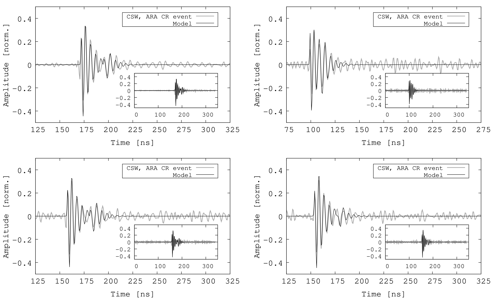
图注：UHECRs, by ID: (top left) 1915-26288, (top right) 1957-13330, (bottom left) 2171-31805, (bottom right) 2250-20189.
对应解读：对应“候选事件的相干叠加波形图”和关键图表导读中的图2/模型拟合段落。
入选理由：该图展示前4个UHECR候选事件的逐事件结果，是检验解析Askaryan模型与ARA相干叠加波形是否在主脉冲、极性、峰宽和旁瓣上匹配的核心证据之一。日报强调论文主要拟合对象是CSW而非单通道峰值，因此这类逐事件波形图比阵列示意图更直接支撑结论。
来源与置信度：\(arxiv_source\)；high；\(arxiv_source\) / template.tex:figure[3]
Fig04
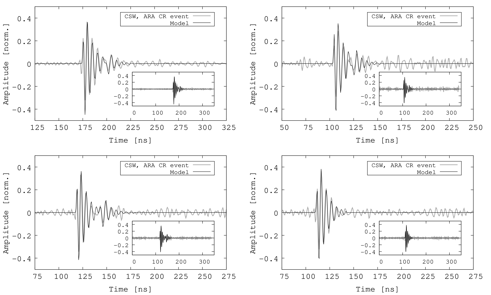
图注：UHECRs, by ID: (top left) 2352-85489, (top right) 2375-17342, (bottom left) 2529-09767, (bottom right) 2716-58611.
对应解读：对应“候选事件的相干叠加波形图”和模型拟合中关于13个候选事件相关系数、功率差的讨论。
入选理由：该图覆盖另外4个UHECR候选事件，可用于判断模型匹配是否具有样本一致性，而不是只在少数事件上成立。它与Fig03共同支撑摘要中13个候选事件相关系数达到0.69到0.86、分数功率差较小的核心结果。
来源与置信度：\(arxiv_source\)；high；\(arxiv_source\) / template.tex:figure[4]
Fig05
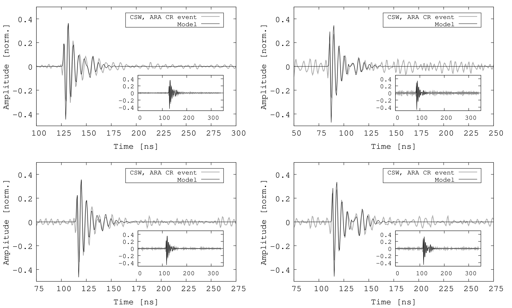
图注：UHECRs, by ID: (top left) 2782-00106, (top right) 2955-47449, (bottom left) 2961-98361, (bottom right) 2978-29412.
对应解读：对应“候选事件的相干叠加波形图”“残差/系统结构检查”和模型拟合段落。
入选理由：该图展示第三组4个候选事件，是评估不同事件ID下数据—模型波形一致性、是否存在离群波形或系统性主脉冲附近偏差的重要图。对于日报中提醒的旁瓣、零交叉、相位响应问题，这类多事件波形面板最有诊断价值。
来源与置信度：\(arxiv_source\)；high；\(arxiv_source\) / template.tex:figure[5]
Fig06
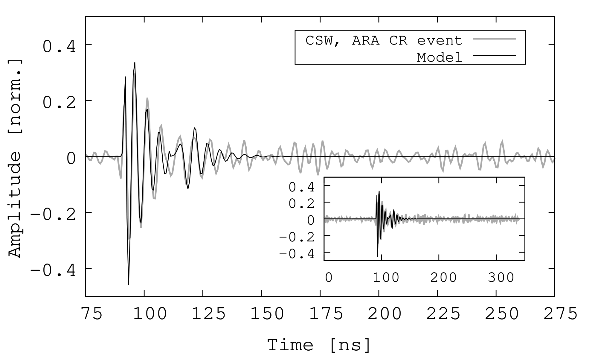
图注：UHECRs, by ID: 3352-89556
对应解读：对应“候选事件的相干叠加波形图”和13个候选事件完整性检查。
入选理由：该图展示最后一个UHECR候选事件3352-89556，使13个候选事件的逐图证据完整。虽然只包含单个事件，覆盖面小于Fig03-Fig05，但对避免只展示部分高匹配事件、确认全集样本结论很重要。
来源与置信度：\(arxiv_source\)；high；\(arxiv_source\) / template.tex:figure[6]
Fig07
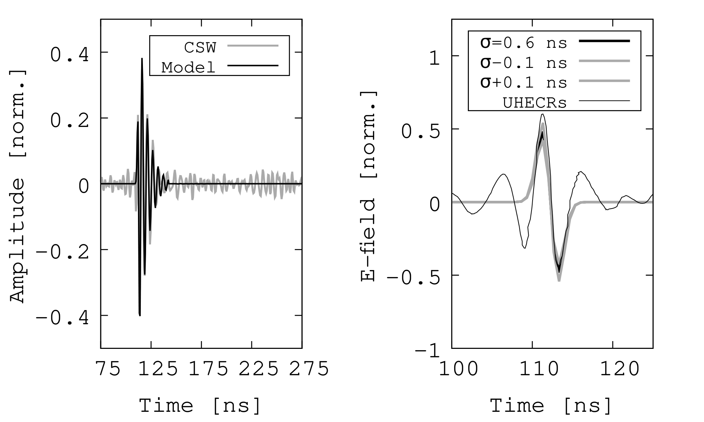
图注：(Left) the results from Fig. \(\ref{fig:2}\) (bottom right). (Right) Equation \(\ref{eq:s},\) evaluated with the reconstructed $\sigma_t$ from Tabs. \(\ref{tab:results}\) and \(\ref{tab:results2},\) and $E_0 = 1$. Thick black line: $\sigma_t = 0.6$ ns. Thick gray lines: $\sigma_t = 0.7$ ns and $\sigma_t = 0.5$ ns. Thin black line: average data from UHECR $\vec{E}$-fields, adapted from Fig. 2 of \(\cite{xwqy-yzrk}.\)
对应解读：对应“Askaryan电场解析结果与ARA推断结果的对比图”和关键图表导读中的图5。
入选理由：该图明确比较解析公式得到的Askaryan E-field与ARA UHECR电场平均数据，并展示不同sigma_t模型线，是验证复数频域解析形式能否给出物理合理电场形态的关键图。它比普通探测器结构图更直接支撑论文关于从解析形式获得Askaryan矢量电场并与ARA结果一致的主张。
来源与置信度：\(arxiv_source\)；high；\(arxiv_source\) / template.tex:figure[7]
Fig02
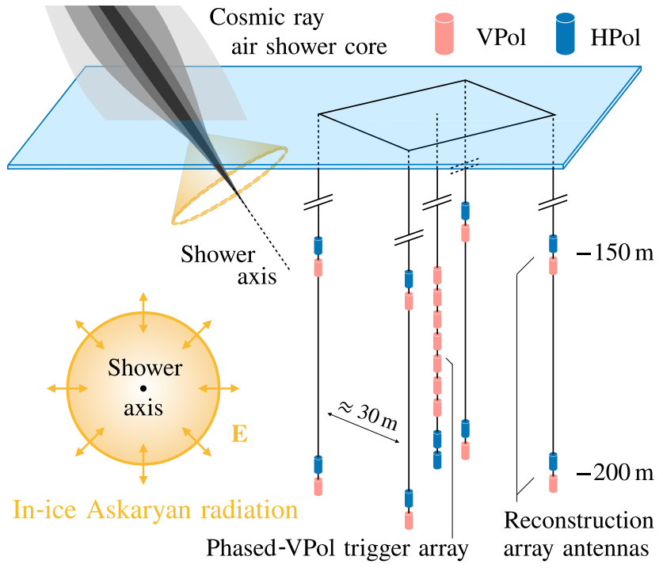
图注：The proposed UHECR candidate event geometry consists of a high-energy cascade interacting along the shower axis that enters the ice and creates Askaryan radiation. Figure adopted from \(\cite{xwqy-yzrk}.\)
对应解读：对应“几何或方向重建示意图”和关键图表导读中的图1。
入选理由：该图给出UHECR候选事件的物理几何：高能级联沿 shower axis 入冰并产生Askaryan辐射。它有助于解释Cherenkov几何、入射方向与ARA探测之间的关系，是理解为什么这些事件可被解释为宇宙线而非其他背景的必要上下文。
来源与置信度：\(arxiv_source\)；high；\(arxiv_source\) / template.tex:figure[2]
强相关工作
这篇工作与 Askaryan 效应的基础理论、束流实验验证以及冰中射电中微子实验密切相关。可检索关键词包括“Askaryan effect radio emission ice”、“coherent radio emission particle cascade”、“ARA ultra-high-energy cosmic rays”、“Askaryan Radio Array cosmic ray candidates”和“radio neutrino detector waveform reconstruction”。读者如果想追溯物理基础，应从 Askaryan 最初关于介质中电荷过剩相干辐射的论文、SLAC 束流实验对冰或盐中 Askaryan 脉冲的验证，以及 Alvarez-Muñiz、Zas、Halzen、Stanev 等人的级联射电计算开始。
相似观测方面，ARA、ARIANNA、ANITA、RNO-G 和 IceCube-Gen2 Radio 都面对类似问题：如何区分 Askaryan 信号、地磁宇宙线信号、人造射频干扰和仪器效应。ANITA 的异常事件和极化解释曾引发大量讨论，说明射电瞬变的几何与传播解释很容易出现张力。本文的解析波形方法可作为这些争论的一个技术参照：如果一个事件无法在合理几何和通道响应下重现波形相位，那么仅靠方向或能量异常并不足以支持新物理解释。
相似工作：
- https://arxiv.org/abs/2606.05514
- https://arxiv.org/search/astro-ph?query=Askaryan+Radio+Array+cosmic+ray&searchtype=all
- https://arxiv.org/search/astro-ph?query=radio+neutrino+detector+waveform+reconstruction&searchtype=all
基础理论 / 方法工作：
- https://doi.org/10.1016/0370-1573(92)90089-N
- https://arxiv.org/abs/astro-ph/0003315
- https://arxiv.org/abs/astro-ph/0108290
相反观点 / 张力线索：
- https://arxiv.org/search/astro-ph?query=ANITA+anomalous+events+Askaryan&searchtype=all
- https://arxiv.org/search/astro-ph?query=radio+frequency+interference+Askaryan+neutrino+detectors&searchtype=all
8. Constraining the jet base emission of M87* with past and future Event Horizon Telescope observations
- 来源：arXiv / astro-ph.HE
- 链接：https://arxiv.org/abs/2606.05307v1
- 作者：Noemi La Bella, Michael Janssen, Britton Jeter, Hendrik Müller, Bram Van de Berg, Hung-Yi Pu, Paul Tiede, Heino Falcke
- 评分：novelty 7/10，importance 8/10，relevance 8/10，final 8.70/10
- 推荐理由：用合成EHT数据评估M87*视界尺度喷流基部的可探测下限，直接关系AGN喷流发射区和EHT观测解释；虽非伽马论文，但对高能喷流物理有价值。
中文题目：用既有和未来事件视界望远镜观测约束 \(\mathrm{M87}^*\) 的喷流基部辐射
做了什么：这篇文章问的是一个很具体但关键的问题：\(\mathrm{M87}^*\) 在事件视界尺度上是否已经能看到喷流基部，而不仅是吸积流形成的环状结构。作者用可独立调节喷流亮度的半解析吸积—喷流模型生成合成 \(\mathrm{EHT}\) 数据，分别模拟 \(2021\)、\(2022\) 和近未来阵列，并用正则化最大似然成像与贝叶斯成像重建。核心结论是：喷流基部的可探测性强烈依赖喷流亮度、短基线覆盖和成像方法；\(2022\) 阵列相对早期阵列有明显提升，若内喷流贡献了未分辨紧致通量的相当一部分，后 \(2021\) 年 \(\mathrm{EHT}\) 数据应有机会直接显现它。
为什么重要：\(\mathrm{M87}\) 是近邻宇宙中研究相对论喷流启动的标杆源，但第一张 \(\mathrm{EHT}\) 黑洞图像主要显示的是阴影和环，喷流如何在数个引力半径内从吸积流中分离出来仍缺少直接图像约束。这项工作把问题从“能不能看到喷流”推进到“给定真实阵列和成像算法，弱到什么程度的喷流还可信可见”，因此能把未来观测中的非探测结果也转化为物理限制。
理论 / 观测 / 仪器方法价值：理论上，它为吸积流—喷流模型中的能量分配和喷流基部亮度提供可观测阈值；观测上，它量化了不同 \(\mathrm{EHT}\) 阵列配置，尤其是 \(2022\) 年改善的短基线覆盖，对低表面亮度结构恢复的作用；方法上，它比较了正则化最大似然和贝叶斯成像在弱延展结构检测中的可靠性，强调不能只凭一张漂亮图判断喷流存在。
为什么应该关注：如果你关心黑洞喷流启动、广义相对论磁流体模拟与 \(\mathrm{EHT}\) 图像之间的连接，这篇文章值得看，因为它给出了一个实用判据：当 \(\mathrm{M87}^*\) 的后续 \(\mathrm{EHT}\) 图像没有清晰内喷流时，究竟意味着喷流确实弱，还是只是阵列和成像方法还不够。它也提醒读者，\(\mathrm{EHT}\) 科学正在从“成像黑洞阴影”转向“测量阴影周围的弱结构”。
展开详细解读：文章讲解、背景、理论、重点章节、图表与相关工作
文章详细讲解
科学问题：\(\mathrm{M87}\) 的千秒差距喷流很早就被确认，但喷流真正从黑洞附近哪里开始、在几个 \(r_{\rm g}\) 到几十个 \(r_{\rm g}\) 的尺度上亮到什么程度，仍是 \(\mathrm{EHT}\) 时代的核心问题。第一代 \(\mathrm{EHT}\) 图像在 \(230\,\mathrm{GHz}\) 显示了不对称环状辐射，但这并不自动等于喷流基部已经被探测到。环可以主要来自吸积流的同步辐射，也可以包含喷流壁、漏斗边界或外流底部的贡献。本文要解决的不是喷流是否存在，而是在真实 \(\mathrm{EHT}\) 阵列采样和噪声条件下，喷流基部的最低可恢复亮度是多少。
作者怎么做：作者构造半解析吸积—喷流模型，其中吸积流辐射和喷流辐射可以相对独立地调节。这样做的好处是可以把“几何和黑洞尺度结构”与“喷流亮度归一化”分开，系统扫描不同喷流强度。随后他们生成三类合成 \(\mathrm{EHT}\) 数据：对应 \(2021\) 观测配置、\(2022\) 观测配置，以及一个近未来扩展阵列。对每个合成数据集，作者用正则化最大似然成像和贝叶斯成像两类方法重建图像，并比较重建图与输入真值模型在喷流区域的通量恢复、图像保真度和不确定度分布。
关键结果：文章的主要发现是，喷流基部不是简单地由总通量决定是否可见，而是由其相对于环结构的亮度、空间尺度、阵列在短基线和中短基线上的覆盖，以及成像先验共同决定。\(2022\) 阵列由于短基线覆盖改善，对低表面亮度、较延展的内喷流更敏感，比早期配置更能把喷流信号从环的非对称性和成像伪影中分离出来。作者据此给出一个可可靠恢复的喷流强度下限：如果喷流基部贡献了未分辨紧致通量的显著比例，后 \(2021\) 年观测中应当出现可辨认的喷流特征；反过来，若没有清楚喷流信号，就可推断视界尺度喷流对紧致辐射的贡献较小。
局限和下一步：这类研究不可避免依赖输入模型族和成像流程。半解析模型便于控制参数，但未必覆盖全部 \(\mathrm{GRMHD}\) 喷流形态、电子温度处方、非热粒子贡献和时间变率。成像算法的正则项或贝叶斯先验也可能影响弱结构的恢复，尤其在喷流亮度接近探测阈值时。下一步应把此类注入—恢复实验扩展到更多 \(\mathrm{GRMHD}\) 快照、不同黑洞自旋和视角、\(345\,\mathrm{GHz}\) 或多频联合观测，并与真实 \(2021\) 和 \(2022\) \(\mathrm{EHT}\) 数据的闭合量残差直接对比。
背景知识
\(\mathrm{M87}\) 是一个距离约 \(16\) 到 \(17\,\mathrm{Mpc}\) 的巨椭圆星系，中心黑洞质量约为 \(6.5\times 10^9\,M_\odot\)。它的相对论喷流从亚秒差距一直延伸到千秒差距尺度，是研究活动星系核喷流加速、准直和能量抽取的经典目标。\(\mathrm{EHT}\) 的贡献在于把角分辨率推进到几十微角秒，接近 \(\mathrm{M87}^*\) 的事件视界尺度，从而使喷流启动区不再只是间接推断。
历史上，\(\mathrm{M87}\) 喷流研究有两个看似相连但观测尺度差异很大的问题：一是大尺度喷流如何保持准直并产生多波段辐射；二是黑洞附近的磁场和等离子体如何把旋转能或吸积能转化为有序外流。甚长基线干涉测量在毫米和厘米波段已经看到喷流在较大尺度上的宽开角与抛物线形准直，但这些图像通常还没有完全进入阴影和光子环主导的尺度。\(\mathrm{EHT}\) 的 \(2017\) 图像把内部几到十几个 \(r_{\rm g}\) 的区域变成了可讨论对象。
为什么现在值得重新看，原因在于 \(\mathrm{EHT}\) 阵列不是静态仪器。不同年份加入的台站改变了 \((u,v)\) 覆盖，尤其短基线覆盖对较延展、低表面亮度结构极其重要。喷流基部可能不像环的最亮部分那样紧致，因此即使总通量不小，也可能在早期阵列中被稀疏采样和成像正则化压低或误判。\(2022\) 配置的改进使“内喷流可探测性”成为一个可以量化的问题。
该领域常见误区之一是把 \(\mathrm{EHT}\) 图像中的所有非环状延展辐射都称作喷流。实际上，非对称环、散射残差、校准误差、时间变率平均、成像先验都能制造类似结构。另一个误区是认为没有看到喷流就说明喷流不存在。本文强调的是探测阈值：非探测只能排除高于某一亮度和形态范围的喷流基部，不能排除所有磁化外流或低辐射效率喷流。
基础理论 / 方法脉络
从物理图像看，\(\mathrm{M87}^*\) 附近的毫米辐射主要来自相对论电子在强磁场中的同步辐射。吸积流可以在黑洞附近形成光学薄或边缘光学厚的非热平衡等离子体，喷流则可能从黑洞自旋驱动的磁漏斗或盘风区域发出辐射。\(\mathrm{EHT}\) 实际观测的不是直接图像，而是天空亮度分布的傅里叶分量，即可见度；成像是从稀疏采样的傅里叶数据反演天空亮度。
喷流基部探测困难在于它通常是低表面亮度且有方向性的延展结构，而环的亮部是高对比度紧致结构。长基线决定最小角尺度分辨率，短基线和中短基线决定较大尺度结构是否被保留。若短基线缺失，成像算法可能把延展通量重新分配到环上，或通过正则项把弱喷流平滑掉。因此，阵列配置本身就是物理推断的一部分。
本文使用的核心假设是：可以构造一个包含吸积流与喷流分量的输入模型，并人为改变喷流分量的强度，同时保持其他结构相对受控。这样，作者可以执行典型的“注入—恢复”实验：已知真值图像，经过阵列采样和噪声后重建，再检查算法是否找回喷流。这类实验比直接看真实数据更适合回答阈值问题，因为真实数据中喷流真值未知。
常见退化包括：喷流亮度与吸积流电子温度分布退化，喷流方向延展与成像正则化退化，弱喷流与校准系统误差退化，以及时间变率与静态图像假设退化。贝叶斯成像可给出像素或结构层面的不确定度，但其结果仍依赖先验；正则化最大似然成像速度快、直观，却可能把弱结构压向先验偏好的形态。本文的价值正在于把不同算法并列比较，而不是只依赖单一重建。
公式与推导
第一步是把黑洞尺度写成角尺度。令 \(M\) 为黑洞质量、\(D\) 为距离，\(r_{\rm g}\) 为引力半径，则
这里 \(G\) 是引力常数，\(c\) 是光速，\(\theta_{\rm g}\) 给出一个 \(r_{\rm g}\) 在天空上的角尺度。\(\mathrm{EHT}\) 能约束喷流基部，是因为其角分辨率与若干 \(\theta_{\rm g}\) 同量级。
第二步是把天空亮度与干涉仪可观测量联系起来。若 \(I_\nu(l,m)\) 是频率 \(\nu\) 下沿天空方向余弦 \((l,m)\) 的比强度，则理想可见度为
其中 \((u,v)\) 是以波长为单位的基线坐标。环、吸积流和喷流的不同空间尺度会落在不同 \((u,v)\) 范围，因此阵列覆盖直接决定可恢复结构。
第三步是把输入模型分解为吸积流和喷流两部分。一个简化写法是
其中 \(I_{\nu,{\rm acc}}\) 是吸积流图像，\(I_{\nu,{\rm jet}}\) 是单位归一化喷流图像，\(f_{\rm j}\) 是本文扫描的喷流强度参数。这个式子体现了注入—恢复实验的关键：改变 \(f_{\rm j}\) 后查看喷流是否仍能被重建。
第四步是定义可比较的通量。总紧致通量和喷流通量可写为
这里 \(d\Omega\) 是立体角元，\(\Omega_{\rm jet}\) 是预先定义的喷流区域。喷流可探测性常可转化为 \(F_{\nu,{\rm jet}}/F_\nu\) 是否超过某一阵列和算法相关阈值。
第五步是加入观测噪声。合成数据可表示为
其中 \(d_k\) 是第 \(k\) 个复可见度数据点，\(\sigma_k\) 是热噪声和有效校准误差给出的不确定度。实际 \(\mathrm{EHT}\) 分析还常使用闭合相位和闭合振幅，以降低站点增益误差影响。
第六步是正则化最大似然成像。若图像像素为 \(\mathbf{I}\)，数据项为 \(\chi^2(\mathbf{I})\)，正则项为 \(R_q(\mathbf{I})\)，则常见目标函数为
\(\lambda_q\) 控制数据拟合与先验偏好之间的权衡。弱喷流可能在 \(\lambda_q\) 过大时被平滑掉，也可能在 \(\lambda_q\) 过小时被噪声伪影污染。
第七步是贝叶斯成像的后验。给定数据 \(\mathbf{d}\)，有
其中 \(p(\mathbf{d}\mid \mathbf{I})\) 是似然，\(p(\mathbf{I})\) 是图像先验。后验样本不仅给出平均图像，还给出像素不确定度和结构显著性，这是判断弱喷流是否可信的重要诊断。
第八步是定义图像保真度或误差指标。若 \(I_i^{\rm true}\) 和 \(I_i^{\rm rec}\) 分别是真值与重建图像像素，可用归一化均方误差表示
在喷流区域也可单独计算类似指标。若全图误差小但喷流区域误差大，说明环被恢复并不等于喷流被探测。
第九步是通量恢复率。定义
当 \(\eta_{\rm jet}\) 接近 \(1\) 且不确定度小，喷流通量恢复可信；当 \(\eta_{\rm jet}\ll 1\) 或随成像方法大幅变化时，应把所谓喷流特征视为不稳健。
第十步是把探测写成显著性或阈值问题。若 \(F_{\nu,{\rm jet}}^{\rm rec}\) 的后验标准差为 \(\sigma_{F,{\rm jet}}\)，可定义近似显著性
在真实应用中还要检查形态一致性和残差改善，而不能只看 \(S_{\rm jet}\)。本文的下限本质上就是寻找使 \(S_{\rm jet}\)、\(\eta_{\rm jet}\) 和图像保真度同时达到可靠标准的最小 \(f_{\rm j}\)。
模型拟合 / 应用方法
本文的拟合对象不是传统意义上对真实数据直接拟合一组物理参数，而是通过合成观测评估在不同阵列下喷流强度参数的可恢复性。输入端的关键可控量是喷流亮度归一化，例如可理解为 \(f_{\rm j}\) 或喷流紧致通量占比；输出端则包括重建图像、喷流区域通量、图像保真度和不确定度图。读者应把它看作仪器响应和成像方法对物理模型的选择函数测量。
正则化最大似然成像中的“拟合”通常是在满足可见度、闭合相位或闭合振幅约束的同时，最小化带正则项的目标函数。拟合量包括图像像素强度、总通量归一化，有时还包括增益校准修正。关键诊断不是图像是否看起来像喷流，而是不同正则权重、不同初始化、不同数据子集下喷流区域是否稳定，残差是否在相关 \((u,v)\) 范围内系统降低。
贝叶斯成像的优势是能把不确定度传播到图像结构上。对于弱喷流，单个最大后验图像可能过度自信，而后验样本可以显示喷流区域是否经常出现、位置角是否稳定、通量分布是否与零相容。这里的先验也很重要：平滑性、正性、相关长度和总通量先验都会改变低表面亮度延展结构的恢复。因此比较贝叶斯结果与正则化最大似然结果，是判断算法依赖性的必要步骤。
主要退化关系包括喷流通量与吸积流非对称亮斑之间的退化、喷流宽度与短基线采样之间的退化、喷流位置角与阵列点扩散函数旁瓣之间的退化，以及绝对增益误差与延展通量之间的退化。若某个喷流特征只在一种成像设置下出现，或只对应不显著的残差改善，就不应解释为物理喷流。相反，如果在多个算法中喷流通量恢复率接近真值，并且不确定度图在相同区域给出低方差，那么探测才更可信。
实际应用到真实 \(\mathrm{EHT}\) 数据时，最重要的是把“非探测”翻译成上限。也就是说，若 \(2021\) 或 \(2022\) 数据没有重建出清晰喷流，不应简单说喷流缺席，而应结合本文注入—恢复阈值给出类似“在该模型族下，喷流基部通量占比低于某一水平”的约束。这个约束随后可与 \(\mathrm{GRMHD}\) 模拟、喷流功率估计和多频核心谱能量分布共同比较。
重点章节 / 结果段落怎么读
数据与模型部分应首先看作者如何定义半解析吸积—喷流模型，尤其是吸积流与喷流辐射是否真的可以独立调节，以及喷流区域如何划定。这里决定了后面所谓“最低可探测喷流强度”的物理含义。
合成观测部分应重点看三套阵列配置的 \((u,v)\) 覆盖差异。读者尤其要关注 \(2022\) 配置新增或改善的短基线如何覆盖喷流对应的空间频率，因为这是本文结论中阵列升级带来提升的主要来源。
成像方法部分应比较正则化最大似然和贝叶斯成像的设置，包括使用哪些数据产品、哪些正则项或先验、是否有多组超参数扫描，以及是否对不同初始化做稳健性测试。这部分决定弱喷流是否可能是算法偏好。
主结果部分应看喷流强度扫描：随着喷流亮度降低，通量恢复率、图像保真度和不确定度如何变化。真正有用的不是某一张重建图，而是探测阈值如何随阵列和算法系统变化。
讨论部分应看作者如何把模拟阈值连接到真实 \(\mathrm{M87}^*\) 后 \(2021\) 年 \(\mathrm{EHT}\) 数据。如果文章讨论非探测的物理含义，读者应检查它是否明确限定在所采用模型族和频率范围内。
建议重点查看的图表
-
阵列 \((u,v)\) 覆盖图：重点比较 \(2021\)、\(2022\) 和未来阵列在短基线与中短基线上的差别；这些点决定弱延展喷流是否可恢复。
-
输入真值模型图：检查吸积环和喷流基部的相对亮度、位置角、延展尺度和动态范围；若喷流在真值图中已非常贴近环，后续分离会更困难。
-
不同喷流强度的重建图：应看喷流是否在同一方向和相似形态上稳定出现，而不是只看某个亮斑是否存在。
-
通量恢复率曲线或表格：关注 \(F_{\nu,{\rm jet}}^{\rm rec}/F_{\nu,{\rm jet}}^{\rm true}\) 随喷流强度和阵列配置的变化，这是探测阈值最直接的量化结果。
-
图像保真度或残差诊断：检查全图指标与喷流区域指标是否一致；全图拟合好并不保证喷流恢复好。
-
贝叶斯不确定度图或后验样本图：看喷流区域的不确定度是否明显低于或高于背景，后验中喷流结构是否稳定。
-
方法对比图：比较正则化最大似然与贝叶斯成像对同一合成数据的恢复差异；若结论只依赖一种方法，应降低置信度。
关键图表逐图导读
图 1：通常应是模型或阵列配置概览。若坐标轴是天空角坐标，读者要看环中心、亮环方位和喷流延伸方向；若是 \((u,v)\) 平面，要看基线点在短基线区域是否增加。读图陷阱是把更多长基线误认为一定更有利于喷流探测；对低表面亮度喷流，短基线同样关键。
图 2：若展示输入真值图像，应关注颜色条是否为线性或对数标度。对数标度会强化弱喷流的视觉存在感，线性标度则更接近通量主导区域。需要检查喷流相对环峰值的亮度，以及喷流通量是否集中在少数像素还是分布在延展区域。
图 3：若展示不同阵列的重建图，应横向比较同一喷流强度下 \(2021\)、\(2022\) 和未来阵列的恢复差别。关键不是哪张图最漂亮，而是喷流方向、长度和亮度是否随阵列改善而趋近真值。旁瓣或正则化造成的伪影可能沿特定方向重复出现，应结合残差图判断。
图 4：若展示喷流强度扫描，应把横轴理解为注入的喷流亮度或通量占比，纵轴可能是恢复通量、保真度或显著性。探测阈值通常对应曲线从不稳定区进入平台区的位置。需要注意误差条或后验区间是否跨过零喷流或低恢复率区域。
图 5：若展示不确定度图或贝叶斯后验摘要，应看喷流区域是否同时具有较高平均强度和较低相对不确定度。若平均图中有喷流，但后验样本中位置飘移很大，说明这更像模型允许的延展通量而不是稳健探测。
图 6：若展示残差或闭合量拟合，应看加入喷流后是否在特定基线长度、闭合三角形或时间段上系统改善。只在图像域看见延展结构但数据域残差没有改善，不能作为强证据。
论文原图 / 可嵌入图片
Fig02
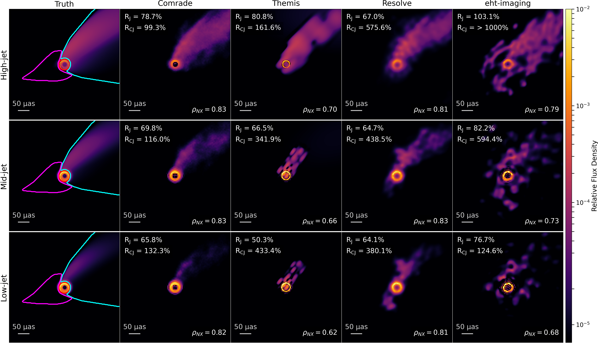
图注：Jet recovery for the 2022 array configuration. Rows show the high-, mid-, and low-jet truth models, while columns display the truth image and reconstructions obtained with the different imaging pipelines. All images are aligned to the truth and normalized to a total flux density of 1~Jy. The red, cyan, and magenta regions indicate the ring, jet, and counter-jet, respectively. For each reconstruction, the recovered jet and counter-jet flux density ratios $R_{\rm J}$ and $R_{\rm CJ}$, as well as the normalized cross-correlation coefficient $\rho_{\rm NX}$, are reported in each panel. The counter-jet is significant only in the high-jet model (see Appendix~\ref{sec:counterjet}) .
对应解读：对应“不同喷流强度的重建图”“通量恢复率曲线或表格”“方法对比图”，以及关键图表逐图导读中的图3/图4式喷流恢复与强度扫描解读。
入选理由：这是全文最直接支撑结论的核心图：同一2022阵列下同时给出高、中、低喷流真值模型和多种成像流程重建结果，并在每个面板标注喷流/反喷流通量恢复比R_J、R_CJ和归一化互相关系数rho_NX。它不仅显示喷流是否可见，还量化了恢复率和图像保真度，是判断2022阵列能否可靠探测弱喷流的关键证据。
来源与置信度：\(arxiv_source\)；high；\(arxiv_source\) / \(LaBella_aa60438-26.tex\):figure[2]
Fig01
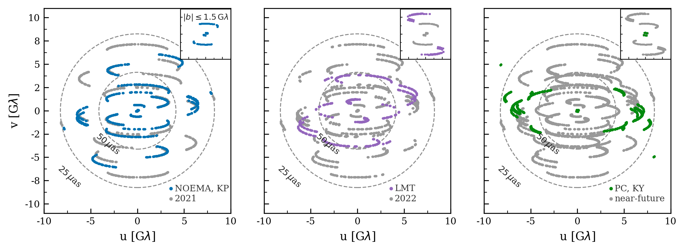
图注：Projected $(u,v)$ coverage at 230~GHz for three representative EHT configurations (2021, 2022, and near-future). Colored points indicate newly introduced baselines in each configuration. Dashed circles correspond to angular scales of 25 and 50 $\mu$as. Insets highlight the short-baseline coverage ($|b| \leq 1.5$ G$\lambda$), which remains relatively limited.
对应解读：对应“阵列(u,v)覆盖图”和关键图表逐图导读中的图1：比较2021、2022和未来阵列短基线与中短基线覆盖。
入选理由：日报反复强调弱延展喷流的可恢复性取决于短基线和中短基线采样。该图直接比较2021、2022和近未来EHT配置在230 GHz的(u,v)覆盖，并带有短基线放大插图和25/50微角秒尺度参考圆，是解释为什么2022配置优于早期阵列的基础图。
来源与置信度：\(arxiv_source\)；high；\(arxiv_source\) / \(LaBella_aa60438-26.tex\):figure[1]
Fig04
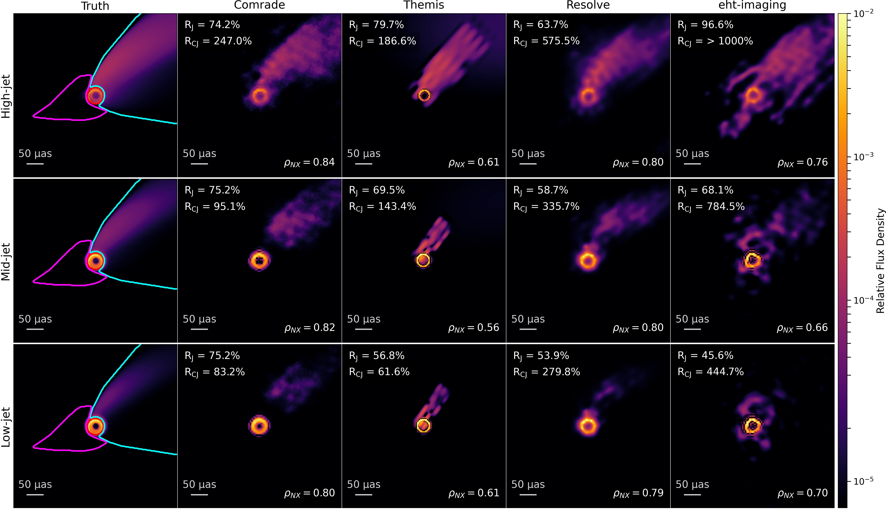
图注：Jet recovery for the 2021 array configuration. The layout and annotations follow Fig.~\(\ref{fig:2022jetrecovery}.\) All images are aligned to the truth and normalized to 1~Jy.
对应解读：对应“不同喷流强度的重建图”和关键图表逐图导读中的图3：横向比较2021、2022和未来阵列在同一喷流强度下的恢复差别。
入选理由：该图给出2021阵列配置的喷流恢复结果，布局与2022图一致，因此可与Fig02直接比较。它用于展示早期阵列对低亮度喷流恢复较弱或不稳定的情况，是建立探测阈值随阵列配置变化这一结论所必需的对照。
来源与置信度：\(arxiv_source\)；high；\(arxiv_source\) / \(LaBella_aa60438-26.tex\):figure[4]
Fig05
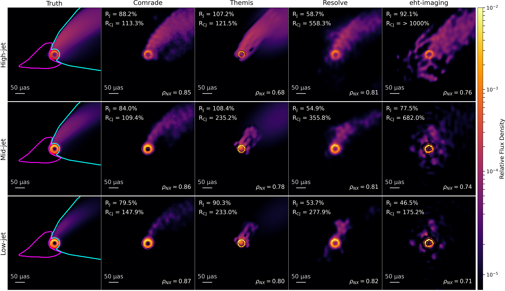
图注：Jet recovery for the near-future array configuration. The layout and annotations follow Fig.~\(\ref{fig:2022jetrecovery}.\) All images are aligned to the truth and normalized to 1~Jy.
对应解读：对应“不同喷流强度的重建图”和“方法对比图”，以及未来阵列对喷流基部探测能力提升的讨论。
入选理由：该图展示近未来阵列配置下的喷流恢复，与Fig02和Fig04构成2021—2022—未来阵列的完整比较链。它能说明随着阵列扩展，喷流方向、形态和通量恢复是否进一步接近真值，从而支撑论文关于继续扩展EHT将提高视界尺度喷流探测能力的判断。
来源与置信度：\(arxiv_source\)；high；\(arxiv_source\) / \(LaBella_aa60438-26.tex\):figure[5]
Fig03
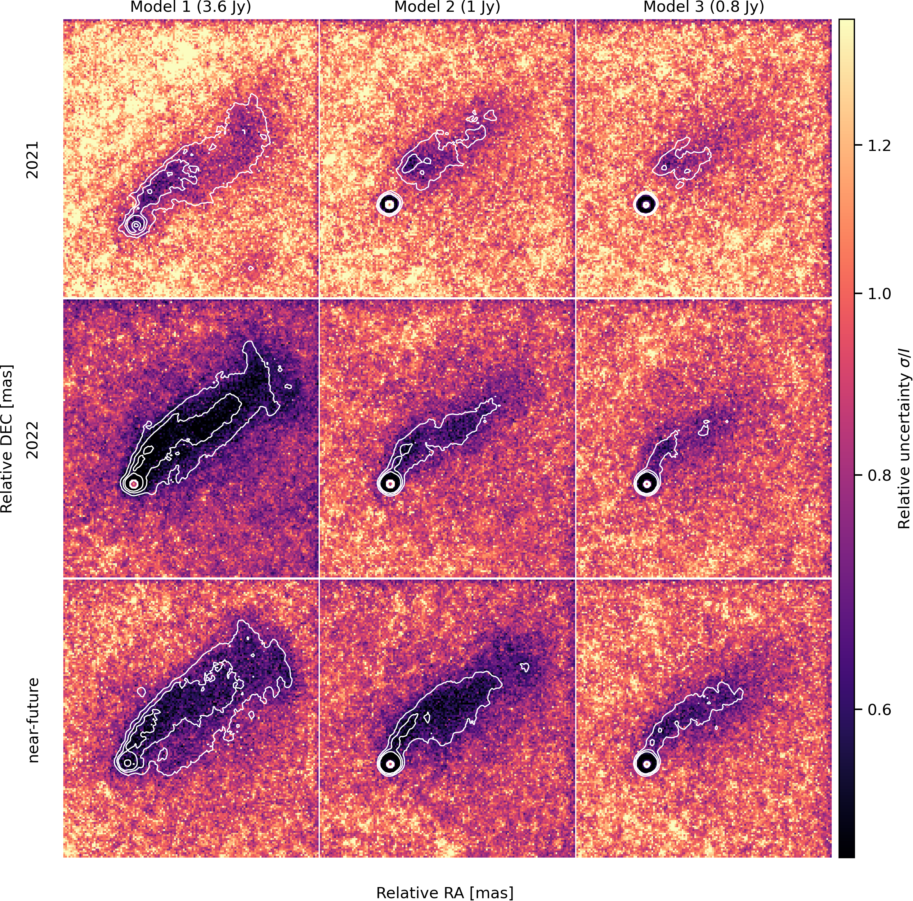
图注：Relative uncertainty maps, defined as $\sigma/I$, derived from the \(\textsc{Comrade}\) posterior distributions for the three models and observing campaigns. All maps are shown using the same field of view and colour scale. Darker regions correspond to lower relative uncertainty, while brighter regions indicate higher relative uncertainty. White contours indicate intensity levels increasing by factors of 3, with the lowest displayed contour at $27\,\sigma$ .
对应解读：对应“贝叶斯不确定度图或后验样本图”和关键图表逐图导读中的图5：检查喷流区域平均强度与相对不确定度。
入选理由：该图给出Comrade贝叶斯后验导出的相对不确定度sigma/I地图，覆盖三种模型和不同观测周期。它直接检验喷流区域是否只是平均图中的可疑延展亮斑，还是在后验中具有较低相对不确定度，是评估弱喷流探测稳健性的关键补充。
来源与置信度：\(arxiv_source\)；high；\(arxiv_source\) / \(LaBella_aa60438-26.tex\):figure[3]
Fig06
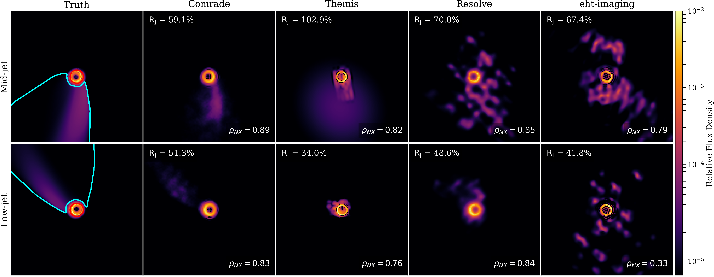
图注：Blind tests using the 2022 configuration and the mid- and low-jet models. The layout and annotations follow Fig.~\(\ref{fig:2022jetrecovery}.\) All images are aligned to the truth and normalized to 1~Jy.
对应解读：对应“方法对比图”“图像保真度或残差诊断”以及模型拟合段落中关于不同成像设置、盲测和算法依赖性的讨论。
入选理由：该图针对2022配置的中、低喷流模型进行盲测，检验在不预先利用真值信息时喷流结构是否仍能被恢复。相比一般展示图，它更能约束成像流程对弱喷流的主观依赖，尤其适合支撑日报中‘若特征只在一种设置下出现应降低置信度’的判断。
来源与置信度：\(arxiv_source\)；high；\(arxiv_source\) / \(LaBella_aa60438-26.tex\):figure[6]
强相关工作
这篇工作直接延续 \(\mathrm{EHT}\) 对 \(\mathrm{M87}^*\) 的黑洞阴影、偏振和环结构研究，但关注点从强环结构转到弱喷流基部。相关文献应检索 \(\mathrm{M87}^*\)、\(\mathrm{EHT}\)、\(\mathrm{jet\ base}\)、\(\mathrm{horizon\ scale\ jet}\)、\(\mathrm{regularized\ maximum\ likelihood\ imaging}\)、\(\mathrm{Bayesian\ imaging}\)、\(\mathrm{uv\ coverage}\) 等关键词。特别值得对照的是 \(2017\) \(\mathrm{EHT}\) 图像论文、偏振论文，以及后续基于 \(\mathrm{GRMHD}\) 的吸积—喷流解释。
也要把本文与较低频 \(\mathrm{VLBI}\) 的 \(\mathrm{M87}\) 喷流成像联系起来。厘米和毫米 \(\mathrm{VLBI}\) 在更大尺度上显示了喷流宽开角、准直轮廓和核心位移，但这些结果不能直接外推到 \(230\,\mathrm{GHz}\) 的视界尺度。潜在张力在于：大尺度喷流要求强有序外流，而 \(\mathrm{EHT}\) 视界尺度图像中喷流辐射可能很弱；这并不必然矛盾，因为喷流可以是高磁化、低辐射效率，或者在 \(230\,\mathrm{GHz}\) 下被吸积流亮度淹没。
相似工作：
- https://arxiv.org/abs/2606.05307
- https://arxiv.org/abs/1906.11243
- https://arxiv.org/abs/1906.11241
基础理论 / 方法工作：
- https://arxiv.org/abs/1906.11238
- https://arxiv.org/abs/1906.11239
- https://arxiv.org/abs/1906.11240
- https://arxiv.org/abs/2105.01173
相反观点 / 张力线索：
- https://arxiv.org/abs/1906.11242
- https://arxiv.org/abs/2105.01169
9. Detecting Tidal Resonances in Binary Neutron Stars
- 来源：arXiv / astro-ph.HE
- 链接：https://arxiv.org/abs/2606.06376v1
- 作者：Fabian Gittins, Harsh Narola, Thibeau Wouters, Peter T. H. Pang, Tanja Hinderer, Chris Van Den Broeck
- 评分：novelty 8/10，importance 8/10，relevance 7/10，final 8.65/10
- 推荐理由：首次完全贝叶斯评估Einstein Telescope探测双中子星潮汐共振能力，并指出忽略共振会偏置潮汐形变率；对未来GW中子星内部探测重要。
中文题目：在双中子星并合中探测潮汐共振
做了什么：这篇论文研究未来第三代引力波探测器爱因斯坦望远镜是否能在双中子星旋近信号中识别由恒星振荡模引起的潮汐共振。作者模拟了一年观测中的双中子星事件，挑出信噪比较高的 200 个信号，用全贝叶斯框架比较含共振与不含共振的波形模型。主要结论是：对有利事件，爱因斯坦望远镜可探测小到 \(\Delta\Phi\approx 0.03\) 的引力波相位跃迁；若分析时忽略共振，会系统性偏置潮汐形变率 \(\Lambda\) 的推断。
为什么重要：双中子星的常规潮汐效应已经能约束中子星物态方程，但它主要测量整体可形变性；潮汐共振则直接关联中子星内部振荡模频率、耦合强度和成分分层，是更接近“星震学”的信息。若第三代探测器真的能分辨这些相位特征，引力波观测就不只是测半径和潮汐形变率，而能进入中子星内部动力学和微物理诊断。
理论 / 观测 / 仪器方法价值：理论上，这项工作把潮汐共振从“可能存在的波形修正”推进到“可用贝叶斯模型选择和参数估计检验的观测量”。观测上，它给出了爱因斯坦望远镜对共振相位跃迁、模频率和潮汐参数偏置的量化灵敏度。方法上，它强调第三代探测器时代的双中子星波形模板不能只包含准静态潮汐项，还需要把动态潮汐和模式共振作为系统误差源纳入。
为什么应该关注：如果你关心中子星物态方程、第三代引力波探测器科学回报，或双中子星波形系统误差，这篇文章值得看。它回答了一个很实际的问题：即使共振相位效应很小，是否会在高信噪比事件中被测到，或者至少会不会在忽略时污染 \(\Lambda\)、质量和物态方程推断。答案是会，而且在爱因斯坦望远镜时代这种效应可能从细节变成必须建模的主效应之一。
展开详细解读：文章讲解、背景、理论、重点章节、图表与相关工作
文章详细讲解
科学问题：双中子星旋近过程中，伴星潮汐场的特征频率随轨道频率上升。当潮汐驱动频率扫过中子星某个本征振荡模频率时，模式会被共振激发，从轨道能量中抽取能量并在引力波相位中留下额外跃迁。传统双中子星引力波分析已经包含由潮汐形变率 \(\Lambda\) 控制的准静态潮汐相位项，但对动态潮汐，尤其是窄频率区间内的共振相位特征，第三代探测器是否能测到还没有经过完整贝叶斯评估。这篇论文的核心问题就是：爱因斯坦望远镜能否识别这些模式共振，并且若不建模会造成多大参数偏置。
作者怎么做：作者构建了含潮汐共振的双中子星波形注入，并在爱因斯坦望远镜灵敏度下模拟一年观测。他们不是只做费舍尔矩阵估算，而是对 200 个最响亮事件进行全贝叶斯分析，比较含共振模型和无共振模型对同一数据的解释能力。共振效应用相位跃迁 \(\Delta\Phi\)、共振频率或相关模式参数来刻画，并与质量、距离、倾角、潮汐形变率 \(\Lambda_1\)、\(\Lambda_2\) 等常规双星参数同时估计。这样的设计能同时回答可探测性、参数恢复和系统偏置三个问题。
关键结果：论文发现，爱因斯坦望远镜对潮汐共振相当敏感；在几何取向、距离、质量组合较有利的事件中，甚至可识别 \(\Delta\Phi\approx 0.03\) 量级的总相位跃迁。这个数值重要在于它远小于传统上直觉认为“明显可见”的相位修正，但第三代探测器长时间、高信噪比地跟踪旋近，能把这种微小累积相位差放大为统计显著差异。作者还展示，如果真实信号含有共振而模板忽略它，潮汐形变率会被错误吸收相位残差，从而导致 \(\Lambda\) 的后验偏移。这意味着共振不只是额外科学机会，也是物态方程测量的系统误差来源。
局限和下一步：这项研究仍依赖特定的共振参数化和注入种群假设，且重点放在爱因斯坦望远镜单一未来设施的能力评估上。真实中子星可能有多个模、旋转劈裂、磁场、超流和组成梯度效应，不同物态方程下的模频率和耦合强度也会更加复杂。下一步需要把更物理的模式谱模型、第三代探测器网络、宇宙学红移分布、选择效应和多事件层级推断结合起来。尤其关键的是把共振参数映射到具体微物理量，而不只是证明 \(\Delta\Phi\) 可测。
背景知识
研究对象是双中子星旋近阶段的引力波。两颗中子星在并合前数分钟到数小时中，轨道频率逐渐升高，引力波相位以极高精度记录了体系能量和角动量损失。对黑洞双星而言，早期旋近主要由点质量广义相对论动力学支配；对中子星而言，有限尺寸效应会在高频端显现，最常见的描述就是潮汐形变率 \(\Lambda\)。\(\Lambda\) 越大，恒星越容易被拉伸，通常对应较大的半径和较硬的物态方程。
历史上，双中子星引力波的中子星物理信息主要来自准静态潮汐项。GW170817 首次给出 \(\Lambda\) 约束，进而限制半径和高密核物质状态方程。但准静态潮汐只测量一种低阶整体响应，相当于把恒星看成在外部潮汐场下缓慢变形的流体球。真实中子星有丰富振荡模式，例如基本流体模、重力模、界面模、剪切模和惯性模；这些模对密度分层、超流、弹性壳层、磁场和旋转很敏感。
潮汐共振的观测背景来自一个简单图像：伴星提供周期性潮汐驱动，驱动频率随旋近扫频。如果驱动频率与某个本征模频率匹配，模式振幅会短暂增长，吸收轨道能量，使轨道提前或滞后演化，最终在引力波相位中留下近似阶跃或局域相位修正。过去这类效应被广泛讨论，但第二代探测器的信噪比和低频灵敏度有限，通常难以把小相位特征同质量、潮汐和噪声混淆区分开。
现在值得重新看，是因为爱因斯坦望远镜和宇宙探索者这类第三代探测器将大幅改善低频灵敏度，能更早看到双中子星旋近，并积累大量波周期。小的相位误差不会简单被噪声淹没，而可能在高信噪比事件中变成可测系统偏差。与此同时，第三代探测器每年可能探测大量双中子星，因此不仅能挑选少数最响亮事件做星震学，也能通过群体统计寻找弱共振信号。
该领域一个常见误区是把“潮汐效应”简单等同于 \(\Lambda\) 的测量。实际上 \(\Lambda\) 只描述零频或低频极限的响应，动态潮汐和模式共振包含频率依赖信息。另一个误区是认为 \(\Delta\Phi\) 小于 \(1\) 弧度就不可测；在匹配滤波中，是否可测取决于相位修正与噪声加权波形导数的重叠、信噪比、参数退化和模型选择证据，而不是单看肉眼可见的相位大小。
基础理论 / 方法脉络
基本物理图像从受迫振子开始。中子星的某个本征模可以近似看作具有本征角频率 \(\omega_a\) 和阻尼率 \(\gamma_a\) 的振子；伴星潮汐场提供频率约为 \(m\Omega\) 的驱动力，其中 \(\Omega\) 是轨道角频率，\(m\) 是潮汐场的方位数。随着引力波辐射带走能量，\(\Omega\) 单调升高，驱动频率扫过 \(\omega_a\) 时产生共振。
在双中子星波形中，可观测量主要是频域应变 \(\tilde h(f)\) 的振幅和相位。点质量相位由后牛顿展开或有效一体理论给出，准静态潮汐相位在高频端随频率快速增长。潮汐共振通常表现为在某个共振频率 (f_{
m res}) 附近发生的附加相位修正；如果共振持续时间短于整体旋近时间，常可近似为相位阶跃或平滑阶跃。论文关心的 \(\Delta\Phi\) 就是这个额外相位变化的有效幅度。
模型假设层面，作者把共振效应作为可参数化的波形修正加入基线双中子星模板，并考察爱因斯坦望远镜噪声曲线下这些参数能否从数据中恢复。关键量包括质量参数，例如探测器系中的啁啾质量 \(\mathcal{M}_z\) 和质量比 \(q\)，潮汐形变率 \(\Lambda_1\)、\(\Lambda_2\)，以及共振频率、相位跃迁 \(\Delta\Phi\) 和可能的模式耦合强度。由于第三代探测器可在低频积累极多周期，质量参数会非常精确，但潮汐和共振都主要影响较高频段，因此两者之间存在重要退化。
观测和统计方法的核心是匹配滤波与贝叶斯推断。给定数据 \(d(t)\)、噪声功率谱密度 \(S_n(f)\) 和模型波形 \(h(\theta)\)，可以构造高斯噪声似然。贝叶斯证据或贝叶斯因子用于比较“含共振”与“不含共振”模型，后验分布用于判断 \(\Delta\Phi\)、\(f_{\rm res}\) 和 \(\Lambda\) 是否被约束。残差是否仍有相干结构，是判断共振是否被错误吸收到其他参数中的重要诊断。
常见退化包括：\(\Delta\Phi\) 与 \(\Lambda\) 的退化，因为二者都改变高频相位；\(f_{\rm res}\) 与总质量的退化，因为质量决定频率演化速率和接触前频段；距离、倾角和极化主要影响振幅，但会通过信噪比影响共振可测性。系统误差则包括噪声曲线假设、校准误差、波形截断频率、忽略自旋或偏心率、以及把复杂多模响应简化为单一共振参数。
公式与推导
可以从双星轨道能量守恒写起。对近圆轨道，辐射反作用满足
其中 \(E_{\rm orb}\) 是轨道束缚能，\(\mathcal{F}_{\rm GW}\) 是引力波能流，\(\mathcal{F}_{\rm tide}\) 表示被恒星振荡模吸收或暂存的潮汐能量通道。若没有共振，\(\mathcal{F}_{\rm tide}\) 可近似并入平滑潮汐相位；共振时它在窄频段内突增。
潮汐驱动下某个模式坐标 \(q_a\) 可写成受迫阻尼振子：
其中 \(\omega_a\) 是模式本征角频率，\(\gamma_a\) 是阻尼率，\(F_a(t)\) 是伴星潮汐场投影到该模式上的驱动力。若 \(F_a(t)\propto e^{-im\Phi_{\rm orb}(t)}\)，共振条件为
这里 \(\Omega\) 是轨道角频率，\(m=2\) 通常对应主导四极潮汐分量。
模式从轨道中抽取能量会导致轨道相位发生额外偏移。若共振可近似为瞬时能量损失 \(\Delta E_a\)，则相位跃迁的量级可由能量平衡估计：
这个式子说明 \(\Delta\Phi\) 不只取决于模式能量，还取决于共振发生时轨道相位对能量的敏感度；低频处剩余周期多，同样能量扰动可积累较大相位影响。
频域波形常写作
其中 \(A(f;\theta)\) 是振幅，\(\Psi(f;\theta)\) 是相位，\(\theta\) 包括质量、距离、倾角、潮汐和共振参数。基线相位可分解为
其中 \(\Psi_{\rm pp}\) 是点质量项，\(\Psi_{\rm tide}\) 是准静态潮汐项，\(\Psi_{\rm res}\) 是本文关注的共振修正。
最低阶潮汐相位常由有效潮汐参数 \(\tilde\Lambda\) 控制，其代表性标度为
其中 \(M\) 是总质量，\(f\) 是引力波频率，\(v\) 是后牛顿速度参数。这个关系强调潮汐项在高频更显著，因此容易与高频附近的共振相位产生相关性。
共振相位可用平滑阶跃近似表示为
其中 \(f_{\rm res}\) 是共振频率，\(\sigma_f\) 控制相位跃迁宽度。若 \(\sigma_f\) 很小，该式趋近于阶跃；若 \(\sigma_f\) 较大，则表示有限持续时间或多个物理效应平滑化后的共振。
探测灵敏度由噪声加权内积决定：
其中 \(S_n(f)\) 是单边噪声功率谱密度。共振是否可测，不是看 \(\Delta\Phi\) 的绝对大小，而是看 \(\partial h/\partial\Delta\Phi\) 在该内积下是否与噪声和其他参数方向可区分。
高斯噪声下似然为
贝叶斯推断通过 \(p(\theta|d)\propto\mathcal{L}(d|\theta)\pi(\theta)\) 得到后验，其中 \(\pi(\theta)\) 是先验。模型比较可用贝叶斯因子
其中 \(Z_{\rm res}\) 和 \(Z_0\) 分别是含共振模型和无共振模型的证据。若 \(\mathcal{B}_{\rm res,0}\) 明显大于 \(1\)，数据偏好共振模型；若无共振模型给出偏移的 \(\Lambda\)，则说明共振相位被错误吸收到潮汐参数中。
模型拟合 / 应用方法
这类分析的拟合对象是探测器数据流中的频域或时域引力波信号。参数通常分为内禀参数和外禀参数：内禀参数包括探测器系质量、质量比、自旋、潮汐形变率 \(\Lambda_1\)、\(\Lambda_2\)、共振频率和相位跃迁 \(\Delta\Phi\)；外禀参数包括 luminosity distance、天区位置、轨道倾角、极化角和并合时刻。论文的关键在于把共振参数和常规双中子星参数一起采样，而不是先固定质量和潮汐再估计共振。
似然通常假定探测器噪声为平稳高斯噪声，并使用噪声功率谱密度 \(S_n(f)\) 加权残差。对爱因斯坦望远镜这种第三代探测器，低频下限会显著影响参数估计：更低的 \(f_{\rm low}\) 带来更多旋近周期，能更好锁定质量参数，从而减轻共振与质量项的退化。但共振本身往往发生在几十到几百赫兹甚至更高频段，因此最终灵敏度还取决于共振频率处的噪声、信号振幅和波形模型精度。
参数退化是读这篇论文时最需要关注的部分。准静态潮汐相位 \(\Psi_{\rm tide}\) 与共振相位 \(\Psi_{\rm res}\) 都改变高频相位，若共振频率靠近潮汐效应主导的频段，无共振模板可能通过调整 \(\tilde\Lambda\) 来补偿局域相位误差。这样得到的 \(\Lambda\) 后验会看似很窄但中心值错误。相反，如果共振频率落在探测器最敏感频段且相位形状足够局域，它会更容易从平滑潮汐项中分离出来。
模型比较不应只看最佳拟合残差是否小。一个更复杂的共振模型有额外参数，因此贝叶斯证据会自动惩罚过大的先验体积；只有当数据中存在足够相干的相位结构时，含共振模型才会得到显著证据优势。实际阅读时应同时看贝叶斯因子、\(\Delta\Phi\) 的后验是否排除零、\(f_{\rm res}\) 是否被定位、以及无共振模型下的残差是否在共振频段呈相干结构。
模型可能失败的地方包括：真实信号含多个模式而模板只含一个共振；中子星自旋导致模式频率劈裂；偏心率或高阶潮汐项产生类似局域相位结构；波形在接触前高频端存在未建模误差；探测器校准误差和非高斯噪声瞬变模拟出相位异常。对第三代探测器而言，统计误差变小后这些系统误差会更突出，因此这篇论文的结论应理解为“在给定模型族和噪声假设下的可测性基准”，不是最终的观测完备性证明。
重点章节 / 结果段落怎么读
数据与模拟种群部分应先读。这里决定了一年观测中双中子星事件的距离、质量、取向和信噪比分布，也决定了为什么选取 200 个最响亮事件。读者应检查注入的共振参数分布是否代表某类具体中子星模式，还是主要作为现象学灵敏度测试；这会影响结论能否直接转化为物态方程约束。
波形模型部分是全文技术核心。需要看作者如何把 \(\Psi_{\rm res}\) 加入标准双中子星相位，\(\Delta\Phi\)、\(f_{\rm res}\) 和宽度参数如何定义，是否允许多个共振，是否考虑自旋、偏心率和高阶潮汐。这里还应关注共振模型在 \(\Delta\Phi\to 0\) 时是否连续退化为无共振模型，因为这关系到贝叶斯因子和后验解释。
贝叶斯分析方法部分要看似然、先验和模型比较设置。特别要检查 \(\Delta\Phi\) 与 \(f_{\rm res}\) 的先验范围，\(\Lambda_1\)、\(\Lambda_2\) 是否采用物态方程无关先验，采样是否稳定，以及证据计算方法是否适合多峰后验。对弱共振信号，先验体积效应可能显著影响贝叶斯因子的数值。
主结果部分应围绕三类图表读：可探测性随 \(\Delta\Phi\) 和信噪比的变化、参数恢复的后验角图、以及忽略共振时 \(\Lambda\) 的偏置。最值得注意的不是单个最强事件，而是 200 个响亮事件中有多少比例能给出有意义的共振识别，以及探测阈值如何随事件性质变化。
讨论与稳健性检验部分决定结论边界。读者应看作者是否测试了不同噪声实现、不同共振频率、不同潮汐参数和不同事件选择。若附录中有注入恢复、残差、贝叶斯因子校准或采样收敛检验，这些内容对判断“\(\Delta\Phi\approx 0.03\) 可测”是否稳健非常关键。
建议重点查看的图表
-
模拟事件的信噪比分布和距离分布：看 200 个最响亮事件相对于全年总体样本有多极端，避免把最优子样本结论误读成平均事件能力。
-
共振相位模型示意图：检查 \(\Psi_{\rm res}(f)\) 在 \(f_{\rm res}\) 附近的形状、跃迁宽度和符号；关键是它与平滑潮汐相位是否形状可区分。
-
贝叶斯因子或探测概率随 \(\Delta\Phi\) 的曲线：看在 \(\Delta\Phi\approx 0.03\) 附近只有少数有利事件可探测，还是大多数响亮事件都可探测；还要看误差条或不同噪声实现的散布。
-
\(\Delta\Phi\) 与 \(f_{\rm res}\) 的后验分布：检查零相位是否被排除，共振频率是否出现多峰，后验是否主要由先验边界截断。
-
含共振与无共振模板的残差比较：看残差是否在共振频段出现相干结构，而不是全频段随机改善；这能判断共振识别是否有物理定位。
-
潮汐形变率偏置图：重点看真实 \(\Lambda\) 是否落在无共振分析的可信区间之外，以及偏置方向是否随共振频率和 \(\Delta\Phi\) 有系统趋势。
-
参数相关性角图：检查 \(\Delta\Phi\)、\(f_{\rm res}\)、\(\tilde\Lambda\)、质量比和自旋之间的相关性；这决定共振星震学能否独立于物态方程先验。
-
稳健性或注入恢复表：看不同注入参数、噪声 realizations 和先验选择下探测结论是否改变，尤其是边缘案例。
关键图表逐图导读
图 1：如果论文给出模拟种群或信噪比分布，横轴通常是网络信噪比、距离或红移，纵轴是事件数或累积分布。数据点或直方图显示全年双中子星样本，突出标记的子样本是 200 个最响亮事件。读图时要注意选择效应：这些事件偏向近距离、面向观测者和较高质量组合，因此不能代表普通第三代探测器事件。
图 2：共振相位模型图通常以频率 \(f\) 为横轴、附加相位 \(\Psi_{\rm res}\) 或总相位差为纵轴。模型线可能展示不同 \(\Delta\Phi\)、\(f_{\rm res}\) 或宽度参数下的相位阶跃。主要结论是共振不是整体平滑重标定，而是在特定频段留下局域相位结构。陷阱是纵轴相位差看起来很小，但匹配滤波对相干相位差非常敏感。
图 3：贝叶斯因子或检出显著性图可能以 \(\Delta\Phi\) 为横轴、\(\ln\mathcal{B}_{\rm res,0}\) 或检出概率为纵轴。不同颜色代表不同事件、信噪比或共振频率。应关注曲线在小 \(\Delta\Phi\) 区域的转折点，以及 \(\Delta\Phi\approx 0.03\) 是少数最佳事件阈值还是稳健群体阈值。若误差条很大，说明噪声实现或参数退化影响明显。
图 4：后验角图一般展示 \(\Delta\Phi\)、\(f_{\rm res}\)、\(\tilde\Lambda\)、质量比和可能的自旋参数。坐标轴是各参数取值，等高线表示二维可信区域，对角线是边缘后验。若 \(\Delta\Phi=0\) 位于高概率区，说明共振未被强检出；若 \(f_{\rm res}\) 后验多峰，说明不同频段相位结构可互相混淆。读图时不要只看峰值，还要看先验边界和长尾。
图 5：潮汐形变率偏置图可能比较含共振恢复与无共振恢复的 \(\Lambda\) 或 \(\tilde\Lambda\) 后验。横轴可是真实注入值或事件编号，纵轴是恢复值与真实值的差。关键是无共振模型是否系统偏离，而含共振模型是否覆盖真实值。陷阱是高信噪比下可信区间很窄，即使视觉偏移不大，也可能是许多标准差的系统误差。
图 6：残差或匹配损失图通常以频率为横轴，纵轴是噪声加权残差、相位残差或 mismatch 贡献。含共振模型应在 \(f_{\rm res}\) 附近显著降低相干残差。读者应检查改善是否集中在物理预期频段；如果改善分散在全频段，可能是额外参数吸收了其他波形误差。
论文原图 / 可嵌入图片
Fig02
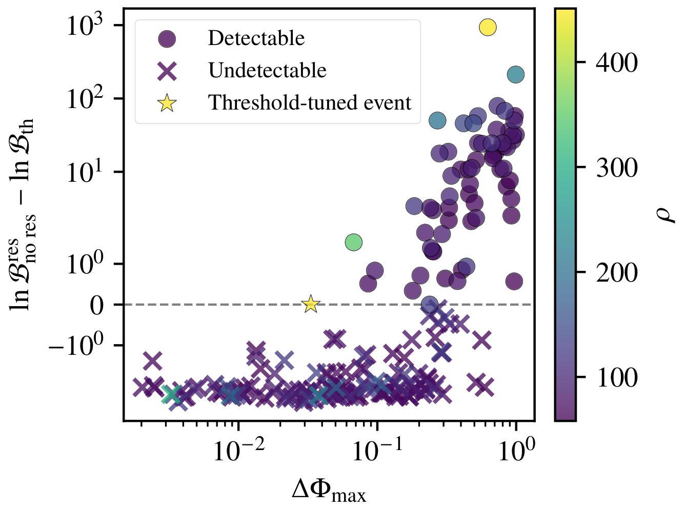
图注：The Bayes factor $\bayesfactor$ as a function of the larger gravitational-wave phase shift $\Delta \Phi_\text{max}$ for the foreground sources. Each event is coloured by its optimal signal-to-noise ratio $\rho$. Events that exceed the threshold $\bayesfactorthreshold$ (horizontal grey line) are classified as detectable (circles), while those below are classified as undetectable (crosses). The detectable sources are primarily concentrated at large $\Delta \Phi_\text{max}$, indicating that the phase shift drives the detectability. We show a tuned source (star) constructed from the loudest signal by reducing its shifts until $\Delta \Phi_\text{max} \approx 0.03$. This provides an estimate of the minimum detectable phase shift with the Einstein Telescope.
对应解读：对应“建议重点查看的图表”第3项，以及“关键图表逐图导读”图3：贝叶斯因子或检出显著性随 \(\Delta\Phi\) 的关系；也直接支撑正文中 \(\Delta\Phi\approx0.03\) 可探测阈值的模型比较讨论。
入选理由：这张图直接展示 \(\ln\mathcal{B}\) 随最大共振相位跃迁 \(\Delta\Phi_{\max}\) 的变化，并用信噪比着色、阈值线区分可探测与不可探测事件，还标出了由最响亮事件调节得到的 \(\Delta\Phi_{\max}\approx0.03\) 案例。它最直接支撑日报的核心结论：小到约 0.03 的共振相位跃迁只在有利事件中可被爱因斯坦望远镜识别，同时能看出探测性主要由相位跃迁和信噪比共同控制。
来源与置信度：\(arxiv_source\)；high；\(arxiv_source\) / letter.tex:figure[2]
Fig01
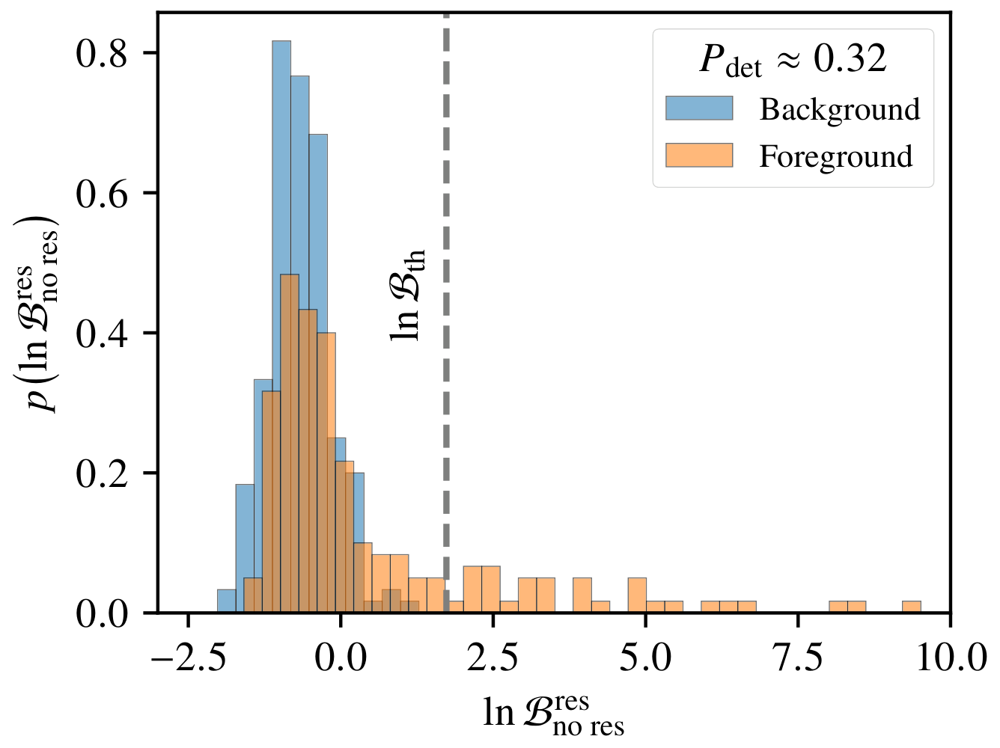
图注：Distributions of the Bayes factor $\bayesfactor$ comparing the hypothesis that resonantly excited modes are present in the signal against the hypothesis that there are none. The background distribution of sources without tidal resonances (blue histogram) is used to set the detection threshold of $\ln \bayesfactorthreshold \approx 1.73$ (vertical grey line), estimated to correspond to five-sigma significance. The foreground distribution of resonant signals (orange histogram) leads to a detection efficiency of $P_\text{det} \approx 0.32$. Note that the maximum Bayes factor is truncated, although we obtained foreground signals with $\ln \bayesfactor > 10$. The excess of resonant sources above the threshold demonstrates that tidal resonances are detectable in a substantial fraction of the simulated Einstein Telescope observations.
对应解读：对应“建议重点查看的图表”第3项，以及“模型拟合”中关于贝叶斯证据、阈值、先验体积惩罚和探测效率的讨论。
入选理由：这张图给出含共振前景样本与无共振背景样本的贝叶斯因子分布，并标出五西格玛等效检测阈值 \(\ln\mathcal{B}_{\rm threshold}\approx1.73\) 和总体检出效率 \(P_{\rm det}\approx0.32\)。它比单个事件后验更能说明论文的群体层面结论：潮汐共振并非所有响亮事件都可探测，而是在模拟 ET 观测中有相当比例越过证据阈值。
来源与置信度：\(arxiv_source\)；high；\(arxiv_source\) / letter.tex:figure[1]
Fig03
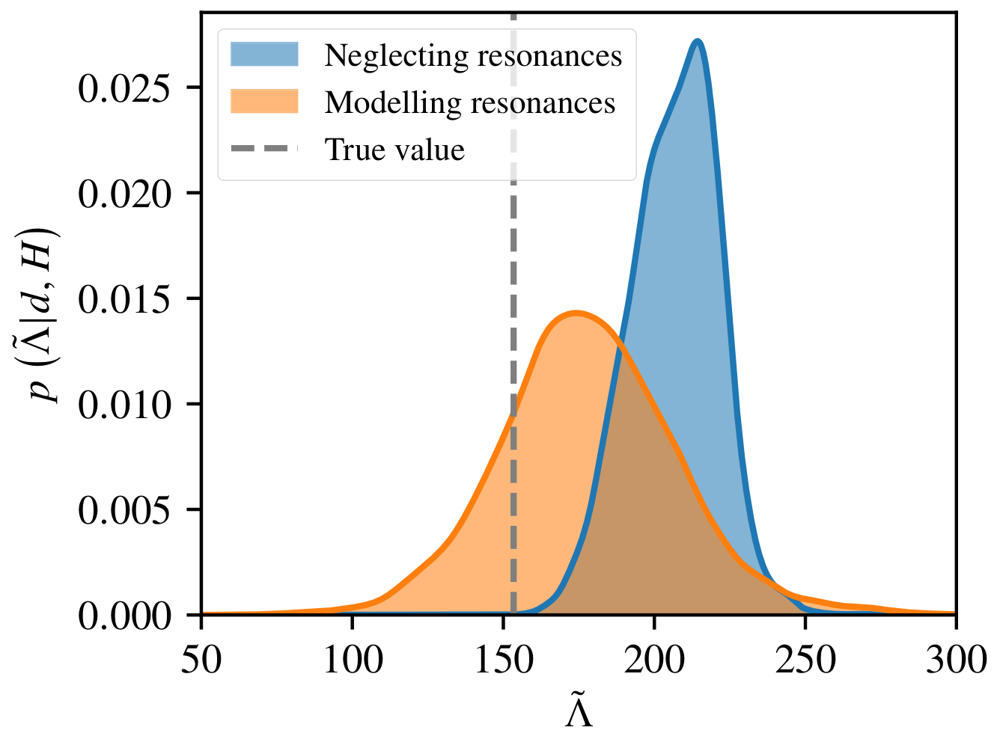
图注：Posterior probability distribution $p(\tilde{\Lambda} | d, H)$ on the mass-weighted tidal deformability $\tilde{\Lambda}$ for a representative detectable event. The source has a maximum phase shift of $\Delta \Phi_\text{max} \approx 0.24$ and signal-to-noise ratio of $\rho \approx 83$. The true value (vertical grey line) is recovered when resonances are modelled (orange distribution), but not when they are omitted (blue distribution). This example demonstrates that neglecting the presence of mode resonances can bias tidal-deformability measurements for large phase shifts.
对应解读：对应“建议重点查看的图表”第6项，以及“关键图表逐图导读”图5：潮汐形变率 \(\tilde\Lambda\) 偏置；也支撑模型拟合段落中无共振模板会吸收局域相位误差的说明。
入选理由：这张图比较了同一可探测事件在含共振模型与无共振模型下的 \(\tilde\Lambda\) 后验，并标出真实值。含共振分析能覆盖真实 \(\tilde\Lambda\)，无共振分析则发生明显偏移，直接证明忽略共振会导致潮汐形变率系统误差。它是理解论文第二个核心结果——共振不仅可测，而且会影响物态方程相关参数推断——的关键图。
来源与置信度：\(arxiv_source\)；high；\(arxiv_source\) / letter.tex:figure[3]
强相关工作
这篇工作与双中子星潮汐测量传统直接相连。GW170817 后，大量研究用 \(\tilde\Lambda\) 约束中子星半径和物态方程；这些工作多数采用准静态潮汐或有效一体模型中的动态潮汐修正。本文的区别是把模式共振作为可由第三代探测器识别的贝叶斯模型比较问题，而不只是波形相位预算中的一项理论修正。建议检索关键词包括 “binary neutron star tidal deformability GW170817”, “dynamic tides neutron star inspiral”, “Einstein Telescope binary neutron star tidal resonance”。
基础理论方面，它继承了中子星振荡模和潮汐耦合的星震学传统。相关文献讨论 \(f\)-mode、\(g\)-mode、界面模、剪切模、惯性模等在双星潮汐场中的激发条件，以及模式频率如何依赖物态方程、超流、壳层和磁场。相反或张力观点主要来自可测性怀疑：第二代探测器信噪比不足、模式耦合可能太弱、复杂波形系统误差可能伪装共振。本文用爱因斯坦望远镜和全贝叶斯模拟表明，在第三代探测器高信噪比条件下，这些怀疑至少需要重新量化。检索关键词可用 “neutron star asteroseismology gravitational waves”, “resonant tidal excitation neutron star modes”, “Bayesian model selection tidal resonances”。
相似工作：
- https://arxiv.org/abs/2606.06376
- https://arxiv.org/abs/1710.05832
基础理论 / 方法工作：
- https://doi.org/10.1103/PhysRevLett.119.161101
- https://arxiv.org/abs/0903.0338
- https://arxiv.org/abs/1110.0467
相反观点 / 张力线索：
- https://arxiv.org/abs/1805.11581
- https://arxiv.org/abs/1903.03909
10. The WISSHFUL program: the highest redshift UFO discovered in a non-lensed QSO
- 来源：arXiv / astro-ph.HE
- 链接：https://arxiv.org/abs/2606.05312v1
- 作者：G. Lanzuisi, L. Borrelli, E. Piconcelli, G. Chartas, A. Luminari, J. Reeves, V. Braito, E. Bertola
- 评分：novelty 8/10，importance 8/10，relevance 7/10，final 8.65/10
- 推荐理由：XMM-Newton/NuSTAR探测z=3.294非透镜QSO中的高红移超快外流候选，给出强反射、低截止能与双速度UFO分量；对AGN反馈和高红移X射线天文重要。
中文题目：The WISSHFUL program: the highest redshift UFO discovered in a non-lensed QSO
做了什么：本篇论文已通过推荐筛选，但自动详细解读生成失败。可先根据题目和摘要判断阅读优先级：We present the first results from the WISSHFUL program, an XMM-Newton heritage program targeting luminous QSOs at Cosmic Noon. We report on recent simultaneous XMM-Newton and NuSTAR observations of the Super-Eddington accreting quasar WISSH13 at z=3.294, which provide the highest quality broadband X-ray spectrum to date for a non-lensed QSO at this redshift. Physical modeling of the continuum reveals a soft photon index ($Γ\sim2$) and strong reflection ($R\sim1.4-1.8$), despite the weak narrow Fe emission, and a low high-energy cut-off ($E_{cut}\sim60-80$ keV, $kTe = 15-20$ keV, depending on the model adopted). Most notably, we detect two significant (at $96.7\%$ and $98.9\%$ confidence level, respectively) absorption features at $\sim7.5$ and $\sim10$ keV rest-frame, interpreted as a blueshifted blend of Fe XXV He$α$ and Fe XXVI Ly$α$. These features indicate the presence of two kinematic components of a highly ionized, high column Ultra-Fast Outflow (UFO) with a velocity of $v_{out}\sim0.1c$ and $v_{out}\sim0.3c$, respectively. The slower wind is consistently detected in an archival 2017 XMM-Newton observation, whereas the faster wind is detected only in 2024. This stratified and variable wind exhibits extreme energetics, with a mass outflow rate of $\dot{M}_{out}\sim20M_{\odot}/yr$ (corresponding to $15\% \dot{M}_{acc}$) for each component, and a kinetic power of the order of $\sim1$ and $\sim10\%$ of the bolometric luminosity, respectively. While this represents one of the most powerful UFOs ever detected, its kinetic power is a similar fraction of the QSO's bolometric luminosity compared to lower-redshift AGN. We present several theoretical frameworks to explain the peculiar accretion and ejection properties of this remarkable QSO at Cosmic Noon.
为什么重要：这篇论文在今日候选中通过了本地推荐阈值，说明它与当前高能天体物理兴趣方向或质量标准较匹配；详细内容建议优先查看原文摘要、结论和图表。
理论 / 观测 / 仪器方法价值：由于 LLM 摘要 JSON 解析失败，本节保留为安全占位，不编造论文未确认的公式、图号或链接。
为什么应该关注：日报仍保留这篇论文，是为了避免单篇摘要失败导致整份日报缺失。请把它作为需要人工快速复核的高优先级候选。
展开详细解读：文章讲解、背景、理论、重点章节、图表与相关工作
文章详细讲解
本文的核心科学问题可以概括为：在 Cosmic Noon 的一个非透镜放大、超爱丁顿吸积 QSO 中，是否能通过宽波段 X 射线光谱直接探测到强大 UFO，并且该 UFO 的速度、质量外流率和动能功率是否与低红移 AGN 的反馈标度关系连续。这个问题有明确的宇宙学背景，因为 z约3 的高光度 QSO 处于黑洞快速增重时期，如果此时的盘风动能能够达到 \(L_bol\) 的百分之几到百分之十，就可能影响宿主星系气体供应和后续恒星形成。
方法上，论文先处理 XMM-Newton 和 NuSTAR 的同时期观测，并与 2017 年 XMM-Newton 档案数据比较。连续谱模型包括简单幂律、带高能截断的幂律、反射模型以及热康普顿化相关模型。图 1 显示 PEX 类模型下全数据的最佳拟合和不同连续谱模型的残差；图 2 给出 \(E_cut\)、Γ、R、\(kT_e\)、τ 等参数的置信等高线。只有在连续谱残差没有被系统性弯曲主导时，5--12 keV 静止系的盲线扫描才具有物理解释价值。
关键结果包括三组。第一，连续谱为较软的 Γ约2，并显示强反射 R约1.4--1.8，同时高能截断较低，E_cut约60--80 keV，热康普顿化温度约15--20 keV。第二，在静止系约7.5和约10 keV 发现两个吸收特征，分别以约96.7%和约98.9%的置信度通过 Monte Carlo 显著性评估；它们被解释为高度电离铁吸收的两个速度分量，v_out约0.1c和约0.3c。第三，慢速分量在 2017 档案 XMM 数据中也存在，而快速分量只在 2024 年检测到，提示风可能分层且随时间变化。
物理解释上，作者将每个分量的质量外流率估计为约20 \(M_sun/yr\)，并约为吸积率的15%；动能功率分别约为 \(L_bol\) 的1%和10%。这使 WISSH13 的 UFO 在绝对功率上非常强，但其动能功率占 \(L_bol\) 的比例与低红移 AGN 并非明显脱节。读者应把图 7 作为“反馈效率比较图”来读：横轴 \(L_bol\)，纵轴质量外流率或动能功率，不同样本点的系统误差和选择效应比单个点的位置同样重要。
局限性也很清楚。两条吸收线的置信度不是极高的 5σ 水平，而是在有限光子统计和盲搜索校正后的百分之九十几置信度；因此它们是重要候选/检测，但仍需更多 epoch 和更高信噪比确认。外流能量学依赖半径估计、覆盖因子、柱密度和电离参数；如果吸收气体不是薄壳、不是均匀覆盖，或存在多个未分辨速度子结构，质量率和功率会系统偏移。下一步最直接的修复是增加深度 XMM/NuSTAR 或未来高分辨 X 射线光谱观测，并对连续谱、反射和光电离吸收做联合、多 epoch、一致的层级拟合。
背景知识
超快外流（Ultra-Fast Outflow, UFO）是活动星系核研究中连接吸积盘微观物理和星系尺度反馈的关键现象。它通常指在 X 射线谱中由高度电离铁离子吸收线揭示的、速度达到约 0.03c 以上甚至数十个百分点光速的盘风。低红移 Seyfert 和类星体中已有不少 UFO 候选，但在高红移、非透镜放大的 QSO 中确认 UFO 更困难：源本身距离远、X 射线光子数少、观测能段经过红移搬移，而且高能连续谱形状与吸收线显著性会相互影响。
本文研究对象 WISSH13 是 WISSHFUL 计划中的一个高光度、高红移 QSO，红移 z=3.294，处在所谓 Cosmic Noon，即宇宙恒星形成和黑洞增长活动最旺盛的时期。摘要指出它是一个超爱丁顿吸积类星体，因此它不是普通的低吸积率 AGN，而是位于强辐射场、可能厚盘或强盘风环境中的极端系统。这样的目标特别适合检验一个长期问题：在黑洞快速增长阶段，辐射压、磁流体过程或盘-日冕结构能否同时产生低温日冕、强反射以及强大的高电离外流。
这篇论文的重要性来自两个层面。第一，观测层面上，它使用同时期 XMM-Newton 与 NuSTAR 数据，给出了该红移非透镜 QSO 目前质量很高的宽波段 X 射线谱。XMM-Newton 提供较好的软/中能段灵敏度，NuSTAR 提供硬 X 射线约束；在源静止系中，观测能段被红移换算后可覆盖更高能的日冕辐射和铁 K 区域。第二，物理层面上，论文报告静止系约 7.5 keV 与约 10 keV 的吸收特征，并解释为 Fe XXV Heα 与 Fe XXVI Lyα 的蓝移吸收混合，对应约 0.1c 和约 0.3c 两个速度分量。
阅读时要避免几个常见误区。其一，不能把任意铁 K 区负残差都直接当作 UFO；必须先确认连续谱基线模型、反射成分、高能截断和仪器背景不会制造类似残差。其二，不能只看单条线的形式显著性，因为盲线搜索涉及试探能量和线强度的多重检验，需要 Monte Carlo 或等效方法校正。其三，外流的质量率和动能功率通常依赖几何因子、半径估计、柱密度和电离参数，误差可能远大于线能量统计误差。其四，高红移 QSO 的“最高红移非透镜 UFO”结论应理解为在当前样本和探测条件下的发现，而不是表明更高红移系统中不存在类似外流。
基础理论 / 方法脉络
从物理图像看，AGN 的 X 射线主要来自黑洞附近热电子日冕对吸积盘紫外/软 X 射线种子光子的逆康普顿散射。若日冕温度较高，谱在硬 X 射线延伸较远；若日冕较冷或光学深度较大，高能处会出现较低的指数截断。本文摘要给出的 photon index Γ约为 2、高能截断约 60--80 keV、热康普顿化电子温度约 15--20 keV，提示其日冕可能比典型低红移低吸积率 AGN 更冷或更紧致，但这一解释必须与反射强度和仪器能段覆盖共同判断。
吸积盘或附近高电离气体还会对连续谱进行反射，产生 Compton hump 和铁 K 发射/吸收结构。反射强度 R 约 1.4--1.8 表示反射成分相对直接连续谱较强；但摘要同时强调窄 Fe 发射较弱，这要求读者区分“宽带反射连续谱强”和“窄铁线强”并非同一件事。强反射可来自几何光弯曲、盘覆盖因子、日冕高度、盘电离状态等因素，而窄铁线则更依赖远端冷物质或较低电离气体的覆盖。
UFO 的观测诊断集中在静止系铁 K 能段。Fe XXV Heα 和 Fe XXVI Lyα 的本征能量大约在 6.7 keV 和 6.97 keV 附近；如果吸收气体朝向观测者高速运动，吸收线会被蓝移到更高的源静止系能量。本文报告的约 7.5 keV 和约 10 keV 特征，若用相对论 Doppler 因子换算，就可得到约 0.1c 和约 0.3c 的速度量级。实际拟合中论文使用 xstar 这类光电离吸收模型表，而非只靠单条 Gaussian，因此速度、柱密度、电离参数和湍流速度会一起影响线形与深度。
统计方法上，这类工作通常先建立连续谱基线模型，例如幂律、带截断幂律、反射模型或热康普顿化反射模型，再检查残差中是否存在窄吸收结构。论文的图 1 和图 2 正是连续谱诊断基础：若高能截断、反射强度或 Γ 的退化没有处理好，后续在 5--12 keV 静止系做盲线扫描时就可能高估吸收线显著性。图 3 的盲线扫描和图 9 的 Monte Carlo ΔC 分布则用于回答“这些线是否只是噪声峰值或搜索过程中的偶然发现”。
系统误差方面要特别留意跨仪器交叉定标、NuSTAR 背景处理、XMM 不同观测 epoch 的谱形差异、源本身变光以及红移换算。由于 z=3.294，源静止系 7.5--10 keV 对应观测系约 1.75--2.33 keV，处在 XMM 有效面积、背景和校准特征需要谨慎核查的区间；而高能截断的静止系 60--80 keV 对应观测系约 14--19 keV，主要依赖 NuSTAR 硬 X 射线约束。理解这一能量映射，是判断论文连续谱和 UFO 结论稳健性的前提。
公式与推导
第一步是把观测能量与源静止系能量联系起来。对红移为 z 的源，\(E_{\rm rest}=(1+z)E_{\rm obs}\)。本文 z=3.294，因此静止系 7.5--10 keV 的吸收特征对应观测系约 \(E_{\rm obs}=E_{\rm rest}/4.294\)，即约 1.7--2.3 keV；静止系 \(E_{\rm cut}\sim60--80\,\mathrm{keV}\) 对应观测系约 14--19 keV，这说明 UFO 线主要由 XMM 能段约束，而高能截断很依赖 NuSTAR。
第二步是用相对论 Doppler 因子把铁线能量转换成外流速度。若吸收气体沿视线朝向观测者运动，近似有 \(D=E_{\rm abs}/E_0=\sqrt{(1+\beta)/(1-\beta)}\)，其中 \(\beta=v/c\)，\(E_0\) 是 Fe XXV 或 Fe XXVI 的本征线能量。反解得到 \(\beta=(D^2-1)/(D^2+1)\)。实际论文采用 Fe XXV Heα 与 Fe XXVI Lyα 混合并用 xstar 表拟合，因此这条公式主要用于数量级检查，而不应替代完整光电离模型。
第三步是描述连续谱。最简单的带截断幂律可写为 \(N(E)=K E^{-\Gamma}\exp(-E/E_{\rm cut})\)，其中 K 是归一化，Γ 是光子指数，\(E_{\rm cut}\) 是高能截断。若只用普通幂律 \(N(E)=K E^{-\Gamma}\)，高能端的弯曲可能被错误解释为反射或吸收残差，因此论文比较 PL、CPL、PEX/REFL/CREFL 的残差是必要步骤。
第四步是把高能截断与热康普顿化日冕联系起来。经验上，热日冕模型中 \(E_{\rm cut}\approx 2\!-\!3\,kT_e\)，具体系数取决于几何和光学深度。本文摘要给出 \(E_{\rm cut}\sim60--80\,\mathrm{keV}\) 与 \(kT_e\sim15--20\,\mathrm{keV}\)，两者在数量级上相符，但图 2 中 \(kT_e\) 与 \(\tau\) 存在退化，需要用置信等高线而不是单点值判断。
第五步是理解电离吸收。光电离参数定义为 \(\xi=L_{\rm ion}/(n r^2)\)，其中 \(L_{\rm ion}\) 是电离光度，n 是气体数密度，r 是吸收体到中心源的距离。高电离 Fe XXV/XXVI 吸收要求较高 \(\xi\)，而柱密度 \(N_H\approx n\Delta r\) 决定吸收线深度和边结构；若 \(\xi\)、\(N_H\)、湍流速度和覆盖因子没有同时约束，线深对应的物理量会有较大不确定性。
第六步是估计外流半径的常用上限。由 \(\Delta r 第七步是质量外流率。薄壳近似下常写为 \(\dot{M}_{\rm out}\approx 4\pi C_f \mu m_p N_H r v_{\rm out}\)，其中 \(C_f\) 是全局覆盖因子，\(\mu m_p\) 是平均粒子质量，\(N_H\) 是氢柱密度。本文给出每个分量约 \(20\,M_\odot\,\mathrm{yr}^{-1}\)，但该值对 \(C_f\) 和 r 极其敏感，因此阅读时应检查作者采用的几何假设和半径估计。 第八步是动能功率与反馈效率。\(\dot{E}_{\rm kin}=\frac{1}{2}\dot{M}_{\rm out}v_{\rm out}^2\)，动量通量为 \(\dot{P}_{\rm out}=\dot{M}_{\rm out}v_{\rm out}\)。与辐射场比较时常用 \(\epsilon_k=\dot{E}_{\rm kin}/L_{\rm bol}\) 和 \(\dot{P}_{\rm out}/(L_{\rm bol}/c)\)。由于速度平方进入 \(\dot{E}_{\rm kin}\)，0.3c 分量即便质量率类似，也会比 0.1c 分量贡献大得多的动能功率。 第九步是统计拟合量。对低计数 X 射线谱，常用 Cash 统计量 \(C=2\sum_i[m_i-d_i\ln m_i]+\mathrm{const}\)，其中 \(d_i\) 是第 i 个谱道观测计数，\(m_i\) 是模型预测计数。加入吸收线或 xstar 分量后的 \(\Delta C=C_{\rm new}-C_{\rm base}\) 若为负，表示拟合改善；但盲搜索中的显著性应通过模拟 \(p=P(\Delta C_{\rm sim}\le\Delta C_{\rm obs})\) 评估，而不是直接套用单次检验的 \(\chi^2\) 近似。 本文的拟合链条可分为连续谱拟合、残差/盲线搜索、物理吸收模型拟合和能量学推导四步。连续谱拟合的观测量是 XMM-Newton 与 NuSTAR 的能道计数谱，模型需要经过仪器响应矩阵和有效面积折叠后与观测计数比较。拟合参数包括光子指数 Γ、归一化、高能截断 \(E_{\rm cut}\)、反射强度 R，以及在热康普顿化模型中的电子温度 \(kT_e\) 和光学深度 \(\tau\)。 统计上，低计数或 Poisson 数据通常使用 C-stat/Cash 统计量。论文图 1 在不同模型残差旁报告 C-stat/d.o.f.，这比只比较肉眼谱形更可靠。加入吸收线时，\(\Delta C\) 的改善可以作为候选线强度的初步指标，但由于线能量和归一化在盲扫中被多次试探，不能直接按单次 \(\chi^2\) 自由度转换为全局显著性。图 9 的 Monte Carlo 分布是本论文显著性论证的关键环节。 残差诊断方面，应先确认 PL 或 CPL 模型中的大尺度残差是否由缺失反射或高能截断造成，再在最佳连续谱基线下检查窄负残差。图 3 的盲线扫描用窄 Gaussian 在 5--12 keV 静止系扫能量和线归一化，适合发现未知吸收特征；但 Gaussian 只是一种探测工具，最终需要 xstar 这类光电离模型确认是否能由 Fe XXV/XXVI 在同一电离状态和速度下解释。 参数退化是本文拟合的核心风险之一。\(E_{\rm cut}\)、Γ 和 R 会互相影响：较强反射可改变硬 X 射线形状，较低截断也会压低高能通量，两者都可能改善 NuSTAR 能段残差。热康普顿化模型中 \(kT_e\) 与 \(\tau\) 也有显著退化，高温低光深和低温高光深可能产生类似 Γ。吸收模型中，\(N_H\)、\(\xi\)、湍流速度和覆盖因子会共同控制线深与宽度，因此速度相对较稳健，质量率和功率则更模型依赖。 系统误差还包括跨仪器定标、背景建模、epoch 变光和能量校准。NuSTAR 高能背景若处理不当，会影响 \(E_{\rm cut}\) 和反射强度；XMM 在观测系约 2 keV 附近的校准和有效面积结构需要排除对吸收特征的干扰。多 epoch 比较时，2024 同时 XMM+NuSTAR 与 2017 单独 XMM 的约束能力不同，快速 UFO 分量“未检测到”不等同于严格不存在，除非论文给出相同模型下的上限。 一个稳健的复核策略是：固定或边缘化连续谱模型，分别测试单 UFO、双 UFO 和无 UFO 模型；对每个模型记录 C-stat、参数置信区间和残差；用模拟数据重复盲扫获得全局显著性；最后在不同合理假设下重新计算 \(\dot{M}_{\rm out}\) 与 \(\dot{E}_{\rm kin}\)。如果 UFO 速度在这些测试下稳定，而能量学只在几何假设中大幅变化，那么结论应表述为“速度检测较强，反馈功率估计模型依赖”。 引言与样本动机：重点找 WISSHFUL 计划选择 WISSH13 的理由、该 QSO 的红移、光度、吸积率和是否超爱丁顿的依据。阅读时把问题写成一句话：作者是想证明高红移非透镜 QSO 中存在与低红移 AGN 可比反馈效率的 UFO，还是主要强调单个极端个例的物理性质。 观测与数据处理：重点检查 XMM-Newton 与 NuSTAR 的曝光、筛选、背景、谱合并/分组、交叉定标常数和 2017 档案数据处理是否一致。由于关键吸收线在观测系约1.7--2.3 keV，高能截断在观测系约14--19 keV，不同仪器承担的物理结论不同，不能把“宽波段联合拟合”简单理解为所有参数由所有仪器同等约束。 连续谱建模章节：按 PL、CPL、PEX、REFL、CREFL 的顺序读，记录每个模型的 C-stat/d.o.f.、Γ、\(E_{\rm cut}\)、R、\(kT_e\) 和 \(\tau\)。关键不是哪个模型 C-stat 最小，而是不同合理连续谱下 UFO 残差是否仍然存在，以及低高能截断是否在反射模型中仍稳健。 吸收线搜索与 xstar 拟合：先看 Gaussian 盲线扫描如何发现候选特征，再看 xstar 如何把线能量、线深和可能的 Fe XXV/XXVI 混合转化为 \(N_H\)、\(\xi\)、红移/速度。这里应特别留意湍流速度设定、吸收体覆盖假设和是否允许两个 UFO 分量同时存在。 显著性与多 epoch 章节：阅读图 9 和相关文字，确认 Monte Carlo 模拟是否使用相同的基线模型、相同能段和相同搜索自由度。随后比较 2017 与 2024：慢速分量持续存在而快速分量只在 2024 出现，可能是真实变光，也可能是信噪比、曝光或连续谱差异造成的非检测。 讨论与能量学：把 \(\dot{M}_{\rm out}\)、\(\dot{E}_{\rm kin}\)、\(\dot{P}_{\rm out}\) 与 \(L_{\rm bol}\)、\(\dot{M}_{\rm acc}\) 的比例分开记录。讨论部分若提出辐射驱动、磁驱动、超爱丁顿厚盘或紧致日冕框架，应判断它们是数据直接支持的结论，还是用于解释现象的可行理论场景。 宽波段谱与连续谱残差图：重点看 XMM 与 NuSTAR 数据是否在交叠能段一致，PL、CPL、PEX 等模型的残差是否呈系统弯曲，以及吸收线所在能区的负残差是否在不同探测器中重复出现。 连续谱参数置信等高线：检查 E_cut--Γ、\(E_cut--R\)、kT_e--τ 的 68%、90%、99% 等高线形状。若等高线很长或贴近参数边界，说明低高能截断或强反射可能与其他参数退化，而不是独立精确测量。 盲线扫描图：重点看能量-线归一化平面中负归一化区域的 ΔC 等高线，约7.5和10 keV 静止系特征是否为局部孤立极值，以及是否还存在其他可疑吸收/发射候选。 Monte Carlo 显著性分布：检查观测 ΔC 竖线相对模拟噪声分布尾部的位置，确认论文给出的 96.7% 和 98.9% 是否已考虑搜索能段和自由参数。还要看模拟使用的基线模型是否与真实最佳拟合模型一致。 xstar 红移/速度置信曲线：看 UFO1 和 UFO2 的红移约束是否单峰、是否有多个局部极小值，以及从吸收红移到 \(v_out\) 的换算是否采用相对论公式。速度误差应来自红移置信区间，而不只是线中心测量误差。 能量学比较图：在 \(\dot{M}_{out}-L_{bol}\) 和 \(\dot{E}_{kin}-L_{bol}\) 图中，看 WISSH13 与本地 Seyfert、SUBWAYS 低红移 QSO、高红移透镜 QSO 的相对位置。特别要注意参考线如 \(\dot{E}_{kin}=0.01L_{bol},0.1L_{bol},L_{bol}\) 与数据点误差条。 多 epoch 对比图或表：若正文给出 2017 与 2024 的分开拟合结果，应检查慢速分量是否在两个 epoch 都有一致速度，快速分量的缺失是否由信噪比不足、曝光差异或真实变光导致。 图 1：这是连续谱基线图，应先读主面板的能量轴和通量/计数表示，再看 XMM 的 pn、MOS 与 NuSTAR FPMA/FPMB 是否在模型线上一致。黑色反射成分显示反射对宽波段谱形的贡献，下面的 b、c、d 残差面板比较 PL、CPL、PEX 等模型。陷阱是只盯着铁 K 区吸收残差而忽略高能端弯曲：如果 PL 残差有大尺度弯曲，说明后续线搜索不能建立在 PL 上；应看 PEX 或更物理模型是否已消除连续谱系统误差。 图 2：这是参数退化图，坐标轴包括 \(E_{\rm cut}\) 对 Γ、\(E_{\rm cut}\) 对 R，以及热康普顿化中的 \(kT_e\) 对 \(\tau\)。红、绿、蓝等高线分别给出不同置信水平。读图时不要只记住摘要中的单个 \(E_{\rm cut}\) 或 \(kT_e\) 数值，而要看等高线方向：若 \(kT_e\) 增大时 \(\tau\) 降低仍能产生类似 Γ，就说明日冕温度和光学深度不是独立强约束。该图直接决定“低温日冕”结论的强弱。 图 3：这是 5--12 keV 静止系盲线扫描。横轴是测试 Gaussian 线能量，纵轴是线归一化，负归一化对应吸收线；不同颜色等高线表示 \(\Delta C\) 改善幅度。应重点定位约7.5 keV 和约10 keV 处是否出现清晰负归一化岛，并检查是否有同等强度的其他随机岛。陷阱是把等高线颜色直接当作全局显著性；图注中的 68--99% 是两参数局部解释，最终全局显著性还要看 Monte Carlo。 图 6：这是 xstar 吸收模型给出的红移/速度约束图。横轴应为吸收模型红移或等效速度，纵向统计量反映拟合优劣，绿色水平线给出 68%、90%、99% 置信水平。读者应检查曲线是否有唯一最低点，以及 90% 区间转换出的 \(v_{\rm out}\) 是否稳定。如果曲线有多个谷，说明不同 Fe XXV/XXVI 识别或速度分量可能混淆。 图 7：这是能量学比较图。左图为 \(\dot{M}_{\rm out}\) 对 \(L_{\rm bol}\)，右图为 \(\dot{E}_{\rm kin}\) 对 \(L_{\rm bol}\)，并叠加本地 Seyfert、低红移 QSO、高红移透镜 QSO 和本地强风 QSO 样本。要读的是 WISSH13 在绝对外流率和功率上很高，但相对 \(L_{\rm bol}\) 的比例是否落在已有标度关系附近。陷阱是忽视不同文献样本采用的半径、覆盖因子和电离模型可能不同。 图 9：这是 Monte Carlo 显著性图。横轴为模拟得到的 \(\Delta C\)，纵轴为出现次数或分布密度，橙色和红色竖线标出 UFO1 和 UFO2 的观测 \(\Delta C\)。如果竖线位于模拟分布尾部，说明噪声产生同等改善的概率低。读者要核查模拟是否重复了与真实数据相同的盲搜索流程；若只模拟固定能量线，则显著性会被高估。 Fig03 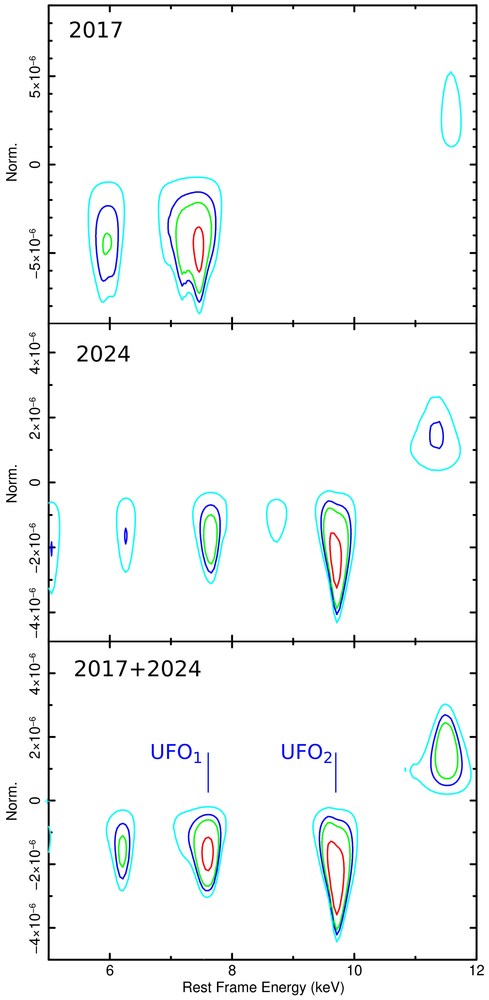模型拟合 / 应用方法
重点章节 / 结果段落怎么读
建议重点查看的图表
关键图表逐图导读
论文原图 / 可嵌入图片
图注：Blind line scans over the 5--12 keV rest frame band. The plot shows contours of $\Delta C$ in the energy vs. line-normalization parameter space for a narrow Gaussian ($\sigma=10$ eV) added to the baseline continuum. Cyan, blue, green, and red contours correspond to a $\Delta C$ of -2.3, -4.61, -5.99, and -9.21, respectively, which can be translated into a significance of 68, 90, 95, and 99\% for two parameters.
对应解读：对应UFO吸收线发现与残差/盲线搜索诊断，是解读两条约7.5和10 keV静止系吸收特征的核心图。
入选理由：该图直接展示5--12 keV静止系能段的盲线扫描结果，用能量-线归一化平面上的ΔC等高线定位吸收特征，是判断UFO候选线是否真实存在的最关键证据之一。
来源与置信度：\(arxiv_source\)；high；\(arxiv_source\) / WISSH13_revised.tex:figure[3]
Fig09
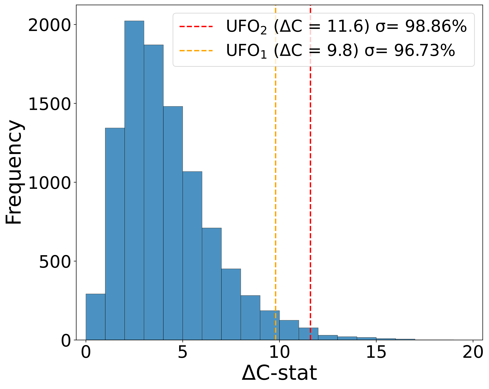
图注：Distribution of $\Delta C$ from the MonteCarlo simulations. The observed $\Delta C$ for UFO$_1$ and UFO$_2$ are shown with orange and red vertical lines, respectively. The resulting significances are $96.73\%$ and $98.86\%$ respectively.
对应解读：对应模型拟合中的显著性评估与系统检验，支撑文中96.7%和98.9%置信度的UFO检测结论。
入选理由：该图给出Monte Carlo模拟得到的ΔC分布，并标出两个UFO候选线的观测ΔC，能直接验证吸收线显著性，优先级高于仅作展示性的谱图。
来源与置信度：\(arxiv_source\)；high；\(arxiv_source\) / WISSH13_revised.tex:figure[9]
Fig01
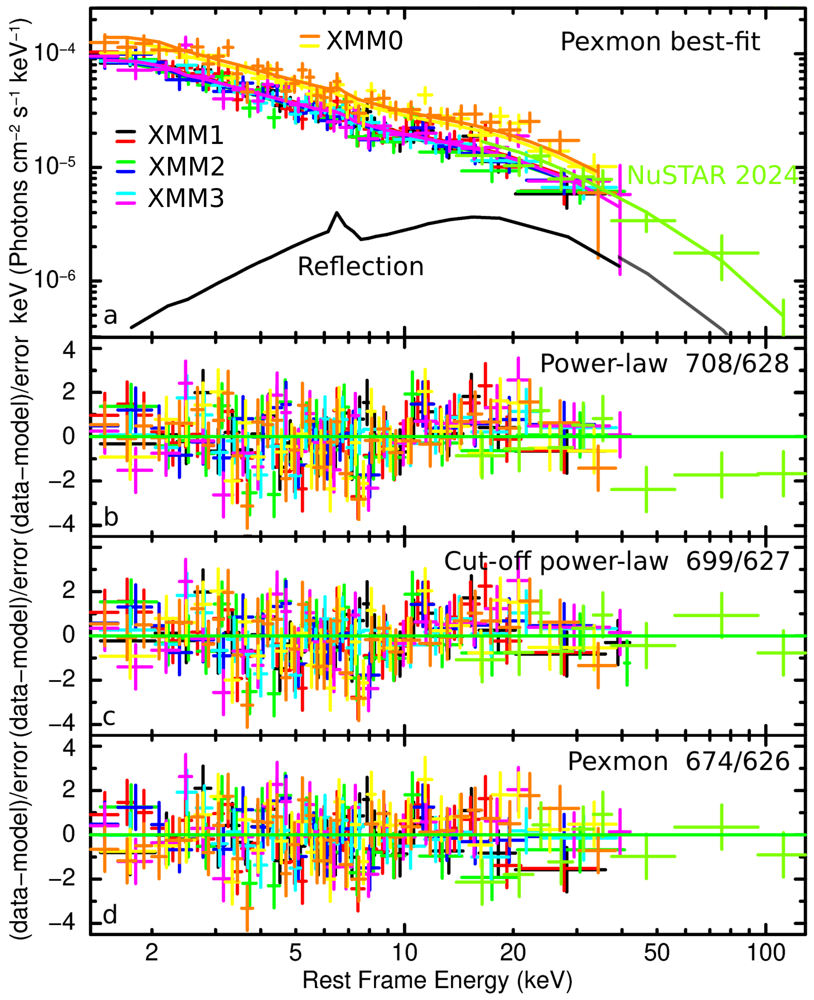
图注：Panel $a$ shows the best-fit PEX model with the full \(\xmm\) and \(\nustar\) data set. pn and MOS1+2 data are shown with different colors for each observation, identified by its name. The reflection-only component is shown in black. Panels $b$, $c$, and $d$, show residuals for the PL, CPL and PEX models, respectively. Residuals for the REFL and CREFL models are not shown for clarity, as they are indistinguishable from those in panel d. C-stat$/$d.o.f. is reported for each model. \(\nustar\) FPMA and FPMB data are co-added for plotting purposes only.
对应解读：对应宽波段X射线谱、连续谱模型比较和残差诊断。
入选理由：该图同时展示XMM-Newton与NuSTAR全数据的最佳拟合PEX模型，以及PL、CPL、PEX等模型残差和C-stat/d.o.f.，是理解强反射、低高能截断以及后续吸收线搜索基线模型的基础。
来源与置信度：\(arxiv_source\)；high；\(arxiv_source\) / WISSH13_revised.tex:figure[1]
Fig02
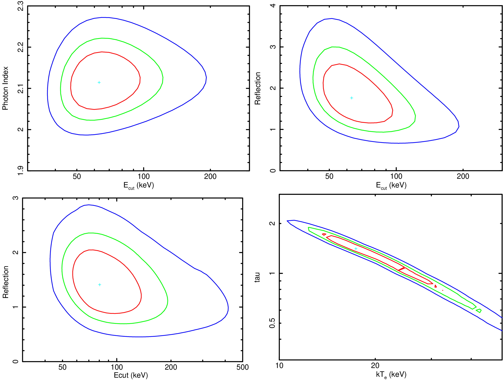
图注：Top row: Confidence contours for the PEX model, $E_\mathrm{cut}$ vs $\Gamma$ (left) and $E_\mathrm{cut}$ vs $R$ (right). Bottom row: Confidence contours for $E_\mathrm{cut}$ and $R$ for the REFL model (left) and for $kT_e$ and $\tau$ for the CREFL model (right). The latter reveals a strong $\tau-kT_e$ degeneracy: higher $kT_e$ is compensated by lower $\tau$ (and vice versa), to reproduce the same observed photon index $\Gamma$. Red, green, and blue contours show 68, 90, and 99\% confidence levels, respectively.
对应解读：对应连续谱模型参数约束，尤其是高能截断、反射强度、光子指数以及热康普顿化参数的置信区间。
入选理由：该图用68%、90%、99%置信等高线展示E_cut、Γ、R、kT_e和τ之间的约束与退化关系，直接支撑论文关于低E_cut和紧致低温日冕的物理解释。
来源与置信度：\(arxiv_source\)；high；\(arxiv_source\) / WISSH13_revised.tex:figure[2]
Fig06
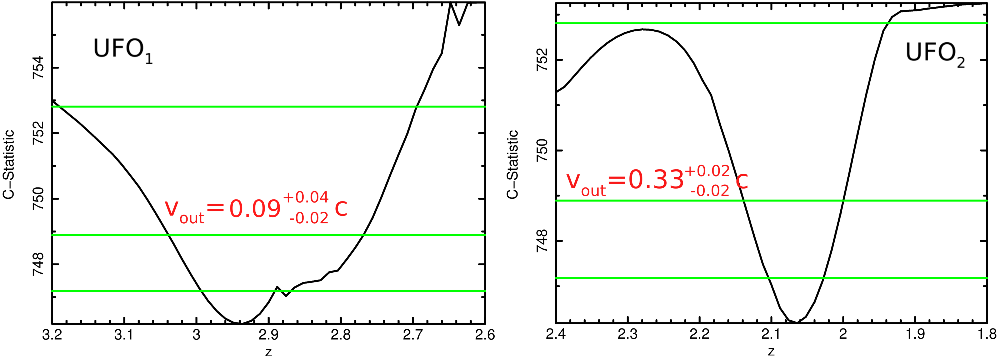
图注：Redshift contours from the fit with \(\textsc{xstar}\) tables with $v_{\rm turb}=5000,{\rm km,s^{-1}}$, for UFO$_1$ (left) and UFO$_2$ (right). The horizontal green lines mark the 68, 90, and 99\% confidence levels. The 90\% constraints on $z$ are converted to $v_{\rm out}$ values quoted in the red labels (see text for details).
对应解读：对应UFO速度测量与xstar吸收模型拟合结果。
入选理由：该图展示两个UFO分量的红移置信曲线，并将90%红移约束转换为外流速度，是确认约0.1c和0.3c两组高速外流成分的关键图。
来源与置信度：\(arxiv_source\)；high；\(arxiv_source\) / WISSH13_revised.tex:figure[6]
Fig07
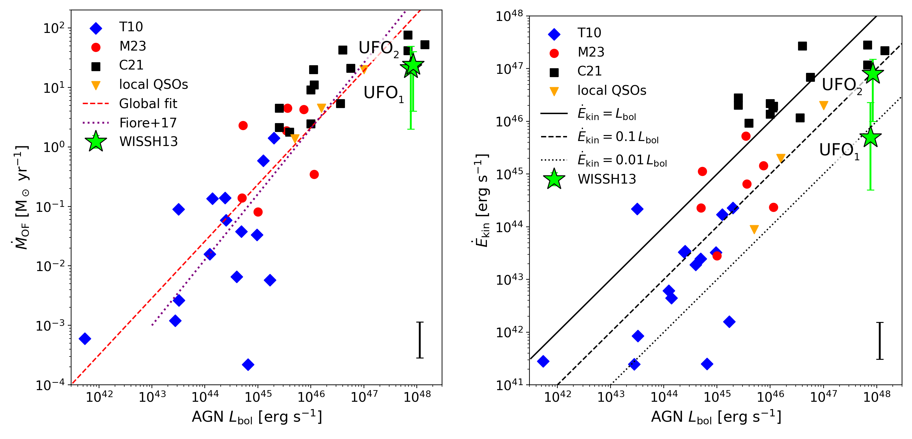
图注：UFO energetics for WISSH13 and literature samples: local Seyferts (T10, blue diamonds), low-z QSOs from SUBWAYS sample (M23, red circles), high-z lensed QSOs (C21, black squares) and local QSOs (PDS~456, IRAS~11119 and Mrk~231, see text for references, orange triangles). Left: $\mout$ vs. $\lbol$. The dotted purple line is the relation derived in \(\cite{Fiore17},\) while the red dashed line shows the linear fits obtained by jointly fitting all our data points. Right: $\ekin$ vs. $\lbol$. Lines for $\ekin=1,0.1,0.01\lbol$ are shown as continuous, dashed, and dotted lines, respectively. The average error bar on $\mout$ and $\ekin$ is shown on the bottom right of each plot.
对应解读：对应UFO质量外流率、动能功率与AGN反馈效率的比较。
入选理由：该图把WISSH13与本地Seyfert、低红移QSO和高红移透镜QSO样本放在同一M_out-L_bol和E_kin-L_bol平面上，直接支撑其UFO虽极端强大但反馈效率与低红移AGN可比的结论。
来源与置信度：\(arxiv_source\)；high；\(arxiv_source\) / WISSH13_revised.tex:figure[7]
强相关工作
相关工作可沿三条线索检索。第一是低红移 AGN 和 Seyfert 中的 UFO 基础样本，关键词包括 ultra-fast outflows、Fe K absorption、Tombesi、Gofford、PDS 456、IRAS 11119、Mrk 231 等。这些工作建立了用 Fe XXV/XXVI 蓝移吸收线测速度、用光电离参数和柱密度估计质量率、再与 \(L_{\rm bol}\) 比较反馈效率的标准框架。本文图 7 中的本地 Seyfert 和本地 QSO 样本正是理解 WISSH13 是否“极端但连续”的参照。
第二是低红移和中等红移 QSO 的系统性 UFO 搜索，例如 SUBWAYS 一类样本。检索路径应使用关键词 SUBWAYS、low-z QSO UFO、XMM-Newton quasar winds、AGN feedback efficiency。与单个极端源相比，样本研究可以提供探测率、选择函数和 \(\dot{E}_{\rm kin}/L_{\rm bol}\) 分布，有助于判断 WISSH13 的两个速度分量是否代表高光度 QSO 的普遍现象还是偶然强风阶段。
第三是高红移 QSO，尤其是被引力透镜放大的系统中的 X 射线 UFO 报告。透镜放大提高光子统计，使高红移铁 K 吸收更容易被探测；但透镜系统又可能引入放大率、微透镜和源结构选择效应。本文强调“非透镜 QSO”非常重要，因为它减少了透镜相关复杂性，但也意味着观测难度更高。可用关键词 high-redshift lensed quasars UFO、Chartas、Fe absorption high-z quasar 检索对照。
潜在张力或需要核查的文献方向包括：强反射但窄 Fe 发射弱的解释、超爱丁顿吸积系统中的低温日冕观测、辐射驱动与磁驱动盘风模型的速度上限，以及 UFO 动能功率是否足以驱动星系尺度分子/电离外流。阅读时不要只找支持 UFO 的文献，也应检索关于 X 射线吸收线显著性、多重检验、仪器校准和连续谱误建模的反例或方法论文，以评估本文 96.7% 与 98.9% 置信度在该领域中的说服力。
相似工作：
（未提供）
基础理论 / 方法工作：
（未提供）
相反观点 / 张力线索：
（未提供）
说明
评分由 LLM 给出初评，再由本地阈值策略过滤；IACT、TeV 伽马射线和高能中微子天文学按重点方向处理。